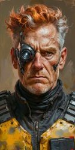
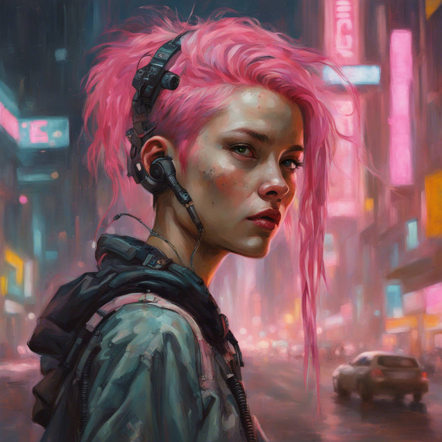

8. Друзья
|
DungeonMaster
Valkorolessandra
13.08.2025 21:44 |
Зона поражения. Лаборатория компании Double. 19 февраля 2045 года. Воскресенье. 13:20
– Верните меня на место. Это похищение в крупных размерах. Вам грозит тюремный сро-о-ооооо--------уууп. Андреас, наконец, нашел, где у Кити кнопка и киберкотик заткнулся. Логи у него начинались примерно 10 месяцев назад. Эта дата, очевидно, была крайне далека от времени его изготовления. Лет на 10-15. После продолжительного списка тестов и настроек следовало лишь несколько строк о том, что котик поменял владельца. С Дж. Хидальго на М. Симпсон. Передача состоялась 22 апреля, меньше чем через неделю после даты первых логов. ✦ ✦ ✦ По мокрому асфальту стреляные легковушки юзом вынесло на Восточную Скайлайн. Какой-то байкер при этом улетел в кювет, но это были его проблемы. Датч гнал, ни метра не уступая Ретро и дело было не в азарте – Летучий Голландец отлично понимал, что номера угнанных тачек уже в базе и что любой достаточно дерзкий (или недостаточно стреляный) патруль, который встретится им по пути – сядет Never More на хвост. Когда это NCPD были так расторопны? Всегда, когда дело касалось жителей Чартер Хилл или, тем более, Корпозоны. К тому же, кто сказал, что это обязательно будут NCPD? Чартер Хилл остался позади, слева, на Грант-стрит мелькнули башни Роклин. Стоило ли заходить в Зону там же, где и все разы до этого? Да еще и оставлять на въезде краденые машины? Какая-то херовая идея. А где лучше сбросить паленую тачку? Правильно, у ТравлСтэй, рядом с Тотентанцем. Они наклеили на борта метку Мальстрёма? Ну так пусть и дальше с ними разбираются. По наводке Парочки буквально на несколько минут заскочили к вендиту рядом с Греттой и, отягощенные запасами воды и провианта, взяли курс на бывший бизнес-центр. ✦ ✦ ✦ Музон ссылка – Сюда? – Boris без энтузиазма взглянул на дыру, куда уже полезли самые шустрые. – Неужели там что-то уцел... Стоп. Ральф, а ну не спеши, вы ж говорили, там все заминировано. Будь любезен, чум, устрой мне экскурсию, por favor. Через два часа после поджога квартиры наивной корпоратки Never More собралась в лаборатории. Оставленные тут Рич и Исхак, смены, мягко говоря, заждались. Однако, когда озвучили мысль о том, что банда явилась, возможно, не с пустыми руками, мат и язвительные комментарии временно стихли. После инструктажа от Датча Boris обошел весь комплекс, постоял, ухмыляясь над мороженым тельцем своего двойника и отправился в серверную.  – Давай уже, Гонзо, не тяни. Ноутбук по-прежнему был открыт, а весь экран заполнен текстом. – Да мы тут... – подошел сзади Ричард, – "о своем, о девичьем". Беглого взгляда было достаточно, чтобы понять – О’Коннелл трепался за кинематограф. Старый как сама Never More. Ностальгия что ли замучила? Или напился тут в одиночестве. Однако, Коми, промотав диалог повыше, понял, что Рич хватки не растерял и своим способом пытался выяснить – ИскИн перед ним или человек. И из какого оно времени. |
|
Andreas `Gonzo` Schreyer
Томми Аткинс
 13.08.2025 22:19 13.08.2025 22:19 |
Можно, наверное, было на этот раз обойтись и без деки, но старая паранойя заставила Андреаса действовать со всеми предосторожностями - войти в Сеть лаборатории и уже оттуда, включив защитные программы, ввести пароль на доступ к базе данных.
Что-нибудь в сети изменилось со времени последнего входа? 1. Входим в сеть
2. Speedy 3. Доспех 4. Пароль на вход. |
|
Эрвин `Коми` Давыдов
Хэлсэ
 14.08.2025 10:17 14.08.2025 10:17 |
На взгляды со стороны дежуривших в лаборатории, Коми ответил заурядным "Без комментариев". Что тут комментировать? Видок у всех был такой, словно они только только соскочили с 4-й корпоративной. Ничего.... Сейчас и пятую устроим... Только пока пусть этим займутся те, кто лучше разбирается с технической стороной вопроса.
Коми лёг на самую дальнюю кушетку. Снял туфли, скинул тренч, растягнул рубашку. Синт кожа потихоньку начинала срастатся, крохотная сетка микроботов копошилась шёлковой паутинкой. Глаза резало от искусственного освещения. Он прилёг на спину и достал из кармана тренча верный диктофон. Вот так Sony послужит бунтарскому антикорпоративному манифесту... Вы сами продадите нам верёвку, на которой вас же и повесят. Щелчок записи: "К вам обращается Коми от лица Never More. Данные, к которым прикреплена запись, несут в себе информацию о переносе человеческого сознания в новую клонированную оболочку. Данные получены из лаборатории корпорации Double, в Зоне поражения, в руинах Вест-сити. Технология проверена и готова к массовому рынку. Клоны полностью осознают себя, необходимость в генетическом совпадение владельца разума и тела отсутствует. В ваших руках неопределённое будущее человечества, целиком и каждого в отдельности. Строки кода, научные декларации, разработки... Бессмертие. Мир никогда больше не станет прежним. И то что сегодня кажется адом, сквозь столетия останется в воспоминаниях райскими кущами. Мы, Never More, знаем, что не сможем остановить неумолимую поступь прогресса. Но никто не помешает вырвать её из цепких рук людей, что жаждут единолично править миром. У каждого из вас в руках ключ от вечности, нужна лишь смелость и воля, что бы распахнуть двери. Не дайте отнять у вас право жить... Не дайте корпоративным драконам обрести бессмертие, не заплатив ничего взамен. Они будут подкупать вас, торговать не только вашими телами, но и душами... Стоит вам лишь назначить рыночную цену. Они сожгли этот мир, не поделив кусок пирога на общем столе. Кто дал им право? Кто отдал выращенный своими руками хлеб в их собственность?! Вам было страшно взять всё в свои руки, принимать решения... Вы считали, что это сделает кто-то лучше и умнее вас, кто-то, у кого есть на это право. И к чему это привело? Такие люди как вы, только куда более честолюбивые, алчные и лишённые какой-либо морали сделали вас рабами, лишили всего, что было дорого и имело хоть какое-то значение. Вы живёте только для того, что бы потреблять, вы не видите ничего другого, так как право видеть у вас отобрала корпоративная пропаганда. Право сильного, право наглого, право вечно голодного. И если вы не повернёте тот ключ, что Never More даёт вам в руки и не откроете дверь в лучшее будущее, если вы повторите ошибки прошлого, эту дверь откроют ваши хозяева. Вечное завтра превратится в вечный ад на земле, земле, которая принадлежит вам... Найдите смелость, найдите волю и никогда! Никогда больше не повторяйте ошибок прошлого! " Рука нажала на стоп. Манифест вышел усталым... Каким-то обречённым... Но Коми не мог сказать ничего лучше, так как понемногу сам переставал верить во что-то лучшее. Так фатализм сменяется прагматизмом. Так идеализм становится реализмом. Так и приходит старость... Все эти мысли мелькали где-то в бездне подсознания задремавшего на больничной кушетке рокербоя.
Результат броска 1D6: 6 - "отхил"
|
|
Andreas `Gonzo` Schreyer
Томми Аткинс
14.08.2025 11:20 |
Андреас скопировал информацию на десять флешек, без комментариев залил туда же манифест, который надо было, кроме того, распространить при помощи Хао в сети - но не сейчас, а тогда, когда флэшки будут уже у адресатов. Всё это делалось с немецкой аккуратностью, на каждую флэшку наносился номер, отдельно делалась красивая табличечка, в которой указывалась, куда должны были попасть флэшки. Наконец всё было закончено.
- Ну что, чум? Есть идеи как это скрытно передать Хао или просто разделим и разбежимся? |
|
DungeonMaster
Valkorolessandra
14.08.2025 16:23 |
Зона поражения. Лаборатория компании Double. 19 февраля 2045 года. Воскресенье. 13:40
Здравствуйте. Это вы? Краем глаза Андреас отметил как побежали строчки логов – ИскИн запустил тестирование. Boris поморщился, слушая как рождается манифест и, когда Андреас уже принял запись, проворчал "затянул чутка". – Хао? Ты что, хочешь все яйца в одну корзину сложить? – он подошел к столу и забрал одну из флешек. Потом порылся в кармане и высыпал в стороне от уже записанных еще горсть, предлагая Андреасу использовать их тоже. – Датч, возьми парочку. Так или иначе, в NCPD это тоже должно попасть. Хотя, может, и не сразу. Ричард? – Рокер поднял зажатую между пальцами флешку, предлагая ее О’Коннеллу так, будто это был стакан виски. Или, учитывая, размер и форму, скорее, косячок. |
|
Andreas `Gonzo` Schreyer
Томми Аткинс
14.08.2025 16:48 |
Андреас не стал вмешиваться в распределение флэшек, беспрекословно добавляя копии на все доступные носители и аккуратно занося их в реестр. Как максимально быстро раздать, распространить - это к Борису, Коми, Хао. Он же, как ни странно, был в этот момент больше всего обеспокоен тем, как помочь бедному Искину, как его там...забыл уже.
Бегло обойдя тела, он выбрал подходящее - в идеале кого-то, про кого он знал, что его уже нет на этом свете. Если такого не нашлось - просто подходящего по габаритам и возрасту. После чего вернулся к ИскИну и сказал: - Ну, болезный, надеюсь, тебе не надо повторять, что ты с хорошими шансами сейчас просто перестанешь существовать...ты и в прошлый раз чуть не развалился. Но выбор твой ясен и я его поддерживаю. Говори, оболтус, на что жать. Lass uns gehen!* Поехали!
|
|
Ральф `Датч` ван Бюрен
JasperCorax
 14.08.2025 18:28 14.08.2025 18:28 |
Датч не был дураком, точнее, конечно, он явно не дотягивал интеллектом до того же Гонзо, ломавшего устройства и сети силами разума, но прекрасно понимал, что гонки две машины устраивали с самой смертью. И все же несмотря на это кристально чистое осознание, Датч очень давно не чувствовал себя настолько живым. В конце концов, эти старые пердуны вокруг разожгли в нем тот небольшой огонек надежды на то, что в этом гребаном мире есть не только разные оттенки коричневого,но хоть что-то, что можно назвать если не белым, то хоть серым. И напомнили старому солдату того, молодого Ральфа, который пока еще не сдох под серой пеленой безнадеги, которую Найт Сити щедро раздавал каждый день. Именно поэтому зубы ван Бюрена блестели в счастливой улыбке, которую давно не видели на его лице даже чумбы.
- От это мы погоняли, чум, - хлопнул Датч по плечу номада когда машины уже были отогнаны, а номера оторваны, - все-таки ты уникум, Ретро, - сколько я гонялся за всякими уродами по работе, ни один из них к тебе и на полпальца не подошел. Разогнали кровь как в молодости. Закинув на плечо верный Mini Grenade и подватив пару сумок с едой и водой, Датч вместе с Борисом зашел в лабу, попутно рассказывая и показывая ловушки чтобы рокербой "не подорвал все к херам вместе с собой", как любезно выразился негр. И все же по голосу было видно,что тот ворчит скорее по-доброму и вообще находится в отличном расположении духа. - Да пошли бы вы нахер оба, - зайдя внутрь беззлобно ответил на поток излияний ван Бюрен, - вы тут отсиделись, блядь, в тепле, пока нас там чуть на куски не порезали ебучие наемнички. Вон если бы не Боря, так завтра вы бы также стояли над нашими могилами как в Валентинов день. Это, слышь, Исхак, - обратился дальше законник, передразнивая говор, - ты это, нарыл тут чего инте'гесного и полезного для бизнесу? Наверняка ведь? Выслушав пламенную речь, записанную Коми, Датч крякнул от удовольствия и только смог выдать восхищенное: - Охрененно задвинул, чум. Жаль только один хер никто не прислушается и добровольно все сдаст корпам за банку варенья и коробку печенья, блядь. Даже серебреники не потребуются. Но если не попытаться, то пиздец наступит однозначно, а так хоть какой проблеск надежды. - Да, давай мне тоже, - это уже Борису, - и копам и, главное, своему начальству занесу. Если и остался кто-то еще, кто не продал потроха, то это Макс. Потому и работаю с ним, что хоть немного доверяю. Иначе спился бы уже нахер в этом продажном городе. Ладно, хер с ним, надо бы глянуть, че там творится снаружи. Посмотрю, - ис этими словами Датч двинулся назад по коридору и принялся наблюдать за входом устроив своеобразный патруль
Результат броска 1D10+8: 15 - "внимательность".
Результат броска 1D10: 2 - "таинственный бросок" Результат броска 1D6: 6 - "Отхил за короткий отдых" - Датч берет флешки
- Наблюдает за подходами, по-возможности оставаясь невидимым снаружи |
|
Хави `Ретро` Джонсон
Dmnr
 14.08.2025 20:22 14.08.2025 20:22 |
- Ну что, чум? Есть идеи как это скрытно передать Хао или просто разделим и разбежимся?
- Пару штук мусорщиками можно передать. Да я сам с таким видом – Ретро с сожалением посмотрел на свой комбез – за одного из них сойду. Дойду до автобана, сяду с табличкой "Подайте на киберчлен" и нарисую знак Альдекальдо в углу. Кто-то из клана да остановится. Было непонятно, говорит Ретро правду или прикалывается. Но после того, что произошло за последние пару дней, номад казалось был готов ко всему Готов пару флешек отдать номадам, тормознув на трассе тачки
|
|
Клод `Volk` Бишофф
Haru
 14.08.2025 20:44 14.08.2025 20:44 |
Продвигаясь обратно к лаборатории Volk все ожидал новых неприятностей. Конечно, город был большим не только для их компашки: на то, чтобы поднять всех по тревоге и доставить к вратам бонанзы у корпоратов ушло бы тоже немало времени. И все же в их распоряжении были совсем другие ресурсы - да хотя бы та же недавняя прогулка на AV Милитеха это неплохо продемонстрировала. На счастье банды, на входе пока было пусто, и Роклин не развернули осадный лагерь. Где-то неподалеку мог скрываться наблюдатель, но Клод, хоть и постарался его вычислить, не больно-то на успех этого рассчитывал.
Внутри же все снова было в руках тех, кто вознамерился вернуть Криса к жизни. Удачным ли стечением обстоятельств или еще как, но Never More собрались там, где и планировали, и даже не с пустыми руками. Теперь дело было за малым - за львиной долей удачи, которая понадобится им, чтобы довести все до конца. Клод устроился на кушетке чуть в стороне, чтобы не мешать тем, кто уже был занят делом. В пол уха прислушиваясь к надиктовывающему голосу Коми, краем глаза следя за Гонзо, он похлопал по пустым карманам пальто и разочаровано вздохнул: утренние планы после посещения дочери наконец-то прикупить сигарет обломал один особо говнистый наемник. Сегодняшняя беготня, конечно, и без того изрядно утомила, на потрепанных товарищей Volk и вовсе старался не смотреть, но все самое веселое было еще впереди. Откинувшись на кушетку, он как мог расслабил мышцы и задумчиво уставился в потолок. - Если мы тут задержимся, нам бы все же кого-то снаружи оставить, чтобы поджечь корпам задницы, когда они полезут нас выкуривать. Никто не желает подышать свежим воздухом?
Результат броска 1D10+11: 14 - "Внимательность на вычисление наблюдателей снаружи".
Результат броска 1D10+10: 13 - "Тактика на вычисление наблюдателей снаружи". Результат броска 1D6: 6 - "Отхил от микро-передышки". Поскольку разделять группу, наверное, не очень удобно, то намек про "подышать воздухом" - это к тем, кто засиделся в затхлой лабе. ;)
|
|
Аня `Парочка` Колусевски
Masticora
 15.08.2025 09:10 15.08.2025 09:10 |
- Типа пароль подошел и у нас все получилось, - с легким недоверием в голосе спросила Аня.
До этого она уже устроилась на стуле и выпила пол литровую банку минералки, точнее там было немного меньше, но какая, блядь, разница. Соло ощущала себя так, что не почувствовала бы особой разницы между водой и водкой. - Не хочу показаться меркантильной сукой, но Крис нам вроде как обещал "весь мир и коньки". Было бы неплохо сдержать обещание. Гонзо, у тебя все равно дека в руках, спроси там нашего друга... Потом, немного непоследовательно добавила: - Речь - огонь, я бы точно лучше не сказала. И, это, мне тоже пару флешек. Пусть у каждого будут, вдруг нам придется уходить в разные стороны.
Результат броска 1D6: 3 - "отхил".
Аня берет пару флешек.
Интересуется у Криса "ван писом". ))) (One piece) |
|
DungeonMaster
Valkorolessandra
15.08.2025 20:21 |
Зона поражения. Лаборатория компании Double. 19 февраля 2045 года. Воскресенье. 13:40
– Ты таки будешь смеяться, негр, но нарыл, – соло помахал перед носом Датча планшетом со стопкой исписанных листков и широким жестом обвел им комнату. – Кому-то это придется как-то отсюда вытаскивать, так ведь? И я тут от скуки уже кое-что посчитал... но тебе это не интересно. Или... слишком сложно? – Кассел беззлобно рассмеялся, хлопнув законника по плечу и, махнув рукой, бросил планшет на стол. Там его и забыл, едва прозвучал призыв Volk'а. – Я на выход! – немедленно подобрав винтовку уже почти на бегу известил Исхак. – Э, э! Моя очередь! – Ричард втопил следом. – Не дайте этому жиду выдышать весь воздух снаружи! – Вам, гоям, свежий воздух не положен, – приглушенно донеслось уже из глубин завала, – только богоизбр... – дальше было не слышно, спрессованные обломки бетона намертво глушили все звуки уже через несколько метров. Богом благословенного бетона... Логи пестрели alarm'ами и error'ами, тем не менее ИскИн немедленно ответил Гонзо, что нужно лишь запустить "Фазу 2" проекта Дунай и выбрать код подходящего тела. Прагматизм Парочки, однако, вернул ИскИна с небес на землю. Мне сложно делать точные прогнозы, не зная текущей ситуации на рынке, но, уверен, любая корпорация, занимающаяся медициной, клонированием или кибернетикой, с руками оторвет патенты Дубля. Во...енная тоже. И это самый простой, быстрый и безопасный способ получить деньги. Возможно, есть шанс оспорить покупку и войти в состав соучредителей нового состава Дубля. Или же основать собственную компанию. На этом фронте, конечно, придется повоевать, но, если дело выгорит, компания или же акции, будут содержать вас всю жизнь... и не одну... Но могут и обнулить. Зато, если дело свернет не туда, можно соскочить и все-таки продать технологию. Правда, скорее всего, дешевле, чем если сразу, но, слушайте, это миллионы эдди. – Гладко стелет, сучонок... – Boris отвернулся от монитора и обвел взглядом друзей. – Мне почему-то кажется, что время – де... в данном случае, даже не деньги, а до хрена всего важного. Дельтуем? Или дожидаемся результата эксперимента? – рокер кивнул на комнату с отморозками. – Хотя... Рация у вас есть? Давай. Договор я не подписывал, пижамка на мне целая, авось не примелькался. Пойду-ка я снаружи постою. В Глене. Чтобы связь была. Ричард и Исхак присоединятся к Клоду и Датчу для наблюдения снаружи.
"Раздать технологию" и "продать технологию" – вещи взаимоисключающие. При должном умении и генах Остапа Ибрагимовича Насреддина можно попытаться продать, а потом раздать. Правда, вероятность, что обнулят, стремится к 100%. Но вот наоборот точно не получится. Вы не говорили Крису о планах отдать документацию миру, так что он исходит из варианта продажи или основания собственной компании. Борис берет рацию и идет на выход из Зоны, туда, где наиболее вероятен вход тех, кто хочет до вас докопаться. Андреас будет запускать переход? После старта Фазы 2 Крис будет доступен только через 6 часов. Если выживет. Поскольку вы спрашивали о возможности омолодиться. Для тех, у кого тут клон (Парочка, Ретро, НПС) это возможно. Если, конечно, вы готовы умереть на пару дней с шансом перестать существовать в случае разрушения заминированной лаборатории или даже с шансом застрять как Крис, рабом машины, на неопределенный срок. |
|
Аня `Парочка` Колусевски
Masticora
16.08.2025 03:58 |
- Ладно, - махнула Аня рукой, - не были богатыми и не будем. Плевать. Хотя может на счетах где-то есть простые грязные эдди? Если есть, то перекинь вон на Гонзо, а если нет, не парься.
Соло закончила общение с Крисом, как и начала, чужими руками. После всего было просто лень переползти к клавиатуре и что-то там набирать. Сейчас ее пальцы больше были готовы к тому, чтобы сжаться в кулак или нежно обхватить рукоять пистолета. - И вы там поаккуратней, снаружи, - бросила она в спину уходящим, - я бы на месте корпов прислала сейчас к нам какого-нибудь блядского ниндзю, или какого-нибудь ебучего киборга. Раз они с обычными наемниками обосрались. Аня сидит внутри.
|
|
Andreas `Gonzo` Schreyer
Томми Аткинс
16.08.2025 06:10 |
Андреас будет оперативно запускать переход, Парочке же ответит сам, немного виновато, но вполне однозначно:
- Ты извини, дорогая. Но денег не будет. Нас сейчас начнут убивать, и максимум, на что мы можем рассчитывать - это раздать флешки достаточно быстро и публично, чтобы до Роклина дошло, что убивать нас бессмысленно. Надеюсь на то, что корпа не станет тратить деньги из мести. В частности, для этого надо, чтобы они взяли лабу в целости и сохранности и сами убедились, что оборудование вот оно, у них в руках, а секреты тоже вот они - все без остатка в публичном доступе, а мудаки тоже вот они - но взять с них более нечего ибо сами они голь перекатная. У меня еще один важный вопрос. Ни у кого нет мужских трусов запасных? |
|
Эрвин `Коми` Давыдов
Хэлсэ
16.08.2025 09:17 |
Немного отлежавшись, Коми обулся и направился в серверную. Процесс переноса уже начался и говорить с Крисом было бессмысленно. Окинув взглядом шкафы с оборудованием, сплюнул на пол, взял пару щепок у Андреаса и направился к выходу, захватив по пути тренч и синтезатор. Давыдов не знал, что делать дальше и это его пугало. Всю жизнь он видел ясную цель и шёл к ней твёрдым, уверенным шагом. Даже если дорога оканчивалась ни чем, он никогда не останавливался, искал новый путь и упорно двигался дальше. А сейчас он словно застыл посерёд безжизненного поля и куда не смотри, бескрайний горизонт неизвестности.
- Андреас, Ань... Здесь работа окончена. Мы и так сделали для этого парня куда больше, чем следовало. Теперь ему остаётся надеяться только лишь на счастливый случай. Ты права, - обратился Эрвин к Парочке. - Симпсон наверняка отправила сюда пару-тройку крутых парней... После того, что мы устроили, я бы не пожалел денег на лучших из лучших, лишь бы они прикончили нас. И я не считаю, что лаборатория сильно подходит для фортификации. Надо валить. Быстро, незамедлительно. У меня есть идея, как передать информацию Университету. Но для этого придётся связаться с отцом... А это выбор чуть ли не хуже, чем Роклин. Скажу ему правду, всё под чистую, пускай Симпсон побадается с Милитехом. Попрошу взамен на данные, закинуть меня к Эдварду Майклзу, передам ему координаты нахождения запрятанной заранее щепки, попрошу передать одну из щепок Саманте... Пусть улицы тоже отхватят свой кусок пирога. А дальше.... Дальше отец узнает правду и посадит меня на жёсткий брейнданс. Надеюсь я успею что-нибудь сделать до этого... Но это уже не важно. Главное, что сейчас нам нужно как можно незаметнее покинуть лабораторию и добраться до ближайшего дата пула. Хотя бы до зоны действия сети... Собираем вещи и валим. |
|
Клод `Volk` Бишофф
Haru
16.08.2025 21:02 |
- Раз снаружи пока тихо... - Клод демонстративно прислушался. - То стоит поспешить. Когда нас здесь запрут, вариантов останется немного. Решайте, запускать ли процесс в отношении Криса или нет, но заканчивать ему его придется без нас. Как и узнавать результат. Потому что столько времени у нас просто нет. Надо разгребать все по карманам и не стесняться брать побольше - потому что... Да потому что хуй его знает, выберемся ли мы вообще, - в голосе Volk'а прорезались металлические нотки. - И уходить не как пришли, а руинами, чтобы было где затеряться. На пару групп снаружи разбиться или вроде того - не знаю,.. все варианты хреновые.
|
|
Ральф `Датч` ван Бюрен
JasperCorax
17.08.2025 00:21 |
Увидев выходящего Бориса, намеревающегося выйти из зоны комфорта и поражения самостоятельно, Датч поймал себя на интересной мысли. А почему бы не пойти с рокербоем и не попытаться связаться с полковником Хаммерманом, тем самым редким человеком, которому Ральф доверял за исключением тех, кто уже сидел с ним в подземной лабораториии в данный момент. Бросив чумбе короткое "погоди минутку, я щас, вместе пойдем через зону", Ральф спустился внутрь чтобы оповестить друзей о своем плане и как раз услышал конец диалога, подведенный Клодом:
- Volk как всегда прав. Слушали бы мы его раньше, целее были бы. Я собсна хотел сказать то же самое. Пойду-ка я с нашим Боррис-Борис да попробую связаться с начальством. Как минимум попробую переать ему флешку, вторую - в NCPD. Как максимум - уговорить эвакуировать отсюда все и всех, кто и что останется здесь на тот момент из наших как улики и свидетелей. В конце концов, в этом городе я доверяю только тем, кто здесь и ему. Так что если наши появятся, опускайте пушки и поднимайте руки во избежание. Это я так, на всякий случай. Обозначив план, штурмовик вернулся к выходу и двинулся вместе с рокербоем сквозь руины, аккуратно прислушиваясь и присматриваясь чтобы заметить опасность и по-возможности аккуратно чтобы опасность не заметила сама. По пути законник готовил два сообщения, которые должны были отправиться Максу Хаммерману на личный агент и по служебному шифрованному каналу. Первое было весьма коротким: "Ястреб Гнезду. Красный код. Выявлена опасность массового киберпсихоза. Улики находятся в Зоне Поражения по координатам ... Запрашиваю огневую поддержку на себя и в указанную зону. Повторяю. Запрашиваю огневую поддержку на себя и в указанную зону." Далее шла личная ЭЦП капитана ван Бюрена. Второе сообщение предназначалось лично Максу Хаммерману и было куда менее формальным: "Господин полковник, совместно с группой штатских обнаружена секретная лаборатория, в которой проводились успешные эксперименты по оцифровке сознания и переносу его в другое тело. Подчеркиваю, успешные. Налет на Арасаку от (далее дата налета) тому подтверждение, там работал как раз такой результат. Необходимо передать собранную там информацию общественности, и в первую очередь - правительству и в Университет. Копия информации у меня, остальные - у членов NeverMore. Дело особой важности. Если это все попадет в лапы одной из корпораций, на следующий день начнется большая война, которую мы остановить точно не сможем, тут армия такого спецназа нужна. И наш город опять будет разрушен. Хорошо если не начнется война с соседями. ...... Макс, ты знаешь, что я никогда и ни о чем личном не просил. Так вот не прошу о личном сейчас. Прошу о судьбе этого города, которому мы все служим. Меня скорее всего обнулят очень скоро, но я прошу тебя во имя всех тех пацанов и девчонок, которых мы вместе хоронили после заданий. Разорванных заживо мальстремовцами Криса и Тедди, изнасилованных и убитых Моники и Кэт, Джона, Кея и Чана. Если мы не остановим это, то все их жертвы будут впустую ибо тут начнется такой ад, по сравнению с которым все предыдущее было цветочками. А потом победитель захватит технологию и получится ад настоящий. С правлением почти бессмертных верхушек, которые смогут творить все, что захотят. И орд суперсолдат, которые будут обнулять всех, кто с этим не согласен. Я хочу передать тебе информацию как единственному кому доверяю в городе. Оборудование и чумбы находятся по переданным координатам. Прошу разрешения поднять в воздух наши вертушки и ави и эвакуировать все и всех оттуда для передачи опять же правительству или Университету. И я говорю про правительство страны. Очень тебя прошу, не только как командира, но и как человека, поклявшегося и взявшего с нас всех клятвы защищать закон и невинных и прекращать бойню независимо от того, кто ее начал. Эти клятвы могут быть исполнены только если все, что мы нашли, попадет в руки общественности, а не одной из корпораций. Отбой. Жду ответа. Датч"
Результат броска 1D10+8: 16 - "внимательность на окружающую обстановку".
Результат броска 1D10+10: 11 - "скрытность на передвижение". Результат броска 1D10+6: 10 - "тактика на засады". |
|
DungeonMaster
Valkorolessandra
17.08.2025 00:38 |
Зона поражения. 19 февраля 2045 года. Воскресенье. 15:40
Boris притормозил было, чтобы дождаться Датча, но, видать, лишнего часа у него в запасе не было. Так что когда ван Бюррен снова вылез на поверхность, куривший неподалеку в укрытии Исхак передал ему, что рокер ушел вперед на разведку. – Нет, ты это слышал? "На разведку". Рокербой, бегущий позади своего живота. Х-хе. – По старой фронтовой привычке сигарета была спрятана в ладони. Соло затянулся и добавил. – Не знаю, что он там разведал, но пока тихо. Следующий час голландец пробирался по руинам, одновременно надиктовывая агенту сообщение и пытаясь высмотреть чертового рокербоя. Так и не высмотрев, осторожно вышел в Глен. И ну надо же, никто его там не ждал. Ни корпа, ни Boris. Однако едва агент поймал сеть, как немедленно завибрировал, извещая о входящем сообщении от неизвестного адресата. Это было видео. Это был Boris. На скуле его красовался иссиня-черный синяк, рот был заклеен скотчем, а руки прикованы к какой-то трубе. Он сидел на полу, прислонившись к стене и даже в таком положении умудрялся свысока смотреть в точку рядом с камерой, которая отъехала от его лица, показав фигуру почти целиком.  Измененный фильтрами голос за кадром спросил: – Посмотрели? Узнали? Круто. Объясняю. Это – не заложник. Я в курсе, что вы на такое не купитесь. Это – лишь демонстрация. – В кадре показался край ствола пистолета, которым помахивал говорящий. Пистолета Boris'а. Рокер какое-то время следил за ним взглядом, потом бросил это занятие. – Гонзо, дружище, разве твой охламон не собирался сегодня навестить тебя? Да-да, ты отменил встречу, я знаю, знаю, не переживай. Volk, знаешь, жизнь без отца Максим не на пользу, какая-то она... асоциальная. Я имею в виду, даже для Найт-сити. Ты был на ее странице в Гарденс? Нет-нет, на другой странице, не той, которая для мамы. Это же ужас! Anechka, солнышко, как ты думаешь, сколько времени мне понадобилось, чтобы узнать новый адрес Сэмми? Ты не поверишь, детка! Много! Можешь гордиться, это было самым сложным во всей этой операции... ну почти. А достать их будет еще и дорого... Тихо, ТИХО! Как я уже сказал, это лишь демонстрация. – Пистолет снова появился в кадре, небрежно махнув в сторону рокера. – Нет, не это убожество, конечно. А то, что вы на меня уже поработали. Хер бы вы, правда, справились без меня и моих летучих друзей, ну да ладно. На первый раз косячки прощаю. Потому что... ёооооу! я получил такое удовольствие. Вы не представляете! Коми, ты был прекрасен. Нажрался так, что не заметил подмены даже столкнувшись с ней нос к носу. Датч, твои рапорты бесценны. Сэкономили мне трафик... – Короче... вы же еще слушаете? Наверняка. Итак. Гениальную идею про "взять и все поделить" шлем нахуй. Я потратил на этот проект слишком много всего, чтобы отказаться от прибыли из-за вмешательства буйных старпёров. Согласитесь, потери должны быть возмещены. Согласитесь, без моей помощи вы бы уже давно обнулились. Впрочем вы так удачно подставились, что я... я прям даже испытываю благодарность... хотя нет, не испытываю... показалось. Тем не менее, мое предложение разительно отличается от того, что я обычно предлагаю. – Пистолет нацелился на голову рокера и тот встретил его холодным взглядом, однако выстрела не последовало. – После того как я продам технологию выбранным мною счастливчикам, вы выждете... ну, скажем, месяца два и потом сможете делать с ней что захотите. В том числе и распространить, раздать, раздарить, всучить, преподнести, подкинуть, взорвать... ваши проблемы. Взамен я предлагаю вам... как ты там любишь говорить, Хави, "разойтись краями". Вам Borya, живой и здоровый, мне заслуженный гонорар. Вам – долгая и спокойная жизнь, ваша и ваших многочисленных родственников... а может и не одна, а? Мир-то меняется! Мне – гарантия того, что я получу желаемое до того как вы сольете в мир эту бомбу замедленного действия. – Конец вступления, перехожу к делу. Езжайте по домам и не дёргайтесь. О Роклин можете не беспокоиться, они тут вообще ни при чем. – Послышался короткий смешок. – Тем более теперь. О том, что вы узнали в этом бункере, забываете на два месяца. Для ровного счета до 30 апреля, окей? 1 мая можете вспомнить. Только пожалуйста, не надо беготни. Не вгоняйте меня в тоску и расходы. Найти вас таааак просто. Как и все остальное. Ну. Давайте доверять друг другу, мы же друзья. Знаете, за эти два дня я с вами прям сроднился. Будто десять лет не разлей вода и вот это всё... Короче, будете метаться и строить козни – обижусь. Я не шучу. Обижусь и буду за каждую плохую новость что-нибудь отстреливать. Сначала Borye. Когда он закончится, пойду по вашим родичам. Volk, конечно, потом все обратно пришьёт, если будет кому, но, думаю, рокербой вам спасибо не скажет. В конце концов, пара месяцев – не пара дней. Да, Borya? – Раздался выстрел и Boris дернулся, задрав голову. Пуля раздробила голень. Игривость исчезла из голоса, когда говоривший резко произнес: – Я же сказал, я не шучу. – Перед самым выключением, уже Boris'у бросил: – Все, хватит скулить! – И видео закончилось. А вы… нет, серьезно. Кто из вас подумал, что я устроила пластиковое спасение НПСём из плохо откалиброванного энкаунтера и затыкание им же дыр в патьковых скилах? Признавайтесь!
Датч. На агент пришло видео от человека, который последнее время вполне успешно прикидывался Boris'ом. Он держит рокербоя в заложниках, а также демонстрирует широкие познания о жизни ваших родственников (Аня не писала, куда отослала семью, поэтому я не включила адрес в послание, но можно считать, что он там есть). Я не хочу использовать приват, но на данный момент сообщение получил только Датч. Остальные получат его как только их агенты поймают сеть. В том числе НПС. Условия человека Х: до конца апреля вы не предпринимаете ни-че-го. Не распространяете добытую информацию, не ищете Борю, не прячете родственников и т.п. 1 мая вам обещают вернуть Борю и дальше вы делаете со всем этим что хотите. Андреас. Фаза 2 стартовала в 13:45. |
|
Эрвин `Коми` Давыдов
Хэлсэ
18.08.2025 10:49 |
Спускаясь и поднимаясь в который раз по не самому пригодному для передвижения лазу, Коми с некоторой долей удовлетворения отметил, что дело выходит всё быстрее и быстрее. Здессь можно зацепиться за камень, в эту щель удобно поставить ногу, эта арматурина вечно цепляется за брюки, а тут лучше пригнуться пониже.
Датч куда-то уже ушёл, а Рич занял позицию почти в том же месте, где в первый раз Коми переводил дух. - Составлю компанию? Старый актёр не был против. - Я тут почитал твою переписку... Серьёзно, "Соколы Коста-Рико"? Фестивальное кино? Я, блядь, ни на грамм не удивлён, что он об этом даже не слышал... Рич с ухмылкой взглянул в сторону Коми. - А если бы слышал, это тебя бы удивило? - боевой пенсионер с прищуром осмотрел горизонт покорёжанных руин за оконным проёмом. - ИскИн нашёл бы что ответить, даже если в базе не имел достаточных сведений. Выкрутился бы. А этот ничего, честно сказал, что ни разу не слышал. Не все такие поборники аваангардного искусства, как ты, малой. Он и не должен был о нём знать. - Предположим, наш бухгалтер не меньше меня угорает по филиппинскому кинематографу, и что, ты бы его из людей выписал? О`Коннелл выдержал театральную паузу, прежде чем ответить. - Учитывая, какую дрянь ты считаешь шедеврами, я бы и тебя давно выписал, но музыку ты вроде ничего пишешь, на ИскИна не похож. Они какое-то время ещё поболтали о том о сём, прежде чем на связь вышел Датч. Та небольшая информация, что поступила по рации, встревожила дежуривших на выходе, но когда негр, прибыв к лаборатории, показал причину тревоги, Коми едва мог удержать себя в руках. - Я убью этого ублюдка... Разъебу, блядь, его сраный фальшивый еблет по самый мозжечёк, ебучая тварина! Сука! - Давыдов бросил потрёпанный Тренч на грязную землю. - Датч, мне похуй как ты это сделаешь, подключишь макс-так, NCPD, знакомых детективов, ваще поебать... Не жалей ни денег, ни ресурсов... Только найди эту мразь... Блядь, найди её! Это было какое-то помутнение, на долю мгновение в глазах рокербоя всё потемнело и он опал на одно колено вниз. Вскочил пошатываясь, диким взглядом осмотрел присутствующих... - Нужно сделать пару звонков... Нужно... Надо... Блядь, ему пиздец... Я за снарягой. Он словно не слышал, да и не хотел слышать кого-либо, на автомате развернулся и побрёл в сторону выхода из зоны.... Остановился через какие-то сто, сто пятьдесят метров. Согнулся, отдышался, посмотрел из под лобья вперёд и, уже старясь не отсвечивать лишний раз, направился в сторону Маленького Китая
Результат броска 1D10+6: 12 - "скрытность".
Результат броска 1D10+8: 17 - "внимательность". Результат броска 1D10+8: 10 - "Внимательность на запись" Результат броска 1D10+6: 9 - "Дедукция на воспоминания с пьянки" Результат броска 1D10+6: 13 - "Проницательность на голос с записи" Результат броска 1D10+4: 7 - "Хар; давление (продажа синтезатора)" Наши планы, как только появится сеть, звоним знакомому фиксеру из триад. Просим:
1. 20 бронейбойных для ОТП (200eb) 2. Бронекостюм (100eb) 3. Коннектор смартлинка (500eb) 4. ИК прицел (500eb) 5. Дымовая граната (50eb) 6. Гранаты 2 шт (200eb) 7. Умные очки (500 eb) c тактическим прицелом и усилителем картинки (1000eb) Итого: 3050. Продаём Модфаер со смартконнектором (5500eb) и синтезатор (ставим автограф, говорим о сохранении симплов (те что в меру законные) (500eb), не знаю за сколько купят Далее едем к Мейсону 1. Лечимся 2. Проводим бодискульпинг. (500eb) 3. Ставим искусственные мышцы (1000eb) 4. Делимся последними новостями. (если есть, возможность, пользуемся страховкой Травмы) Всё вместе это обойдётся в 5050. 2000 своих средств, предполагаю, что продажа выйдет где-то в 3к, плюс-минус за торговлю. |
|
Andreas `Gonzo` Schreyer
Томми Аткинс
18.08.2025 11:09 |
Гонзо, услышав новости - напротив, притих. Стоило больших усилий отогнать от себя липкий ужас при мысли о том, что они добрались до оболтуса. Он даже схватил агент, но тут же положил его. Во-первых, связи нет. Во-вторых - номер на прослушке скорее всего. Если до оболтуса ещё не добрались - не надо его светить. А если добрались - звонками горю не поможешь.
Хотелось согласиться. Хрен с ним, с вселенским процветанием, лишь бы отпустили сына. Согласиться. Во что бы то ни стало. Нет. Нельзя соглашаться. Заложников не отпускают никогда. Ты знаешь это. И нас тоже живыми не выпустят, что бы он там ни говорил. Оставить нас после такого живыми - было бы крайне неосмотрительно со стороны этого....неизвестного. Возьми себя в руки и думай. Думай, как бы не хотелось вместо этого закрыть глаза и выть. Думай. Он начал говорить медленно, словно выдавливая из себя каждое слово: - Давайте не горячиться. Сейчас горячиться нельзя. Коми, я согласен с тем, что мы его убьём. Но сейчас нельзя думать о том, как мы его убьём. Это вредно. Лучше думать о том, как его найти. Давайте ещё раз внимательно посмотрим ролик. Медленно. Может быть, он где-то подставился.
Результат броска 1D20+14: 32 - "Внимательность на медленный просмотр ролика".
Результат броска 1D10+14: 24 - "Внимательность на медленный просмотр ролика". Результат броска 1D10: 2 - "Критикал" Результат броска 1D10+8: 9 - "Проницательность на голос врага" Результат броска 1D10: 4 - "Антикрит" Результат броска 1D10+9: 11 - "Дедукция" Результат броска 1D10+8: 12 - "Еще одна Проницательность" Результат броска 1D10+12: 15 - "Концентрация в помощь внимательности" Результат броска 1D10+15: 21 - "Внимательность в помощь концентрации" |
|
DungeonMaster
Valkorolessandra
18.08.2025 12:42 |
Мастерство не пропьешь и сейчас, даже в такой ситуации, Андреас действовал хладнокровно и профессионально. Забрав у Датча агент, он скопировал запись на лептоп в зале для совещаний лаборатории и вывел ее на настенный дисплей.
Через пару минут его настигла мысль, что нужно поговорить с Хао. Уж кто-кто, а медиа должна знать возможности голосовых фильтров и иметь опыт работы с ними. Может быть, она сможет что-то сказать о настоящем голосе ублюдка. Прокрутив запись раз пять, Андреас пришел к выводу, что имеет дело с профессионалом. Никаких посторонних звуков. Ничего лишнего в кадре. Никакой метаинформации в самом файле. Запись сделана одним дублем, без склеек и пауз. Впрочем, итак ясно, что сделано видео вчера. Фингалу Boris'а примерно день, а пропал он позавчера. Проследив за рокером, Андреас пришел к выводу, что, кроме него, в помещении, скорее всего, только один человек – тот, кто говорит. Рост угадать не получилось – судя по высоте, за которой следил Boris, говорящий сидел. За спиной рокера была пустая бетонная стена. Наручники проходили за металлической крашеной трубой, уходящей в пол. Все, что можно было о ней сказать – она не была горячей, иначе Boris пытался бы избежать контакта. Освещение в помещении было искуственное. Вкупе с отсутствием звуков извне можно было предположить, что оно под землей. Или же техническое, в центре какого-то комплекса. Не густо, с другой стороны, разве человек, который все это продумал и осуществил, спалился бы на какой-нибудь глупой мелочи. Учитывая 26 на броске, Андреас заметил все, что вообще можно было заметить. И если чего-то нет, значит его действительно нет.
ТаймингБорис ушел из лабы в примерно в 14. Датч поймал сигнал в 15:40. Видео было послано в 14:58. И почти сразу посыпались смс. Цензурного в них было мало и весь смысл сводился к тому, что надо бы встретиться, поговорить за жизнь. |
|
Ральф `Датч` ван Бюрен
JasperCorax
 18.08.2025 13:14 18.08.2025 13:14 |
При просмотре и анализу видео, который Гонзо тут же устроил на ноуте, получив импровизированный кинотеатр с доп эффектами, Датч выглядел как побитая собака. Мало того, что это он принес чумбам, кажется, самое плохое известие, которое только могло быть, хуже даже чем отряд Бестии совместно с штурмовиками корпов у входа, так еще и его необдуманные действия, целью которых было прикрыть спину одиночке-Коми, отправившемуся без прикрытия на потенциально опасный разговор, помогли этому ублюдку на видео провернуть его или ее блядскую задумку. Старые привычки и шаблоны слишком сложно уходят. Это в окопах или за штурвалом макстаковского вертолета ван Бюрен мог точно определить, кто на какой стороне и кто есть кто. Вот эти - свои, их надо прикрывать всеми средствами, вплоть до своего тела, вон те - чужие, их надо уничтожить все теми же всеми средствами. И не учел того, что за пределами в мире тот, кто представляется другом, может быть худшим врагом. А с учетом доступности бодискульптинга и дипфейков так вообще никому нельзя полностью верить. Даже чумба, которого знаешь много лет вон может оказаться подделкой. Хоть и недешевой.
И все же Датч пытался думать. Во-первых, анализировать обороты и голос. Но прежде всего слова, которые использовал тот на видео. Мог ли кто-то из знакомых постоянно называть Андреаса дружищем, его сына охламоном, а Парочку солнышком? На последнее, пожалуй, у самого Ральфа язык бы точно не повернулся, он достаточно хорошо знал как эта "солнышко" с двух рук обнуляла целые банды за минимальное время. И все же, мог ли быть кто-то. Плюс поведение псевдо-Бориса пока он был с ними. Было и что-то, что могло бы дать зацепку? Штурмовик больше привык стрелять когда скажут и пок ому скажут, чем работать детективом, но все же старался изо всех сил. Хотя бы чтобы загладить свою вину перед теми, по кому его ошибка ударила больше всего и кому в отличие от старого солдата было что терять кроме своей никчемной жизни. С другой стороны, хорошо, что он так и не обзавелся семьей, сдохнуть проще будет.
Результат броска 1D10+8: 12 - "внимательность пост-фактум".
Результат броска 1D10+6: 10 - "дедукция на факты". Результат броска 1D10+7: 8 - "проницательность". |
|
Клод `Volk` Бишофф
Haru
 18.08.2025 20:21 18.08.2025 20:21 |
Первый просмотр был как есть: прям с агента Датча. А уже следом все собравшиеся смогли словно пачка эстетствующих дебилов рассесться перед большим экраном и полюбоваться на нем плодами своего идиотизма. Клод смотрел молча и внимательно, лишь указательный палец нервно отбивал дробь по колену. Хотелось винить себя, хотя и реальных поводов, казалось бы, не было: он-то пересекся с подменой уже в AV, там не до того было. Но еще больше хотелось встретиться с ублюдком лицом к лицу еще раз, но пусть уже тот сидел бы на том же сраном стуле в этой ебанной каморке. И можно даже без кляпа во рту. Даже лучше, чтобы без него.
- Наебалово, - Volk подвел итог безжизненным голосом. - Разве что он какой-то мелкой сошке впарить попытается за все их деньги. А иначе ему нахуй не вперлось, чтобы мы все потом наружу вывалили - какой-нибудь Милитех его и на орбите обнулит. Нет у нас двух месяцев, хочет, сука, чтобы мы пока остыли и не дергались сильно, - сухой тон заметно контрастировал с содержанием его речей. - Он сам поставил нас в позу: либо мы, либо он. Клод резко поднялся, скрипнув отброшенным стулом. - Отсюда жучки не пробьют, но все равно надо осмотреться, поснимать с себя эту срань - с него сталось бы что подкинуть. И детектор все равно раздобыть... блядь, - у них не было времени, чтобы ждать, пока какой-то фиксер сподобится выполнить свою чертову работу. А сам Бишофф еще и остался без денег. - Он что-нибудь кому-нибудь передавал - что-нибудь достаточно ценное на вид, от чего жалко было бы избавиться просто так? - Вот что меня сбивает с толку: откуда милитеховский AV? Это и к Boris'у-то неплохой вопрос был, да просто могло и подождать. А тут у нас ушлепок с тяжелой кавалерией на подхвате, но сбывает такой товар на сторону? Коми,.. блядь, - Эрвина к тому моменту уже и след простыл. Volk едва ли не заскрипел зубами. - Вот же... Коми мог бы... наверное, хрен знает, но все же: тот, кто подрядил AV - это зацепка. При этом, походу, этот кто-то либо не милитеховский сам, либо собрался их прокинуть ради большего куша. Что у нас еще есть?
Результат броска 1D10+10: 19 - "Проницательность на видео".
Результат броска 1D10+11: 19 - "Дедукция на ситуацию". Результат броска 1D10+11: 15 - "Внимательность на жучки". |
|
Andreas `Gonzo` Schreyer
Томми Аткинс
18.08.2025 21:02 |
Андреас, наконец, решился сказать то, что мучало его уже несколько минут:
- Это видел снял некто, кто знает нас всех как облупленных. Лучше, чем можно узнать просто собирая доступную информацию. Этот кто-то профессионально умеет снимать и обрабатывать видео. Мне кажется, что он или она небольшого или, напротив, очень большого роста, именно поэтому говорил сидя, а не стоя, поскольку рост сидящего человека по видео определить сложнее. Этот кто-то обладает связями в корпоративном мире. Мне приходит на ум только Хао.
Результат броска 1D10+11: 14 - "Проверка электроникой-безопасностью флэшек Бори и своих"
|
|
DungeonMaster
Valkorolessandra
18.08.2025 21:42 |
Клод видел то же, что и Андреас – об отсутствии информации, могущей выдать похитителя, тот позаботился самым тщательным образом. Работать было решительно не с чем. В кадр он не попал ни разу. Даже в глазах Boris'а не отражался – света было недостаточно. Но и без отражения можно было попытаться выудить что-то из холодного взгляда рокера. Похоже, он не знает, чем кончится этот монолог. Не знает, доживет ли до конца записи. Будет ли жить после. И... и все. Эх Borya, твое умение сохранять достоинство в любой ситуации сейчас так мешает. Клод не видел ни страха, ни ненависти, ни вины, ни стыда. Даже то, что в глазах Boris'a не было узнавания, не давало уверенности в том, что перед ним не кто-то из Never More или просто кто-то знакомый. Чертовы артисты! Маску напялил и хрен поймешь, что он там видит. Что ж ты, дурень, не догадался знак подать. И теперь все, что оставалось – искаженный фильтрами голос и... факты.
Бишофф бывал в подобных ситуациях. По обе стороны пистолета бывал. Знал, как разворачиваются такие разговоры. Знал, какие мысли в голове бродят. Медтех попросил Андреаса остановить видео и долго рассматривал лицо Boris'а. Похоже, старый рокер успел посопротивляться: еле заметная шишка на лбу – бил головой, а костяшки пальцев мясной руки целы, значит до того как навалились, врезать не успел. Кровоподтек на скуле – от чего-то плоского, удар был, но кожа цела. И цвет уже насыщенный, значит прошел как минимум день. Когда же этот обсос записал видео. Ведь после налета не успел бы. Ну разве что Boris сидит тут же, в паре домов от границы Зоны. Но это совсем уж рисковано. Любой мог увязаться за самозванцем и выследить, просто случайно. Значит что – перед налетом? Типа заранее? Какая-то невъебенная самоуверенность. Модифицированный электроникой голос был неузнаваем, но эхо интонаций в нем сохранилось. И в нем чувствовалось возбуждение. Предвкушение. Азарт. Самодовольство. Но не победа, не облегчение. Все идет, как надо, но дело еще не сделано. А жучков вы ни на себе, ни в вещах не нашли.
|
|
Ральф `Датч` ван Бюрен
JasperCorax
19.08.2025 00:09 |
Датч наконец поднял глаза на старого нетраннера:
- Может ты и прав, хоть мне и не хочется в это верить. Хао хоть и сучка крашеная, но все же сучка своя. Но съездить к ней стоит, это да. Если и не найдем ничего, она больше всех у нас понимает в таких видео, может и подскажет чего. И повод нормальный заглянуть, без беспредела, точно-то ни в чем не уверены. Как думаете, чумбы? - Датч поддерживает идею ехать к Хао, под предлогом посоветоваться насчет записи
|
|
Клод `Volk` Бишофф
Haru
19.08.2025 06:36 |
- Кто-то из наших... блядь, это действительно может быть кто-то из наших, - ситуация радовала все меньше. Клод рухнул обратно на стул и напряженно потер колено. Даже предположить, что среди своих нашлась скотина, готовая угрожать семьям, это казалось перебором даже для круговерти последних дней. - Хао? Потому что она в этом разбирается? Этого как-то мало, тебе так не кажется? Этот ублюдок ведь дал понять, что он надел на себя образ Бори. Все еще Хао? - Volk начал немного раскачиваться на стуле, пока мысли в голове упорно не складывались в готовую картину. - Но надо к ней заглянуть будет, все равно. У неё фора, как я понимаю, пусть и не большая. И зная её - она ею воспользовалась. Должна была, - он упер локти в колени и опустив лицо, напряженно растер его ладонями. - Я согласен, в общем с тем, что заехать надо. Но без беспредела - тут я с Ральфом, - его голос звучал глухо, а последние слова он и вовсе буркнул себе под нос. - Хотя бы не сразу.
|
|
Ричард `Ковбой` О’Коннелл
Valkorolessandra
19.08.2025 09:27 |
Зона поражения. Лаборатория компании Double. 19 февраля 2045 года. Воскресенье. 16:55
– Коми! Куда один!.. – О’Коннелл пошел было за Давыдовым, но его остановил Исхак. – Я провожу. Иди вниз, присмотри за ними. У тебя лучше получится. – Подумать только. Одна ебучая сука сделала бодискульптинг и тридцати лет как не было, – подал голос Рич, присоединившийся к просмотру на третьем круге. – А знаешь, Гонзо, я тоже умею профессионально снимать и обрабатывать видео. – Он изменил голос, подражая Boris'у, – и тебя, засранца, научить кнопки нажимать. А!? – он хлопнул себя по бокам, – а где ж малыш Коми? Умчался? А у него ведь папаша в Милитехе. – Соло бросил дурачиться. – А у тебя, Volk, разве мать не в корпе? Ну давайте, вспоминайте, что он еще делал? Стрелял? О, ну тогда это Анька. Водит? Значит Хави. В СЕТь лез? Гонзо, да это ты всех продал. Иисусе! Я дожил до смерти Never More! Любой мудак, после актерских курсов и бодискульптинга смог бы прикинуться другим человеком! И, не имея повода усомниться, никто бы этого не заметил. А будь это кто-то из наших... по-другому можно было бы провернуть. Вспоминайте лучше, какие следы он оставил. Что делал, кого упоминал. Как он вообще мог узнать об этом всем. Ведь понятно, что давно знал, иначе не успел бы это все подготовить и провернуть... – ирландец достал из внутреннего кармана фляжку и коротко отхлебнул, постепенно успокаиваясь. – Но к Хао заехать надо. Она умеет видеть на видео то, чего там нет. |
|
Ральф `Датч` ван Бюрен
JasperCorax
19.08.2025 10:25 |
- О, рыжий, у тебя и лекарство есть, - дай душу полечить, сильно надо, - и Датч протянул руку за фляжкой Рича
- Мне вот еще та новая знакомая нетраннерша покоя не дает, - отозвался Ральф чуть позже, - слишком вовремя и удачно она появилась, и про лабу с клонами узнала, - но она точно не успела нас так выучить чтобы водить за нос как слепых котят столько времени. Если это не двойной бодискульптинг, конечно. Клод, такое вообще возможно? - повернулся негр к Бишоффу, - это же время, там поди часть костей переделывать надо |
|
Клод `Volk` Бишофф
Haru
19.08.2025 18:44 |
- Даже если он вел Роклин по этому вопросу уже давно, даже если знал о всей этой мутке - наше в этом участие... да недели не прошло. Актерские курсы говоришь? Конкуренция, небось, у вас там дикая теперь, если они из любого мусорщика звезду сделают. Да еще такую, что за сутки научится копировать человека, которого никогда не видел. Я скорее в позерское барахло поверю, вставил чип - и погнали. Только на основе чего обучали? На основе похищенного и связанного человека? Ну и главное: нахрена кому-то левому трогать нас до того, как мы вообще полезли в это пекло?
Если это не двойной бодискульптинг, конечно. Клод, такое вообще возможно? - Да хоть пятерной. За сутки вполне управятся. |
|
Аня `Парочка` Колусевски
Masticora
20.08.2025 16:15 |
Обычно разочарование ассоциировалось у Ани с холодом и пустотой. Сейчас оно жгло, как будто она хлебнула концентрированной кислоты. Ярость и ненависть на несколько секунд разорвали в клочья взращиваемое годами самообладание соло. Ближайшим предметам мебели не повезло. Чуть спустив уровень "пара", Аня подумала, что теперь и снова будет бесполезна, поскольку эту тварь нужно не уничтожить, а найти. То есть найти, чтобы уничтожить. И в этом процессе она могла играть только роль девочки на побегушках, так как ее таланты были нацеленные совсем на другое.
Она дождалась своей очереди и молча подошла к Гонзо, чтобы проверить себя и флешку. - Самое обидное, что после того как этот или эта ублюдок продаст данные, мы ему будем уже просто не нужны. Как использованные презервативы. Просто свалит из города, и тогда мы его не найдем. Не будет возиться с тем, чтобы нас убивать или уничтожать информацию. Сорвет куш и свалит. Потом она сделала паузу, прикидывая план действий и выдала: - В любом случае нужно сделать так, чтобы эта информация ушла в мир, даже если мы сдохнем. Так что нужно каждому организовать свою рассылку. С этого ебанного первого мая. Мне нужно будет полдня, чтобы поправить личико, обновить снаряжение и поставить пару имплантов. И нам нужны новые номера агентов, только для тех, кто сейчас здесь. Потом еще помолчала и добавила: - До визита собачек Арасаки мы были вообще не при делах. План заработать мог возникнуть не раньше, чем мы нашли лабу. Думайте парни, что и как надо проверить? Когда он заменил настоящего Бориса? Вы же там с ним пили, пока я в лабе сидела. Вы же, блядь, все умные, кроме меня! Я только стрелять умею, и в морду бить. Дайте мне цель и я всех порву! Потом в голову глупой Ани пришла еще пара мыслишек: - Этот Неборис нехило вложился в это дело. Не считая фееричного прилета на "Ави". Моя Саманта умная девочка, и чтобы ее найти, нужно было привлекать эджраннеров. А им нужно платить. Гонзо, можешь проследить, кто из наших общих знакомых активно тратил эдди? Или, может, блядь, взял банковский кредит?! Ральф поспрашивать осторожно,может кто-то что-то слышал. Эдди имеют обыкновение оставлять след. И еще, если дочку нашли, я ее оттуда уберу. По идее, за ней должны наблюдать. Можно этих деятелей взять и допросить под химией. Узнаем от какого они фиксера и я схожу к нему в гости. - И, это, Волк, просвети меня, грешную, могла ли та же Хоа отыгрывать Борис-Бориса ну там рост, вес, все такое, чисто технически. И надо проверить, кого из тех, кто мог достоверно отыграть Борис-Бориса не было на своем месте, пока он играл. Я вот тут подумала, и резко расхотела ставить импланты у Саттона. Он,как раз, нас как облупленных знает. Мог на старости лет передумать подыхать. И, в порядке бреда, что если никакого второго Бориса нет и не было никогда? И это все его игра, а съемка хороший монтаж с его собственным участием??? Скажите мне, что я сошла с ума, и я успокоюсь. В планах Ани:
Изменить волосы. Сменить стиль одежды. Купить новую броню, гранаты, штурмовую винтовку. Заскочить к |
|
Кевин Мейсон
Valkorolessandra
 20.08.2025 18:06 20.08.2025 18:06 |
Верхняя Марина. Мэйн-стрит. Клиника Мейсона. 19 февраля 2045 года. Воскресенье. 17:37
У Мейсона не горел свет. Клиника была закрыта. Коми пришлось минут 10 орать и скрестись под дверью, прежде чем она вдруг резко распахнулась и закрылась, едва Давыдов переступил порог. – Коми, зачем ты пришел? – голос Кевина был настолько спокоен, что Эрвину сразу расхотелось ложиться к этому человеку под нож. Риппер поправил идеально ровно стоящий на столе в приемной ноутбук и уточнил. – Ты же понимаешь, что нам сейчас лучше не встречаться. – Узловатые пальцы зачем-то погладили край стола. – Но раз уж ты пришел, – Мэйсон указал на стул для клиентов, подождал, когда Коми сядет, и повторил, – раз уж ты все-таки пришел, давай, расскажи мне хотя бы, чего ради... – в спокойном голосе Мейсона появилось что-то настолько острое, что Коми вдруг резко расхотелось даже в одной комнате с ним находиться. И вообще он вруг резко вспомнил, что Мейсон с меда пошел в рипперы просто потому что он уже к тому времени с помощью ножа такое вытворял, что киберхирургия нервно курила в сторонке... – чего ради вы пошли на такой риск и почему, – кулак грохнул по столу, ноутбук подпрыгнул, – почему вы проебались и допустили это? – Желваки ходили по скулам старого риппера, когда он, снова очень спокойно, закончил, – расскажи мне, Коми. Пост для Коми
|
|
Клод `Volk` Бишофф
Haru
20.08.2025 18:25 |
И, это, Волк, просвети меня, грешную, могла ли та же Хоа отыгрывать Борис-Бориса ну там рост, вес, все такое, чисто технически.
- Рост, вес, голос, да даже причиндалы - что вы как маленькие, все вам вправят за ваши деньги. И даже манеры. Вот только на все это нужно время - и на то, чтобы не только выглядеть, но и правдоподобно изображать - вот на это его нужно больше всего. И одной сранной фоточки для этого будет недостаточно. |
|
Хао Шу-рен
Valkorolessandra
 20.08.2025 21:56 20.08.2025 21:56 |
Новый Уэстбрук. Рэймон-стрит. Дешевый бар на углу. 19 февраля 2045 года. Воскресенье. 18:20
Из Зоны выходили под накрапывающий дождик, до Уэстбрука доехали в тягучем молчании и также молча столпились у двери Шу-рен. Дверь открыл ее муж, который в недоумении уставился на незваных гостей, но довольно скоро узнал Клода, а следом и остальных. – А, здорова, мужики. Проходите. Случилось чего? – он посторонился и крикнул вглубь квартиры: – Хао, к тебе чумбы. – Судя по виду, Хао ничего ему не рассказала. – Ох, надо же! А я думала, не успеют уже сегодня. Минутку... Джамал, милый, я прогуляюсь с ребятами? – Зонт возьми. Минут через пятнадцать, на ходу подхватив сумочку, Шу-рен вырулила из комнаты и, не задерживаясь в прихожей, устремилась на улицу, лишь стрельнув глазами и бросив по дороге "в бар". Еще через 20 минут, уже за столиком в темном углу, предусмотрительно прикрыв рот рукой с сигаретой, медиа негромко поинтересовалась. – Ну, и какой у нас план? – Она затянулась. – Хотя знаете, честно говоря, я надеюсь, что никакой. Как-то... как-то я не чувствую себя девочкой, которой на все поебать... – Встретившись глазами с Клодом, Хао поняла, что придется вспомнить, как быть той самой девочкой. – Так, значит... Блядь! – она опять судорожно затянулась и обхватила лоб наманикюренными пальчиками. – Ладно. Работаем... А где Гонзо? Он видел? Ничего не нашел? Ну да, я тоже, все подтёрто... Так. – Она прикрыла глаза и стала вспоминать. – Во-первых, это мужик... надеюсь, это не надолго. Ральф, не спорь, мужик это. – Банка пива опустела, в ход пошла третья сигарилла. – Во-вторых, Борька его не знает. И вообще не понимает, как с ним общаться. Вы заметили? Это Boris-Boris и не знает по какой дорожке мудилу нахуй послать? Да ему пары минут всегда хватало. А там смотрел как... как будто он не знает, чего от него ждать. Volk, может это киберпсих? – Ее губы дрогнули, глаза заблестели. – Блядь, Борька, ну как же так. Ну что ж ты... Если не ошиблась, к Хао поехали Датч, Клод и Ретро. Вы же не забыли, что она замужем? Вы же не устроите беспредел, скрутив ее мужа, чтобы расколоть Шу-рен? Или...? Но если "или", то пишите с момента, как вам открыли, я потру лишнее.
Для ускорения выдала сразу то, что Хао считала с видео. |
|
DungeonMaster
Valkorolessandra
20.08.2025 22:02 |
Зона поражения. Лаборатория компании Double. 19 февраля 2045 года. Воскресенье. 19:45
Когда все, кроме Андреаса собрались на выход, Ричард понял, что придется ему еще несколько часов провести в опостылевшем бункере. Не оставлять же нетраннера одного. В качестве компенсации он свистнул у Ретро пачку сигарет и продолжил наблюдение снаружи. В 19:45 в лаборатории раздался сигнал, который можно было бы принять за пожарную тревогу. Криокапсула с клоном Барта орала благим матом и мигала россыпью красных лампочек. Слишком поздно Андреас сообразил вывести на монитор сводку процесса переноса. Теперь приходилось делать это под завывания сирены. Наконец, он смог вчитаться в длинные строчки логов с жизненными показателями. С телом клона все было нормально, а вот ИскИн в нем никак не мог подхватить биологические процессы. Криокапсула уже дважды реанимировала клона и теперь требовала, чтобы пациента уже, наконец, забрали и передали специалистам. Потому что у него шок, а встроенные в нее медикаменты вывести его из этого состояния не могут.
Результат броска 1D10: 4 - "удача Криса".
|
|
Эрвин `Коми` Давыдов
Хэлсэ
21.08.2025 08:57 |
Исхак шёл где-то вдали, Коми чувствовал его присутствие, но почти не видел старого еврея. Тактически верное решение вызывало в рокербое лёгкую паранойю. Но учитывая произошедшее - он вполне мог простить себе эту мнимость. Красные огни Маленького Китая уже появились в поле видимости, когда агент застрекотал сообщениями... Сообщениями тревоги... Сообщениями осуждения... Сообщением с пыткой Бориса. Понемногу остывавшее чувство гнева вспыхнуло снова. Он найдёт и убьёт ублюдка. Неясно как, неясно где и неясно кого, но найдёт и убьёт.
- Вызови Хитрого Китайца. - обратился он к агенту. ... .. . - zhū wèi Давидов, как неожиданно... - с притворным акцентом поприветствовал Эрвина фиксер триад на той стороне трубки. - Ты мне должен, Сяо. Найди мне снарягу, и будем считать, что в долгу останусь я. - Что у тебя случилось? - уже без всякого притворства ответил голос Сяо Ху Джонсона. - Блядь, давай без лишних вопросов... Ты бы ведь не отказался иметь в должниках самих Never More. *** - ...почему вы проебались и допустили это? Расскажи мне, Коми? Коми стоял в дверях, облокотившись о косяк. - Я пришёл на операцию, Мейсон. И ты её сделаешь. Ты один из нас, как бы корпоративные блёстки не покрывали твою надменную физиономию. Ты сделаешь её вне очереди, в не рабочие часы. Скажешь ничего нам не должен? Должен, блядь... Должен. Не нравится, как всё обернулось? Борису тоже не нравится, будь уверен. Только я, сука, не собираюсь оставить всё как есть, сказать что это кто-то другой виноват, а я весь такой в белых латексных перчатках постою в сторонке. Сделай всё, что я прошу и стой, хоть, блядь, на вывеске повесь "Never More не обслуживаются". - Коми сел прямо на пол и, положив руки на колени продолжил. - Нас наебали, Кевин. Так бывает... Особенно когда теряешь хватку и утопаешь в быту. На похоронах Барта, помнишь такого парня, чьи похороны ты решил пропустить? На поминках... Клода решила повязать ебучая Арасака. Как тебе масштаб, а, медтех? Может ты кому-то из этих ребят даже железки ставил. И нахуй же им понадобился Волк, спросит любопытствующий, а я отвечу: кто-то или что-то одело его шкурку. И не только его... Можно было остаться в стороне, да, да, ты скажешь "нужно", всё решилось бы само собой... Не решилось бы, Мейсон. Хуй с ней с Арасакой, полезь двойники на Петрохем или Милитех, хуй бы мы вышли из бара. Вот так мы и вляпались в это дерьмо... А когда узнали всю правду, в нас, блядь, взыграл гражданский... Сука - Коми истерично рассмеялся, - гражданский долг! Мы отчего-то решили, что должны поделиться своими находками со всем ебучим миром.... Нет, ты не подумай, я и сейчас считаю, что это охуенная идея. Даже, не будь я таким остолопом, плюнул бы на эту подставу и сейчас же отправился бы в Университет или к Нострадамусу. Просто я зол, Мейсон... Я пиздецки зол. Если сдать эту информацию сейчас, Бориса тут же грохнут, а ублюдок, приславший видео и втянувший нас в это дерьмо, просто свалит в неизвестность. И знаешь, со времён той истории с партизанами, помнишь, когда мой отец использовал мои поставки как приманку, с тех самых пор я никого не жаждал так обнулить, как сейчас. Так что кончай искать виноватых, Кевин. Готовь инструменты, мне нужен апгрейд. |
|
Ральф `Датч` ван Бюрен
JasperCorax
21.08.2025 10:50 |
Датч молчал всю дорогу до бара, да и первую его попытку заговорить взяла все та же взявшая с свои руки инициативу Хао, и старому негру это не нравилось. Во-первых, он ей верил. Можно сказать, вопреки голосу здравого смысла, ведь именно ее колоть они фактически приехали. Оставалось лишь надеяться, что в разговоре с мужем не прозвучало кодовой фразы, по которой он свалит их города и перестанет быть в случае чего рычагом давления. С другой стороны, если она решила поиграть с такими ставками, оставновит ли ее опасность для мужа или детей? Это вопрос непростой, и в случае с Хао ответа ван Бюрен не знал. Как, впрочем, и в случае с Волком. Штурмовик кинул быстрый взгляд на чумбу.
- Погоди, Хао, не суетись, блядь, под тесаком. Откуда ты знаешь, что это был мужик? На голос наложены фильтры и наверняка его можно изменить. Гонзо это откопал. И что это должен быть за мужик, который смог нас так красиво наебать. Не в смысле взять Бориса живьем, хотя у меня тут тоже есть, блядь, вопросы. Я бы сильно подумал прежде чем любого из здесь сидящих брать в одиночку. Да и из несидящих тоже. Так вот, наебать в смысле того, что мы нихера не заметили за эти два часа. Там, конечно, было жарковато, даже форточка, не помогала, но блядь ладно я, тупой солдафон, но наебать Волка и Гонзо это нехуевый фокус, согласись. Коми тоже, но он как назло нажрался в говнище пока общался с подставой. Аня не в кондиции была, хорошо хоть до Ави дотянули. Так к чему это я, знаешь ли ты такого таланта чтобы смог такой фокус провернуть? И времени-то у него было хер да маленько чтобы вжиться в образ? Это круче чем актеры из старых фильмов. Датч внимательно наблюдал за медиа, как бы странно это не выглядело
Результат броска 1D10+8: 15 - "внимательность на Хао".
Результат броска 1D10+7: 11 - "проницательность на Хао". - задаем вопросы и смотрим на реакцию
|
|
Хао Шу-рен
Valkorolessandra
21.08.2025 12:10 |
Новый Уэстбрук. Рэймон-стрит. Дешевый бар на углу. 19 февраля 2045 года. Воскресенье. 18:30
Хао закатила глаза, но даже при этом не забывала смотреть по сторонам и прикрывать рот рукой с сигаретой. – Д... вы, надеюсь, жучки уже поискали, агенты проверили? То, что вы на Борин агент слали пересмотрели? – Она повела глазами и покосилась на Датча. – Я поэтому и сказала, что мужик, что вы бы до этого не допетрили. Сколько угодно фильтров наложи, но эту... это вот желание задавить и раком поставить, это... блять, не знаю, как это все расписать, но сучка говорила бы иначе. Пока дело не сделано – иначе. Потом – может быть. – Она протянула через стол руку, погладив Датча по бороде, – милый, я в этом бизнесе 40 лет, я могу отличить и мужика, косящего под бабу, и бабу, косящую под мужика по тому как они прикуривают блядскую сигарету. – Хао убрала руку и совершенно другим тоном добавила. – Ну и стрелял он из Борькиного пистолета одной рукой, а дело мы имеем явно не с соло. Кстати, с чего вы взяли, что он брал его один? У этой мрази наемников должно быть как у Бестии. Очередная сигарета закончилась и китаянка просто оперлась локтями на стол, опять найдя повод прикрыть губы. – Я не знаю, насколько жарко у вас там было, но не имея повода подозревать, вы могли и не заметить, раз уж там бодискульптинг. Не так уж часто мы видимся. – Последнее было сказано с горечью, за которой, как показалось Датчу, крылось что-то невысказанное. – А Борька, он же везде, в каждой бочке затычка. Он же до сих пор концерты давал и вообще сычом в берлоге не сидел. Разумеется, этот мудак умеет и в образ вживаться и вот это все. Но он не профессиональный актер, если ты это имеешь в виду. Ты слышал, сколько ликования было по поводу того, что его не раскусили и даже не заподозрили? Это ликование самоучки, который думает, что превзошел профи. Она снова потерла лоб и снова стало заметно, чего ей стоит это хладнокровие и эта актерская игра перед мужем последние несколько часов. – Ладно, это все лирика. По психологическому профилю мы его не вычислим. А вычислить надо не только быстро, но и незаметно. У нас, знаешь ли, дети есть, – последняя шпилька была, конечно, в адрес Датча и Ретро, которым, в отличие от других, терять некого. – Меня там не было, так что рассказывайте, как он появился, когда, что делал, пока был с вами. Как он вообще про это все узнал, как на нас вышел? Ответ Датчу
|
|
Ральф `Датч` ван Бюрен
JasperCorax
21.08.2025 14:34 |
Датч решил продолжать задавать вопросы. Если более опытные чумбы Хао и не расколют, так хоть послушать знающего человека
- Ок, подведем итоги. Это не кто-то из нас, актер-самоучка, мужик. Правильно я тебя понял? А идеи, куда копать у тебя есть? Хотя бы с кого начать разматывать этот клубок? |
|
Клод `Volk` Бишофф
Haru
21.08.2025 22:48 |
Хотя знаете, честно говоря, я надеюсь, что никакой. Как-то... как-то я не чувствую себя девочкой, которой на все поебать...
Клод лишь молча покачал головой в ответ на её взгляд. Хао и так всё видела и должна была всё понимать. Да, у них дети. Да, они могли бы просто бросить Бориса. Но если даже опустить тот момент, что Volk не верил, что их оставят в покое, если они примут предложенные условия, то оставался еще простой и очевидный довод: никто из них не бросит заниматься тем, чем привык. Не уйдет торговать соевыми бургерами на углу. А значит, за этим отморозком найдутся и другие. Доводы Шу-рен выглядели сомнительно. Но что важнее: они ничего им не давали. Здесь и сейчас ни пол, ни сексуальные предпочтения для них не сужали круг подозреваемых. Если, конечно, не рассматривать на полном серьезе в качестве такового сам Never More и их ближайшее окружение. В таком случае, конечно, слова Хао могли предназначаться, чтобы отвести подозрения от себя. Volk всё это держал в уме, пока вглядывался в неё по мере её речи. Но предъявить было нечего, а в совокупности с тем, что хотелось бы этого избежать - оставалось лишь до времени помалкивать. А дальше... дальше пришел их черед говорить. Ввести её, не спуская с неё глаз, в курс дела - той части, с которой она, по идее была незнакома. Пока не дошло до ключевого: Как он вообще про это все узнал, как на нас вышел? - А если бы мы знали, как и почему он вышел на нас... В общем, мы бы тогда уже и знали, кто он такой. И метались бы по совсем другому поводу. Нет, Хао, "как и почему" - это не те вопросы, которые ведут к искомым ответам. Они, наоборот, из них же и вытекают. Что нам остается? Подождать да последить, какая из корп начнет излишне суетиться?
Результат броска 1D10+11: 18 - "Внимательность на обстановку в доме, когда ждали у входа".
Результат броска 1D10+10: 11 - "Проницательность на мужа". Результат броска 1D10+10: 12 - "Проницательность на Хао". Результат броска 1D10: 10 - "минус на мужа" |
|
Хао Шу-рен
Valkorolessandra
22.08.2025 12:32 |
Новый Уэстбрук. Рэймон-стрит. Дешевый бар на углу. 19 февраля 2045 года. Воскресенье. 18:50
Это не кто-то из нас, актер-самоучка, мужик. Правильно я тебя понял? Узкие глаза Шу-рен распахнулись. – Что значит "кто-то из нас"? Датч, ты на буст подсел? – Она опять закурила, переваривая это предположение. – Нет, ну это как-то слишком... Разве что кто-то из аутсайдеров совсем. Ну так они на то и аутсайдеры, что ничего про нас давно уже не знают... Нет, слушай, если мы своих начнем подозревать, то проще уже ничего не делать. Когда Volk, наконец, рассказал ей о событиях последних двух дней, она долго думала, прикидывая что-то и принялась рассуждать вслух. – Я не помню, чтобы у Бори были связи в Милитехе. В Зетатехе – еще можно было бы предположить. Так что AV скорее всего похититель вызвал от своего имени. Судя по скорости отбытия, это внештатный вылет и взламывать Милитех бессмысленно – тот, кто отрядил за вами AV, позаботился о том, чтобы эта прогулка бесследно исчезла отовсюду. А парни, которые прикрывали ваш отход, вообще не были в Найт-сити в этот день. С возрастающим охуеванием слушала Шу-рен рассказ о пожаре в жилой башне Чартер Хилла. Разумеется, она о нем знала, это было в новостях. Но не о причинах. – Так вот, что он имел в виду, говоря, что вы подставились вместо него. Нда, ребят, даже если Роклин тут ни при чем и даже если эта мразь больше ничего не предпримет, могут быть проблемы. Датч, зайчик, ты же позаботишься о том, чтобы пожар возник от удара молнии? Хочешь, подгоню тебе материал с доками, что это вполне себе возможно. Понимаю, обычно такими делами Барт занимался, но теперь кроме тебя некому. - А если бы мы знали, как и почему он вышел на нас... В общем, мы бы тогда уже и знали, кто он такой. И метались бы по совсем другому поводу. Нет, Хао, "как и почему" - это не те вопросы, которые ведут к искомым ответам. Они, наоборот, из них же и вытекают. Что нам остается? Подождать да последить, какая из корп начнет излишне суетиться? – Нет, Volk, вопросы "как и почему" приводят нас к тому, кто это. Не к фамилии, а к тому, что эта ссука вообще делает в этом городе. А это уже сужает круг поиска. Конечно не так как "о, да это кто-то из наших", но сужает. Дает направление для поиска. Кстати, где Гонзо? Он соскочил? Нет? Вот это направление и нужно ему выдать. Давайте подобъем все, что нам известно, ведь, – голос у нее дрогнул, – ведь то, что мы сейчас здесь сидим и разговариваем может дорого обойтись Борьке. Надо чтобы не зря. – Ладно. Значит... когда там, 16-го Борька был с вами в Зоне, а 17-го он уехал по делам и больше вы его не видели. И мне он не отвечал весь день. – Она достала агент. – А 18-го ответил. Но это был уже не он. – Она показала сообщение. Извини, проблемки. Доебись до Коми, он тебе все расскажет. Как смогу вырваться – сразу к ним. И все. Потом я созванивалась с Коми, он мне скармливал только какие-то обрывки. А теперь получается, что он провел с этой мразью ночь у Борьки дома. Пьяный. Если на ком и прослушка, то на нем. Кстати, где он? Может его лучше в Зоне держать, пусть даже не в лабе. Или в Гуанбо или где вы там с этой корпораткой терли? Так-то за ночь можно и имплант поставить, если уметь. Ладно что дальше. Дальше все были кто где, но самозванца держали в курсе. А на следующее утро после корпоратки он прилетел за вами на AV. А потом вместе с вами – то есть или уже уверен в маскировке был или сроки поджимали – пошел на квартиру за паролем, вскрыл вам дверь... Боря – дверь, да он чтобы лампочку ввернуть электрика вызывает... Volk, а как он объяснил, откуда он знал адрес и что там есть пароль? А как он себя в квартире вел? Может он там был до этого? Короче, этот злоебучий ссыкун умеет снимать видео и понимает, как не оставить при этом следов. Умеет вскрывать двери. Умеет находить информацию. Умеет найти покупателя на миллиардную теху. И все это, заметьте, он сам, не наемники. Потому что информацию он наемникам доверить не может. Иначе они же его и грохнут. Наемники делают что-то тупое – хватают Борю на складе, следят за нами и нашими родственниками. Я бы сказала, что и погоню со стрельбой устраивают, но перед смертью назвать Роклин... это уже как-то слишком сложно... То есть получается, что это кто-то уровня Бестии. Но я уверена, что не она. – Шу-рен закатила глаза, – бога ради, ребят, не надо вламываться к Бести с угрозами, пожалуйста. Не Бестия, а уровня Бестии. Кто-то, кто пронизал этот город своими связями, но, в отличие от Бестии, не показывается. Какой-нибудь теневой фиксер? Не знаю. О таких личностях всегда ходят слухи, но на поверку девять из десяти – просто городские легенды. Можно, конечно, предполагать, что это банда или корпа. Но в этом случае я вообще не понимаю, зачем вы там все понадобились. Очень стрёмно делать это всё чужими руками, внедряясь, если есть средства прийти и силой забрать то, что тебе нужно. Что, кстати, говорит о том, что наемников у него мало и это не киллеры. На мысль о том, что это кто-то из Never More, Хао косплеит Макконахи с косяком.
На Внимательность и Проницательность по заданным вопросам ничего интересного сказать не могу. Хао – не тот человек, который может вам выдать дополнительную информацию по делу, о котором она знает от вас же. Так что все это просто очевидные измышлизмы. |
|
Ральф `Датч` ван Бюрен
JasperCorax
22.08.2025 13:14 |
Датч слегка усмехнулся:
- Хао, ты нас совсем а долбоебов держишь что ли? К Бестии с угрозами, хм, - тут лицо Датча стало очень серьезным, - к таким вваливаются тихо и только чтобы стопроцентно обнулить. Иначе это билет в один конец при любом раскладе. Хотя и первый вариант это все он же. Но вот культурно спросить у нее я бы спросил, если не она, то кто еще знает настолько влиятельных людей в городе. Можно сказать, своих прямых конкурентов. Вопрос в том, что мы можем ей предложить за информацию. За красивые глаза она с нами разговаривать не будет. Насчет красивых идей про будущее человечества, скорее всего тоже. Вряд ли она настолько сентиментальна. А вот получить потенциально бессмертного конкурента с кучей денег, способного переселяться в разные тела, это другой разговор. Может и помочь, я думаю. Вряд ли ей такая картинка улыбается - А насчет молнии да, давай все материалы, которые есть. Чем больше будет воды в уликах, тем меньше вероятности что кто-то будет серьезно докапываться до истины, даже ради корпы Датч предлагает культурно поговорить с Бестией на тему конкурента, который может стать бессмертным и очень богатым
|
|
Кевин Мейсон
Valkorolessandra
22.08.2025 13:22 |
Верхняя Марина. Мэйн-стрит. Клиника Мейсона. 19 февраля 2045 года. Воскресенье. 17:40
– Ты эгоистичный пижон, Коми. И всегда им был. – Без тени обвинения Мейсон просто констатировал факты так, как видел их. – Ты всю жизнь прожил только для себя. Ты не понимаешь... – только неуверенность, с которой медтех переложил ручку из одного кармана в другой говорили о том, насколько далек от истинного положения дел мягкий тихий голос Кевина, – не понимаешь, что ваша затея с гражданским долгом поставила на кон. А я не смогу тебе этого объяснить. Ложись. Что ты хотел? Новое лицо? Ложись, я дам тебе новое лицо, Коми. Но не проси большего. Мне жаль Boris'а, но я не готов оплатить его спасение своими внуками. Тем более я не готов оплатить ими удовлетворение твоей мести, злости и вот этого всего дерьма, с которым ты пришел ко мне. Он включил свет и повернул рипперское кресло, жестко подытожив: – Ложись! Если рискнешь лечь, бодискульптинг закончится в 21:40
|
|
Эрвин `Коми` Давыдов
Хэлсэ
22.08.2025 13:38 |
Коми поднялся с пола, встряхнул головой вверх, отбрасывая грязную чёлку со лба.
- Мы смотрим на вещи по-разному, Кевин. Ты хочешь благополучия и безопасности здесь и сейчас, для себя и близких. Я, Борис, Рич, да даже Гонзо... Мы смотрим за горизонт, в безопасное будущее для всех. И я не хочу выдёргивать тебя из твоей уютной иллюзии контроля. Поэтому и не стану рассказывать всех подробностей... - Коми слёг, расправив плечи на подготовленное кресло, - Ты ведь и вправду не при чём. Просто побудь моим риппером в последний раз... Если кто спросит... Это просто косметический бодискульпинг, не больше. Ну и если вытащишь из тела пару лишних дробинок, окажешь не малую дружескую услугу. К слову, когда подействует наркоз, можешь спрашивать меня о чём угодно, знаешь ведь, особо утаить у меня вряд ли что-то выйдет. Коми прикрыл глаза, и спустя короткий промежуток добавил. - Эй, Мейсон, у тебя здесь стиралки не найдётся? |
|
Хави `Ретро` Джонсон
Dmnr
22.08.2025 22:58 |
Последние часы Ретро ходил сам на себя не похожий – тихий и молчаливый. Обнаружившаяся подмена Бориса не укладывалась в голове. Обнаруженная лаба подняла такую волну дерьма, что было сложно отмыться до сих пор. Ретро уже начал жалеть, что они не рванули ее ещё раньше, до всех этих сложных выборов. А сейчас приходится быть связанным по рукам и ногам. За себя старый номад не переживал – один хрен как умереть, главное шумно и ярко, но близкие остальных – это уже слишком. Особенно тяжело было смотреть на Аньку, видеть как эти говнюки нашли ее больное место. Было бы здорово понять, что ублюдки блефуют, но судя по окаменевшему лицу Парочки Хави сразу понял, что все очень и очень серьезно.
То, что это кто-то из ближайшего круга – Ретро не верил. Не было среди них тех, кто мог ударить по близким. По крайней мере верить в это не хотелось. С другой стороны, уж слишком много эта тварь знала о них. Знала больные места каждого из них. Собирали досье? Ломанули Бориса наркотой? Каким-то же способом они прознали про все это? Ретро внимательно выслушал все, что говорила Хао. В то, что это она он не верил ни разу. Ну не будет эта дама с ее фирменной улыбочкой, контактами и маникюром заниматься такой чернотой. Уж проще поверить, что Борис это сам учудил, но на кой ляд это ему самому было непонятно. – Кто-то уровня Бестии? У кого такие связи, подвязки, знакомства? Кто собрал на нас такое досье? Неужто таких людей сотни, Хао? Неужто мы не можем вывести гребанный список с десятком имен? – Может этот кто-то уже искал лабу раньше? Вряд ли он решил отжать ее узнав от нее в курилке. Нееет. Эта падаль давно ищет лабу, заранее искала покупателей. А раз так, значит могла наследить. Может поискать по хлебным крошкам? Одновременно Ретро, уже не зная кому можно доверять, а кому нет, прислал Гонзо сообщение: "Так не хочется отдавать найденное яблочко хуй пойми кому. Может подсадить в яблочко червячка и пусть жрут на здоровье?" |
|
Клод `Volk` Бишофф
Haru
23.08.2025 04:57 |
Клод не был до конца уверен в том, зачем они здесь и сейчас выдернули Хао из объятий мужа и втянули в свой, возможно, неуместный порыв, вынуждая вместе со всеми бежать в неизвестном направлении - если оно и вовсе было, ведь это могло оказаться для них и бессмысленным забегом белок в колесе. Он смотрел на Шу-рен, сидящую перед ними, задающуюся теми же вопросами, что мучили их, не способную, как и все они, дать на них ответы. Надеялся ли он, что они у неё найдутся? Может рассчитывал, что она хотя бы придумает, как им поступать дальше? Или боялся найти в её лице стоявшего за всем произошедшим виновного? Всё и ничего из этого, одновременно. Он просто, пока что в порыве злости, а не отчаяния, цеплялся за соломинки. К радости или несчастью - пока что он остался с тем вариантом, который сулил "ничего".
Здесь и сейчас Хао не смогла им помочь. В её лице он не увидел и предателя. Но как и все они, а может даже больше некоторых, она оставалась одной из Never More и имела право, а может даже обязательство, действовать наравне со всеми. И у всех у них были свои навыки и возможности, а значит требовалось не мешаться друг у друга под ногами и действовать пусть и сообща, но в соответствии с тем, что умеешь лучше всего. С этим Volk планировал оставить Шу-рен, продолжив путь в поисках улик дальше. А впереди было жилье Бориса, возможно в глазах Клода последняя на сейчас возможность найти зацепку. Но к нему стоило подходить гораздо осторожнее, чтобы не нарваться на сюрпризы, оставленные их противником. Который, как они уже были почти уверены, там побывать успел, да и чего уж, время разгуляться у него там тоже было. |
|
Ральф `Датч` ван Бюрен
JasperCorax
23.08.2025 11:04 |
Датч поверил Хао так как, честно говоря, очень сильно хотел. Точнее очень сильно не хотел чтобы в такие игры играл с ними действительно кто-то из своих. Для капитана ван Бюрена это был бы, пожалуй, последний гвоздь в крышку гроба его доверия к миру, если даже чумбам доверять нельзя, то в какой пиздец это все катится?
Ретро озвучил мысль про кого-то уровня Бестии. Ральф все же чаще всего находился по другую сторону закона и потому улицы знал плохо, но все же попытаться вспомнить хоть что-то, хоть обрывки слухов, стоило. И тем не менее, похоже что глянуть на квартиру Бориса все же придется.
Результат броска 1D10+4: 10 - "почти безнадежный бросок знатока улиц".
|
|
DungeonMaster
Valkorolessandra
23.08.2025 17:54 |
Новый Уэстбрук. Квин-стрит. Квартира Boris-Boris (P8). 19 февраля 2045 года. Воскресенье. 19:30
– Я с вами, – Шу-рен решительно подобрала со стола сумочку и нервно улыбнулась. – Все равно вляпалась уже. Решительно ухватив Клода под руку, она уверенно зашагала с ним рядом по тротуару, стуча каблуками. Судя тому, что она даже особо по сторонам не смотрела, дорогу она знала. По дороге, приблизившись и заставив Volk'а слегка наклониться, продолжила: – Я уже все, что можно передумала. Знаешь, дошла до того что пришло в голову обратиться к ребятам, с которыми мы пересеклись после похорон. Им-то точно это интересно. А если это и есть его покупатель, то наёбка будет знатная. Но потом подумала, а вдруг у него там свой человек есть. Или вообще он на них работает. И тогда это хана. Как же она бесит, эта неизвестность... Ты понимаешь? Он на это и рассчитывает. На то, что мы, не зная, какой шаг станет роковым, не сделаем ничего. Полчаса спустя четверо Never More уже стояли у двери. Ретро, снова пожалев, что забыл отмычки, приноравливался уже выломать дверь, но на плечо ему легли тонкие, но настойчивые пальчики. – Не надо, у меня есть ключ. – Хао порылась в сумочке и, выудив со дна отдельный ключик, отперла дверь, но не открыла ее. – Мы же с ним почти соседи. Квартира Бориса открыта. Заходите.
|
|
Клод `Volk` Бишофф
Haru
23.08.2025 18:36 |
В дороге Клод больше думал, чем говорил. Заказы ему приходилось выполнять разные, больше по тому, чтобы добыть информацию, которой кто-то обладал, но не хотел делиться. И, как он сейчас предполагал, произойти могло всякое - кто знает, может ему уже пришлось поработать с их нынешним оппонентом до того, как все завертелось. Не предполагал же тот заранее, что втянет Never More во все это. Конечно, это было маловероятным. Но все же, улицы полны слухов, и если даже отбросить возможность прямого контакта, речь о ком-то с подобным размахом и возможностями могла всплывать и по другим случаям. Надо лишь попробовать разложить их по полочкам.
А еще фигура подставного "Бориса" все не отпускала. Несколько часов, пусть и в суматохе, он провел рядом с ними. Каким бы талантом (Клод мысленно закатил глаза) тот не обладал, каким бы хромом себя не обвешал, все равно оставалось неприятное послевкусие, что это они проебланились. Конечно, ситуация для появления на сцене была подобрана (а скорее организована) намеренно, у них и не должно было быть даже свободной секунды, чтобы остановиться и задуматься. Зато это время есть сейчас - попытаться вспомнить и обратить собственное внимание на то, что же было упущено тогда. Им-то точно это интересно. - И у них нет причин отходить в сторону или связываться с левым посредником, когда они и так знают, где та дырка, в которой лежит их клад. И всё же, пока все выглядит так, словно они именно что отступили. Если наша Зельда вообще еще жива. На то, что мы, не зная, какой шаг станет роковым, не сделаем ничего.- Он рассчитывает успеть. Я не верю, что он такой наивный, что готов поверить в уже нашу наивность. Что мы доверимся его слову после его же угроз. Не знаю, куда он собирается сбросить концы после сделки, но ублюдку остается только поторопиться. Потому что глупо надеяться, что вся толпа старых панков в едином порыве сложит оружие, а себя он глупцом вроде не считает. Влетать через порог Volk не спешил. Отморозок никак не беспокоился, когда они спалили конапт корпоратки, так что разнести хату рыбешки поменьше вместе с гостями ему вряд ли чего-то стоило. Удивительно даже, что он уходя из лаборатории не сбросил им гранату или не "поправил" растяжки. Чертов трус побоялся запороть свой план. Нет, действовать в квартире надо было осторожно. Да даже ящики открывать требовалось без спешки. Оставалось только пожалеть, что сейчас с ними не было Парочки - у неё-то глаз был наметанным. Клод же теперь был вынужден оценивать каждый планируемый шаг.
Результат броска 1D10+12: 17 - "Знаток Улиц - есть ли на примете подходящие личности".
Результат броска 1D10+11: 17 - "Внимательность для начала на ловушки". Результат броска 1D10+10: 13 - "Тактика на то, где бы эти ловушки вообще имело смысл оставлять" Результат броска 1D10+9: 17 - "Концентрация для бонуса" Результат броска 1D10+11: 21 - "Внимательность ретроспективно" Результат броска 1D10+11: 19 - "Дедукция для итогов" Результат броска 1D10: 4 - "Крит успех Внимательности" Результат броска 1D10+7: 10 - "Раскрытие объекта на поиск спрятанного в квартире" Результат броска 1D10: 3 - "таинственный бросок" Анализируем\вспоминаем из уличных слухов и знаний, кто может претендовать на место нашего врага.
Пытаемся вспомнить детали поведения лже-Бориса, понять, кто может быть под личиной. Осторожно проникаем в квартиру, стараясь не напороться на ловушки. |
|
Хави `Ретро` Джонсон
Dmnr
23.08.2025 20:53 |
Ретро раз за разом прокручивал в голове произошедшее, снова и снова пытался найти момент в чем они прокололись и как не заметили подмену. Неужто этот кто-то так скрупулёзно скопировал манеры, тон Бориса, что никто из них ничего не заподозрил. Хотя с учётом того, что на них обрушилось за последние дни это было как раз объяснимо.
Птичка, на которой Борис прилетел за ними. Милитех? А о чем они там толковали? Вспомнить бы... Но тогда денёк был жаркий, Ретро потерял быка, его едва самого не хлопнули, если б не светошумовая, пришлось бы тяжко. Так что специально Ретро ничего не запоминал. Но чтение по губам такой навык, что закладывается на подкорке. Их в армии учили разным способам. В том числе и пассивному слушанию. Заводили в кафе и один человек из 40 обсуждал теракт. Нужно было за четверть часа понять кто именно... Поэтому Ретро закрыл глаза и попытался вспомнить. Хоть слово, хоть фразу, которые привлекли бы внимание... Воссоздав пошагово картину произошедшего, Ретро начал вспоминать Бориса и пилота... *** ... К вторжению в квартиру Бориса Ретро отнёсся как необходимой мере. Правда, следовало убедиться, что нигде не установлены камеры и ловушки. – Аккуратнее, Клод. Как говорят русские, не лезь поперед номада в пекло... Русские говорили не совсем так, но Ретро запомнил фразу именно в такой интерпретации
Результат броска 1D10+10: 19 - "чтение по губам ".
Результат броска 1D10+10: 18 - "внимательность на квартиру" Результат броска 1D10+9: 14 - "электроника / безопасность" Вспоминаю разговоры Бориса и пилота. Осматриваю комнату после вторжения. Общий осмотр, камеры, ловушки, детекторы движения.
|
|
Ральф `Датч` ван Бюрен
JasperCorax
24.08.2025 00:32 |
Датч слегка выгнул бровь когда медиа оказалась счастливой и внезапной владелицей ключа от квартиры Бориса:
- Херасе, Хао, я и не знал, что Борис тебе ключи от своего сарая отдал. И не постеснялся же перед девушкой. А давно отдал-то? Я вот думаю, слышь, Хави, мы ведь тоже с тобой соседи, мож мне тоже тебя так нагрузить чтобы когда меня обнулят, ты хоть стволы да патроны забрал, а? При этом подозрительный негр внимательно наблюдал за Шурен, как бы ему не хотелось пропустить это все мимо ушей, слишком много было сегодня странных совпадений. Войдя в квартиру, штурмовик на всякий также внимательно осмотрел ее и встал сразу у стенки возле двери чтобы на всякий случай прикрыть вход если кто-то ломанется и попытается накрыть всех скопом, причем делал это скорее по привычке чем действительно ожидая нападения. Но чем черт не шутит. А этот город весь был наполнен чертями и шутниками и шутниками-чертями по самую макушку.
Результат броска 1D10+8: 12 - "внимательность на квартиру".
Результат броска 1D10+7: 9 - "проницательность на Хао". Результат броска 1D10+12: 18 - "Раскрытие Хао" |
|
DungeonMaster
Valkorolessandra
24.08.2025 01:43 |
Новый Уэстбрук. Квин-стрит. Квартира Boris-Boris (P8). 19 февраля 2045 года. Воскресенье. 20:00
Не каждый военный может похвастаться столь витиеватой карьерой, пройдя путь от спецотдела по борьбе с терроризом до пыльного номада с голой жопой, но, как известно, от сумы и от тюрьмы... Чем хороша квалификация – ее не пропьешь и все литры виски и даже чух-чуха, употребленного за тридцать лет не выветрили из Ретро привычки фоново подслушивать чужие разговоры. Профдеформация, мать ее. – Дед, ты ёбнулся? Уговора не было! – Не кабенься, я знаю, что вам приказали. Уговор был. – С тобой вообще... – Ладно, давай тогда, чтобы и нашим и вашим. Дымовые есть? Пролетая над домом начнете дымить, типа авария у вас, притормозите на пару сек, мы десантируемся и вы свободны. Да, и он тоже. Годится? ✦ ✦ ✦ Volk понимал, о каких городских легендах говорила Хао. А, прожив и проработав в этом городе почти четыре десятка лет, понимал и как они образуются. Раз, фиксер, сумевший скрыть свое имя, провернул что-то ловкое и темное, два, и вот уже пошли слухи, что это кто-то, кто держится в тени. Или заговор корп. Или агенты правительства. Или массоны. Или вообще вудуисты. Эти легенды рождались и умирали, зачастую, совершенно не коррелируя с истинным положением дел. Так, например, Клод знал, что за парочкой таких тихих, но очень масштабных операций стоял Хаакенсен. А за другими – Кернаган. Как так вышло, что знал? Ну вот так вот получилось. Когда-то. Давно, сейчас эти секреты даже и не продашь уже, никому они не нужны. Но тогда было смешно. Можно было коллекционировать теории заговоров. А ведь оба фиксера параллельно работали в открытую. Но нет, люди почему-то искали "никому неизвестного короля преступного мира". Как будто преступный мир Найт-сити потерпел бы над собой какого-то "короля". Однако, что же происходит сейчас? Кто из воротил города может стоять за этой сделкой? Или не воротил? Вспомнилась фраза из многократно пересмотренного видео "не вгоняйте меня в расходы". Для человека уровня Бестии или Хаакенсена послать группу убийц в дом – дело вполне подъемное. Даже незаметное. Да и, если не считать прилета AV, так ли много денег он вложил в это все. И к ним сам пришел, не наемника послал. Когда это фиксер сам ходил на дело? Да никогда. Нихуя это не фиксер. Мысль меж тем перебежала на AV, куда Клод поднялся в разгар спора самозванца с Гонзо, когда он объяснял, почему Зельда решила их обнулить. Гладко у него все выходило. Даже более гладко, чем у самой Зельды. А не подстроил ли он не только "спасение", но и само нападение? Этому выводу мешало только признание бойца, назвавшего Роклин. Но если эта сволочь обвела вокруг пальца их, что мешало ему наебать и Роклин. Или Зельду. Стравить их и, оставив ни с чем, сбежать с добычей. Теплое плечо цокающей каблучками Хао прижималось к локтю Volk'а. Пальцы цепко держали предплечье. Медиа тоже погрузилась в раздумья и Клод, отодвинув пока размышления в сторону, попытался вспомнить все, что видел в AV, потому что больше у него ничего не было – ведь в квартиру Зельды он так и не попал. Вспомнил как Коми ставил под сомнения "выводы Boris'а" относительно действий Зельды. Было у рокербоя подозрение, было. Но мерзавец дал им адрес, дал цель и они как с цепи сорвались. Еще и поторапливал, сейчас или, блядь, никогда. Спектакль, ссука разыгрывал. Но было и что-то настоящее. Профессионально раскалывающий людей, Бишофф умел отличить момент, когда они говорят, что называется, от сердца. Без уловок. Разочарование, когда лже-Boris понял, что они не знают, кто такая Зельда и где она живет – было искренним. Что он там упоминал? Гарденс? Не для стариков? Интересно, а какого он сам возраста? Похоже, что моложе их, хотя, разумеется, не мальчишка. Клод тогда занимался инъекциями, но и возбужденного шепота в споре с Андреасом не упускал. "Ключик к вечной жизни". Еще одна искренняя фраза. Вот за чем он пришел. Не только деньги. Он себе хочет эту штуку. Она не на продажу. Или, скорее, не только на продажу. Ему не только покупатель нужен, но и гарантии, что он станет первым клиентом. И потом еще раз им станет. И еще раз. "Мир-то меняется" – догнала Volk'а еще одна фраза из видео. Мир он, сука, поменять хочет. И первым в нем поселиться. Ха, ну или не первым, это все же риск. ✦ ✦ ✦ - Херасе, Хао, я и не знал, что Борис тебе ключи от своего сарая отдал. И не постеснялся же перед девушкой. А давно отдал-то? – Недавно. Как переехал. – продолжать эту тему Хао, похоже, считала неуместным. Не ля-ля пришли. По делу. От легкого толчка дверь распахнулась. В квартире было темно и пусто. И тихо. И пованивало. Датч включил фонарь. Луч света шарил по стенам, разгоняя тени по углам. Бардак. Или же "творческий беспорядок", как любил говорить Boris. К мятому дивану прислонилась гитара рокера. Даже на место не повесил. Щелкнул выключатель. На низеньком столике рядом с диваном на пластиковой упаковке источала миазмы недоеденная пицца. Рядом стояли два стакана. Один – почти полный. Разойдясь по квартире, налетчики медленно и аккуратно открывали все, что открывается, поднимали все, что поднимается и выдвигали все, что выдвигается. Бомбы не было. Жучков тоже. На кухне обнаружилась Хао, вертящая в руках кружку. Едва мужчины вошли, она потащила их вон из квартиры и затараторила срывающимся шепотом. – Она чистая! Борька чашки сподоблялся мыть только когда они к столу начинали прилипать. Посмотри, – она сунула чашку под нос Датчу. – Он ее не просто после помыл, чтобы ДНК убрать. Он ее до помыл. Ёбаный чистюля. – Не перехвати Датч ее руку, чашка улетела бы в стену, известив об их самодеятельности соседей. – Эта сволочь пила здесь кофе, Ральф. Пока он сидел у него где-то там связанный, а Коми спал. Он тут спокойно пил, ссука, кофе. – Она, не жалея сил, треснула кулаками по груди законника, – я ему глаза выцарапаю. Пидару! Своими руками. Мысль о ДНК породила в голландце желание вернуться в квартиру и обыскать ее уже в ином ключе. Шаря у чума в ванной, он зацепился взглядом за вентиляцию. Открыл, посмотрел, ничего. Вернулся на кухню – тоже ничего. А вот в комнате за заслонкой обнаружилась маленький черный пластиковый прямоугольник. И что бы ему здесь делать. Ретро не мог читать губы обоих. Я выбрала "Борины". Реплики пилота остались теми же, дополнения подчеркнуты.
Дала Клоду возможность услышать все, что было в AV. Потому что иначе нечего сказать на 25 Внимательность, в квартире-то он не был. Не хочу выносить сюда резюме, чтобы одна инфа не превалировала над другой. Если есть вопросы или уточнения – обязательно задавайте. Датч обнаружил в комнате, за решеткой вентиляции нечто. Судя по размеру, жучок. |
|
DungeonMaster
Valkorolessandra
24.08.2025 14:37 |
Зона поражения. Лаборатория компании Double. 19 февраля 2045 года. Воскресенье. 19:52
Андреас не был врачом и большая часть пробегающих по экрану строчек не содержала для него никакой полезной информации. Глаза выхватывали редкие знакомые слова и складывались они в повторяющуюся картину Включение... Норма... Потеря... Снижение... Отказ... Медикаментозная кома... Клиническая смерть... Разряд... Включение... И так по кругу. На фоне всего это мигала табличка "Требуется вмешательство персонала". Шрайер понятия не имел, можно ли в этот процесс вмешаться и как это сделать. И с медицинской точки зрения не понимал вообще ничего. Зато как нетраннер он видел, что ИскИн не может проинсталлироваться на предложенную ему операционку. Знать бы, где у него конфиг... Но нет, проблема была в том, что это не ИскИн, вот только он, похоже, об этом не догадывается. А после включения проходит всего 2-3 минуты осознанного существования перед тем как автоматика регистрирует отключку. По сути дубль 34 поста, чтобы не искать его где-то там.
|
|
Andreas `Gonzo` Schreyer
Томми Аткинс
24.08.2025 17:44 |
- Эй, Крис, отзовись, на связи Андреас, слышишь ли ты меня, приём!
Во всём этом было довольно мало разумного подхода и довольно много отчаянного желания, чтобы, наконец, получилось. Но он не мог придумать чего-то более разумного, и ему отчаянно нужен был откровенный разговор с Крисом. - Отзовись, друг. Пожалуйста. Доннер веттер! Да отзовись же! |
|
DungeonMaster
Valkorolessandra
24.08.2025 22:25 |
Крис не слышал. И вряд ли это вообще был Крис. Андреас дал команду открыть капсулу и, подойдя к ней увидел совершенно пустой взгляд. Человек не только не видел его, он, похоже, и не слышал, или не понимал, что слышит, а случайные движения конечностями, говорили о том, что тело молодого Барта существует совершенно отдельно от того, что поместили ему в голову. Когда оно вдруг выгнулось дугой, Гонзо подумал, что так и вывалиться недолго из морозильника-то. Видимо, этим бы дело и кончилось, если бы один из двух хаотично вращающихся несинхронизированных глаз с суженными зрачками не засек Андреаса. И уставился на него. Нетраннеру показалось, что в этом взгляде появилось узнавание.
|
|
Andreas `Gonzo` Schreyer
Томми Аткинс
25.08.2025 07:26 |
Человеку свойственно хвататься за соломинку. Глаз - так глаз, спасибо, что не член. Андреас не мог зафиксировать глаза умирающего, так что он обхватил обеими руками его голову и попытался поймать и зафиксировать взгляд - если есть узнавание, может быть, будет и...что? Осознание, наверное. Вспомни, кто ты есть!
|
|
Ральф `Датч` ван Бюрен
JasperCorax
25.08.2025 10:32 |
Выплеск эмоций всегда казавшейся такой профессионально невозмутимой Хао крайне удивил Датча. Он бы, наверное, даже рассмеялся, не будь обстоятельства вокруг столь нерасполагающими, поэтому только ответил:
- Погоди, красотка, не кипятись, у меня есть идея получше, глаза царапать слишком просто, - и Ральф показал головой на осматривающего все и вся Клода, - думаю, он позволит тебе поприсутствовать на веселье. Когда волна гнева медиа схлынула, Датч также приступил к осмотру. И наконец удача улыбнулась негру. Отодвинув пластиковую заслонку, Ральф внимательно оглядел пластиклваый пакетик. Ну что де, следовало ожидать. Вопрос был лигт в том, найдут ли. Нашли, и хотя бы это было хорошо. Оставалась проблема в том, что Датч мог перебрать с закрытыми глазами свой ствол, но вот в средствах связи и подслушки любого рода не понимал ровным счетом ничего. На рпботе у них там были зубатые спецы, вот хоть тот же Хироя, а среди чумб - Ре тро, которому всегда можно было принести любую непонятную хрень с просьбой починить. И чинил ведь. О, Ретро. Ван Бюрен аккуратно взял жучок по бокам, так, чтобы его пальцы не попадали на основную поверхность пластика. Ведь все же был шанс, что аппаратуру злоумышленник ставил еще до похищения Бориса, и на ней могли остаться его реальные отпечатки. Затем вышел к остальным, специально уронив на пол стул у стены чтобы привлечь внимание и приложил палец к губам в надежде, что его поймут. После чего подошел к Ретро и Волку, хлопнул их по плечу и памятной еще с армии системой знаков объяснил суть своей находки и попросил снять отпечатки и посмотреть, как эта хрень работает, и можно ли как-то протянуть ниточку к владельцу. А то и дезу подпихнуть, записав какие левые звуки или что-то подобное. Оставалось лишь надеяться, что медтех мог со своим оборудованием извлечь отпечатки - Приноси находку, стараясь не палиться
- Просим Ретро посмотреть, что это такое и что можно из этого достать - Просим Волка снть отпечатки если возможно |
|
DungeonMaster
Valkorolessandra
25.08.2025 17:29 |
Зона поражения. Лаборатория компании Double. 19 февраля 2045 года. Воскресенье. 21:00
Едва Андреас ухватил клон за голову, хаотичные движения прекратились и тот уставился на нетраннера. Попытки заговорить успехом не увенчались и в итоге человек просто разрыдался. Не слишком полезно для общения, но хоть какое-то свидетельство осознанности. В то же время капсула, сделав, видимо, какие-то свои выводы, отсоединила от пациента и втянула в борта многочисленные инжекторы и датчики. Прошел почти час прежде чем клон освоился с координацией и артикуляцией и смог, наконец, связно говорить. ✦ ✦ ✦ Верхняя Марина. Мэйн-стрит. Клиника Мейсона. 19 февраля 2045 года. Воскресенье. 21:40 Коми очнулся вечером. Рядом лежала стопка его же чистой одежды. В комнате никого не было, из освещения горела только дежурная подсветка. Привычно проверив оружие, рокер обнаружил, что и оно вычищено и смазано. Вот весь Мейсон в этом. Может не одобрить, не поддержать, нахуй послать, но ни в морду не даст, ни в помощи не откажет. Что за человек. Как с таким дело иметь. Крис пригоден для диалога.
Андреас ~ синхронизирован с Коми. Ретро, Датч, Клод и Хао пока на час раньше, так что не могут звонить Коми (он еще спит). |
|
Эрвин `Коми` Давыдов
Хэлсэ
26.08.2025 09:04 |
Потрогав обновлённое лицо руками, рокербой приподнялся с кресла. Свежая кожа ещё не до конца обрела чувствительность и по ощуениям походила на восковую маску, натянутую поверх отбитого мяса черепа. Коми вытянул руку вперёд и внимательно осмотрел лишённую морщин кисть. Омоложение навеяло странные мысли, что лишаясь заработанных с годами морщин и шрамов, человек расстаётся с багажом пережитых лет, травм и воспоминаний. Странное чувство.
Однако рефлексия продолжалась недолго. Начищенный ствол поблескивал в свете одинокой лампы на потолке, словно напоминая о неминуемой месте. И гнев постепенно пробивался сквозь скорлупу анестизии. Мейсона не было. Оно и лучше, так как к чувству злобы подмешивалась дегтёрная капля стыда... За столько лет он так и не научился держать себя в руках и смотреть на ситуацию не только с позиции собственных чувств. Давыдов оделся, поправил заткнутый за пояс ствол, открыл сумку, проверил снаряжение... На глаза попался украденный ранее ноутбук. - Кретин... Он даже не удосужился передать лептоп Андреасу, а ведь на нём может присутствовать трекер или любое иное устройство отслеживания. Подставил и себя и Мейсона, вспыльчивый придурок... Оставалось надеяться, что пока компьютер отключён, никаких сигналов во вне он не посылает. Немного размявшись, Коми накинул сумку на плечо, снял деньги из банкомата в приёмной, вернулся, положил банкноты на тумбочку, где ранее лежала свежевыстиранная одежда и вышел на улицу. Солнце уже утонуло за горизонтом. Вечерний город, подобно джунглям, прятал в неоновых огнях притаившихся хищников. Нужно действовать. Коми прошёл до ближайшего виндиктового аппарата с сигаретами, приобрёл пачку Лаки Страйка и, закурив, пошёл по тротуару без какой-либо конечной цели. Ёбанный ублюдок... Давыдов вспоминал, шаг за шагом, останавливаясь, что бы подкурить новую сигарету и обдумать всё произошедшее. Не курил. Он нигде не курил – ни "дома", ни у Зельды, ни потом, в Зоне. А ведь Boris смолил регулярно. "Ублюдок ждал нас на выходе из зоны, искал, "волновался"... Ждал у машины. Трекер был на "Быке"? Не исключено. Но на концерте явно присуствовал сам Борис. Значит не он... Кто-то на стоянке у клуба? Возможно. Нужны записи с камер "Октября". Или позже, когда они остановились в "Замыкании"... Достать запись от туда труднее." Спустя пару кварталов, рокербой остановился у блестящей витрины бутика с верхней одеждой. В отражении на него смотрел совершенно другой человек... Как же он смог так хорошо подделать манеры и повадки Бориса... "Вспоминай, как он зашёл в квартиру, что говорил... Не помнил, есть ли водка. Возможно вообще не особо ориентировался в квартире. Коньяк у кровати, гитара на стойке... Он ведь не играл в тот вечер. Помылся, не стал делиться новостями... Возможно и не знал о проблемах Бориса. Когда он его перехватил? Когда уехал на разборки по поводу груза? Знать бы с кем работал, определить место встречи... С кем из номадов он имел дело? Может Ретро сможет разузнать?" Или... А были ли разборки? Может он сам их и устроил? Может и не было никакого угона, была только информация, достаточная, чтобы вызвонить фиксера на объект. Или даже не на объект, а не на "место встречи". Давыдов прокручивал в голове каждую секунду с выхода из зоны, каждое движение... Может характерные повадки. Мог ли это быть кто-то знакомый? Сраный подкидыш знал о Never More куда больше, чем положено. "Не пил, старался сохранить контроль, прикидывался, что ничего не знает. Но после... Откуда такая забота? Плед, упрёк в неумение пить, бутылка минералки... Блядь, я нихуя не понимаю эту блядину." Все это, конечно, укладывается в параною, что это кто-то из своих. Но и в блядскую манеру играть в кошки-мышки, которая так и перла из видео. По сути ведь ночевка в доме Boris'a была его первым "выходом на сцену". Каким же он, сука, крутым себя должен был чувствовать, видя как один из Never More напивается и заваливается спать у него на глазах. Ну просто бери тёпленьким. Сам не поняв, как он сюда попал, Коми обнаружил себя у дверей Посмертия. Лучшего места, что бы проверить себя на жучки не найти. А заодно структурировать все воспоминания, попивая за барной стойкой бутылку лёгкого лагера.
Результат броска 1D10+10: 11 - "концентрация".
Результат броска 1D10+6: 9 - "проницательность". Результат броска 1D10+8: 11 - "внимательность". Результат броска 1D10+6: 7 - "Дедукция". Результат броска 1D10: 9 - "-концентрация" Результат броска 1D10: 10 - "-дедукция" Ха ха ха. Класс. Кубы рулят.
UPD от мастера |
|
Ральф `Датч` ван Бюрен
JasperCorax
27.08.2025 21:40 |
Поняв по жесту слегка помотавшего головой Volk'a что у медтеха нет с собой ничего подходящего, Датч нахмурился, и тут же вспомнил про кибероптику, которую Хао поставила себе уже давно и за которую отвалила много-много его месячных зарплат, законник подошел к медиа, специально не называя по имени:
- Милочка, глянь-ка, не осталось ли чего своими прекрасными глазками, да еще гитару, вдруг чего найдешь интересного. А я пока посмотрю тоже кой-чего, - и Датч загрузил свою фотку и фотки чумб в агент, пытаясь пробить по служебной базе, нет ли уже на них малявы в NCPD за "голубой огонек", который они устроили этим корпоративным пидорам в доме приснопамятной Зельды.
Результат броска 1D10: 5 - "Удача"
- Датч просит посмотреть отпечатки на жучке и попробовать найти в комнате. Предлагает начать с гитары
- В то же время загружает свои фото и всей компании чтобы пробить по базе NCPD, нет ли на них дела за поджог корпоратов |
|
Andreas `Gonzo` Schreyer
Томми Аткинс
28.08.2025 18:04 |
Нужно было получить полное стопроцентное доверие. Как другу. Как брату. Как маме в детстве. Для этого Андреас сначала начал рассказывать сам - про то, что теперь Крис начнет новую жизнь в новом теле, про то, что за замечательный человек жил в этом теле до него, про то, что у этого человека осталась дочка, хорошая девка, с которой так ли сяк ли но надо будет Крису познакомиться и объяснить, что он не со зла, но что вот теперь оно будет вот так. Про то, что жена его, Криса, не дождалась, к сожалению - автокатастрофа, брат, такие дела. Все это Крису могло пригодиться в дальнейшем, самому же Андреасу могло только помочь понять момент, когда надо было задать главный вопрос. Он никогда не был развитым эмпатом и понять, когда можно уже спрашивать самому, так и не смог. К тому же сильно мешала внутри мысль о том, что он занимается ерундой и вытаскивает левого чувака в то время как жизнь его собственного оболтуса под угрозой.
И в какой-то момент он просто не выдержал: - Так что у тебя все будет хорошо. А у меня - не очень. Вернее, очень не. Моего сынишку того и гляди возьмут в заложники. Вот оно как... Можешь ты рассказать мне все от начала до конца так, чтобы я мог найти того, кто это все заварил?
Результат броска 1D10+10: 12 - "Дедукция"
|
|
Аня `Парочка` Колусевски
Masticora
29.08.2025 02:29 |
<
В игры со сменой внешности можно играть не только одному ублюдку. Примерно с такой мыслью Аня и отправилась в клинику. Благо, эдди у нее сейчас водились и их можно было смело потратить. Ну и еще добавить себе чуть-чуть железа. Ровно такого, чтобы это было неприятным сюрпризом для того, кто хорошо знал ее возможности. Была в начинке у Колусевски одна дыра, которая сводила на нет половину ее боевых возможностей ценой обычной ЭМИ-гранаты или сильного разряда тока. И это надо было исправить.
Так как до конца доверять знакомым риперам Аня, к большому сожалению, сейчас не могла, то воспользовалась вполне официальной конторой от производителя имплантов. В конце концов она была официально зарегистрированным телохранителем. Что касается внешности, то вначале соло хотела сделать себе азиатское косоглазое личико. Но потом подумала, что слишком много мороки,слишком другой у ее акцент и установки поведения. Так что азиатка в ее исполнении будет смотреться "ряженой". Поэтому Аня просто заказала немного изменить лицо под малолетку и сменила цвет волос. Остальное должна была сделать смена стиля одежды.
Результат броска 4D6: 5 + 2 + 3 + 1 = 11 - "экранирование"
Результат броска 1D6: 3 - "связывание токсинов" Пост больше технический, дальше будут всякие цифры, и наведения порядка в повышения уровней и всего остального.
Разбираемся с уровнями: Показать содержимое 420 было после 4-й сессии. Их ты потратил. После 5-й сессии выдали по 120. 6 и 7 сессии в сумме дали 170.
Итого, считаем 710 очков улучшений. Рукопашный бой 6 -> 7 140 ОУ Рукопашный бой 7 -> 8 160 ОУ Рукопашный бой 8 -> 9 180 ОУ Рукопашный бой 9 -> 10 280 ОУ Остаток: 30 ОУ Теперь такое личико: Показать содержимое 
Добавим немного кибера. Показать содержимое Закаленное экранирование экзоскелета 1000 eb.
Связывание токсинов 100 eb. Шопинг новая броня 100 eb. штурмовая винтовка 100 eb. патроны для винтовки 40 eb. одежда в стиле агент 100 eb. |
|
DungeonMaster
Valkorolessandra
30.08.2025 00:02 |
Новый Уэстбрук. Квин-стрит. Квартира Boris-Boris (P8). 19 февраля 2045 года. Воскресенье. 20:30
Не прикасаясь к пластику, Хао ухватила Датча за руку, используя ее как штатив и, повертев туда-сюда, внимательно рассмотрела находку. Потом открыла сумочку, совсем недолго в ней порылась и явила на свет пудреницу с тончайшей белой пудрой. Не жалея, набрала ее на спонж и дунула. После чего снова рассмотрела пыльный кубик. Стоявший вплотную ван Бюрен еле сдержал чих и услышал тихий шорох фотооптики. Закончив с жучком, Шу-рен проделала ту же операцию с гитарой. Потом с полным стаканом (стакан Коми, очевидно, полным быть не мог). И с дверной ручкой. И с плечиками в шкафу. Усевшись на диван, она скинула изображения на агент и запустила сверку. Датч тем временем ждал результаты проверки. Впрочем, для этого не обязательно было торчать на квартире Boris'а, софт для базы писали какие-то школьники и работала она через пень-колоду. Так что Хао встала с дивана гораздо раньше, чем голландец получил информацию. Китаянка разочарованно покачала головой и уже когда они вышли из квартиры, сообщила: – Они одинаковые. Все. Это Борькины. ✦ ✦ ✦ Зона поражения. Лаборатория компании Double. 19 февраля 2045 года. Воскресенье. 21:00 Как в процессе понял Андреас, именно фотография, которую он скинул ИскИну, сыграла ключевую роль в тот момент, когда он увидел оригинал. А теперь гарантировала и доверие и благодарность Соверена. Ведь это было первое человеческое лицо, которое он увидел после двух недель темноты и неизвестности. И теперь он видел его вживую. Не умея еще толком управлять новым телом, Крис совершенно не контролировал мимику и Андреас без труда читал его как книгу. Соверену сложно было отстраниться от смерти жены и мысли его, видимо, крутились теперь вокруг сына. Вопрос Гонзо поставил его в тупик, а сообщение об опасности, грозящей его семье вызвало неподдельное недоумение. Видимо, человек, только что счастливо избежавший цифрового заточения, считал, что уж у тех, кто смог его вытащить, точно в жизни все замечательно. Оказалось нет. Клод, Ретро, Датч, Хао: отпечатки только Борины.
Датч: забегая вперед скажу, что вам аццки повезло – в CNPD ваши рожи, конечно, есть, но поджог, взлом, ограбление и угон в этом году за вами пока не числятся. Андреас: да парень, итак, доверяет тебе как подобранный в луже котенок. |
|
Кристиан Соверен
Valkorolessandra
 30.08.2025 00:02 30.08.2025 00:02 |
– П-подождите… п-простите, я не ус-усп-певаю. К-кто-то знал о лабр… об этом месте, о проекте, но с-сам н-не мог забрать интл… сбс… короче, код. И теперь хочет от вас избавиться? Х-хххх… херассе. – Крис обвел взглядом уже немножко ограбленную и частично обстрелянную лабораторию. При этом он подвис на полминуты и, когда Андреас уже решил, что что-то не так, очнулся. – Мне говорили, взломать защиту невозможно. Ни руками, ни входом в СЕТь. Они были так уверены, что не делали протокол самоуничжжженя.
Пытаясь говорить внятно, Соверен туда-сюда ходил по комнате, объяснив, что у него, как у ребенка, сейчас хождение связано с речью. Теперь же он дошел до терминала, вошел в свой аккаунт и открыл Андреасу несколько документов. Это был контракт на участие в проекте, NDA, отказ от претензий и описание проекта. Последний документ, написанный очень простым языком, представлял наибольший интерес, вот только большую часть информации Шрайер уже знал. Проект "Дунай" представлял из себя эксперимент по переносу сознания человека в клон через промежуточную стадию ИскИна. В тексте мягко, но доходчиво объяснялось, что этот процесс необратимо убьет исходное тело. Потом шло подробное объяснение, что переход в состояние ИскИна несет высокие риски для сознания и личности человека и что потребуется многочасовая программа стабилизации и восстановления прежде чем сознание можно будет переправить дальше в тело. Предполагалось, что в состоянии ИскИна Криса за выходные подготовят к переходу и в понедельник состоится демонстрация, на которой заинтересованные лица смогут убедиться в работоспособности проекта на пробном тестовом переносе. Здесь снова, с тщательным подбором слов, указывалось, что в клон попадет копия Криса, но она будет осознавать себя полноценным человеком и, к сожалению, неминуемо умрет через 72 часа после пробуждения. Впрочем, после демонстрации, клон будет безболезненно усыплен и он, как и сам Крис, будет знать, что оригинал его личности продолжит существование. В случае, если тест пройдет успешно, через несколько дней, которые Крис должен будет провести во сне, его окончательно переселят в тело, подобранное для "постоянного использования". Далее последовали бы многочисленные тесты и медицинские осмотры, после чего Соверен в новом теле и с круглой суммой эдди на счету смог бы вернуться домой и насладиться предоставляемым компанией месячным отпуском. В приложении оказался десяток инструкций для самостоятельной работы. Как для ИскИна, так и для клона и, обернувшись, Андреас понял, что им Крис сейчас и следует, стараясь обрести полный контроль над незнакомым телом. Когда Шрайер дочитал, Соверен подошел и кивнул на монитор. – Это все, что я знаю. – Он широким и уже гораздо более уверенным жестом обвел лабораторную технику. – Здесь спрятано грандиозное открытие. Но я ни черта в нем не понимаю. Зато являюсь единственным живым свидетельством его работоспособности. – Он посмотрел на часы в углу терминала. – Нет, не единственным. Копия будет жить еще сутки. – Крис сел и, опершись на колени, обхватил голову руками и взъерошил волосы. Совершенно не Бартовский жест. – Я вот чего не понимаю. Эта технология, она же требует миллионных вложений. Если не забрать отсюда технику, ее придется воссоздавать. А поставщики, возможно, тоже перестали существовать после катастрофы. Ваш враг или уверен, что для покупателя это не проблема, или просто профан. А если он знает, что его покупатель готов вложиться… Думаю, перед тем как вложить миллионы, люди обычно хотят доказательств. Уверен, что есть способ доказать, что то, что здесь, – он постучал себя по виску, – не соответствует всему остальному. Но если он не дождался меня, значит ему нужна копия. Но она будет жить еще сутки, после чего станет практически бесполезна. Если не хуже – докажет провальность методики. Томми, я не очень поняла, как мужик из 23-го может помочь в расследовании произошедшего в 45-м. "Как началось" он уже рассказывал, я просто напомню: он работал бухгалтером, заболел рассеянным склерозом, решил принять участие в эксперименте
|
|
Эрвин `Коми` Давыдов
Хэлсэ
30.08.2025 12:26 |
Бутылка опустела, как и не было. Видимо послеоперационный организм всеми силами старался восстановить обмен веществ, посчитав пиво достаточно эффективным витаминно-минеральным комплексом. Засиживаться в баре Коми не планировал. Ему просто нужно время, что бы всё взвесить и преступить к дальнейшим действиям. К каким именно, он себе ещё не представлял. Закурив очередную сигарету и расплатившись с барменом, рокербой спрыгнул с барного стула и пошёл к первым попавшимся знакомым лицам.
- Сам, мать его, Скутер. - поприветствовал он пожилого фиксера, сидящего в дальнем углу с какими-то малолетками. Хотя по виду Коми не сильно далеко от них ушёл. Один из парней привстал и грозно взглянув в сторону Давыдова произнёс. - Это частная вечеринка, парнишь... Сва... - Постой, Бутч, ты хоть когда зубы скалишь, обстановку сначала оцени. Это ж, товарищ Коми, не хуй с горы... Хотя, - Скутер прищурившись осмотрел рокербоя. - в детство впал, а? Чё это ты со своей рожей сделал? Не солидно... Я уж было уважать тебя начал, думал, будешь стареть достойно. Коми только развёл руками. Играть роль добродушного парня приходилось с трудом, да только пустые понты делу не помогут. - Новая команда? - Коми осмотрел пятерых эджранеров за столом. Взгляд остановился на азиатской девчёнке с эльфийскими ушками и стянутыми в косу длинными волосами. - А тебя кажется помню... Ты вроде как с Вествудскими Кабанами на подпевке выступала? Девица еле заметно кивнула, явно не гордясь этой частью биографии. - Слушай, Скутер. Я по делу, у тебя детектора с собой нет? Или у кого из ребят может. Мужчина нахмурился. - Это ты поэтому шкурку сменить решил, а? Комрад. - Не без этого, - не вдаваясь в подробности ответил Эрвин. - Ладно, пойдём, познакомлю с одним человечком, - сказал, поднимаясь Скутер. - А вы тут не нахуярьтесь, пока меня нет! *** Выйдя из поссмертия, Коми набрал телефон Хао. - Шу-Рен... Как ты? С ребятами? Где? Хорошо... На месте поговорим, подождите меня, скоро буду. Повесив трубку, рокербой направился до ближайшей станции метро. |
|
Ральф `Датч` ван Бюрен
JasperCorax
30.08.2025 16:22 |
Да, хорошо подготовился похититель. Даже жучок в квартире Бориса ставил уже его руками. Предусмотрительный, сука. Поняв по движениям Хао что отпечатки уже сняты, Датч теми же жестами попросил Ретро поковырять сам жучок на предмет, получится ли из него достать какую-то информацию о местонахождении или навыках установщика. Датч не особо в этом разбирался, но видел как на фронте опытные связисты пеленговали передатчики противника и чего-то там определяли по антенне.
- Просим Ретро посмотреть жучок
|
|
Andreas `Gonzo` Schreyer
Томми Аткинс
01.09.2025 22:31 |
Гонзо помог Крису одеться по последней лабораторной моде, сунул сотню эдди мелочью и одноразовый телефон его предшественника. В телефон вбил свой номер, номер своего отца и их общий адрес, а также последний адрес его покойной жены.
- Крис, мы с Ричардом поможем тебе выйти из зоны поражения, а там ты свободный человек. Смотри, чуп, на эти дни деньги ты можешь одеться и купить какую-нибудь мелочевку. Полагаю, что тебе сейчас хочется свободы. Бери, но помни, в каком красивом городе ты живешь. Если надо будет переночевать - звони моему фатеру. За квартирой, возможно, следят, но ты как личность никому не нужен. Отца я предупрежу. Если ты захочешь поговорить со мной - вот мой номер, но помни, что в разговоре не слова про... Белого медведя. После этого зовем Ричарда и говорим ему, что нам можно уходить из лаборатории. Никто не просит нас ее стеречь. Дойдя до зоны сети, наберу Датчу и скажу, что с моими все пока в порядке, и что давайте, что ли выпьем - сбросим напряжение последних часов и дней. Позвоню также отцу - и предупрежу его о том, что может зайти переночевать хороший парень Крис. |
|
Клод `Volk` Бишофф
Haru
01.09.2025 22:39 |
В поисках и последовавшем распознании отпечатков от Клода было мало толку. Тем больше времени у него было подумать, пока другие занимались делом. С зацепками у них не сильно ладилось, слишком недавно все произошло и слишком мало было возможности наследить у обошедшей их на повороте сволочи. Хоть начинай за шкирку трясти всех его потенциальных покупателей. Неплохой был бы вариант, не смотря на все его угрозы, если бы попытка наехать даже на одну такую корпу не требовала бы слишком больших ставок. Хотя вот уж кого, а ублюдка бы это может даже устроило - обнулись они сами все о ту же Арасаку.
И все же, что еще требовало внимания? Конечно, многое для них пока выглядело так, что не пойми даже с какой стороны подступиться - да хоть те же оперативники Милитеха (а не оттуда ли и покупатель?). Да, были, и может даже придется поохотиться за ними на улицах, чтобы размотать этот клубок, но это все время со все теми же рисками. Что еще? Бодискульптинг. Оперативно и явно не легально. За таким не сунешься в клинику, разве что в "нерабочие" часы. Volk бы легко поверил, что у "подменыша" был свой ручной рипердок, и это бы само по себе означало, что там не просто какой-то оппортунист, а вполне себе состоятельная скотина, не просто со связями, а с вполне организованной системой за спиной. То-то и оно. Такой бы просто не полез делать все сам. А значит все же кто-то с "улиц". Вот подходящих среди них, таких, кто готов действовать хорошо, быстро и без лишних вопросов, Клод и постарался вспомнить. Уже вне квартиры, в которой они оставили пока жучок, он поделился мыслями. Начиная с того, что обсуждали ранее - про "кандидатов", возникшие сомнения в самой возможности некоторых кандидатур. Но в целом, ожидаемо, никакой конкретики.
Результат броска 1D10+9: 10 - "Хирургия в помощь на перебор наиболее подходящих кандидатур".
Результат броска 1D10+12: 20 - "Знаток Улиц, кто наиболее подходит под искомое". Выводы о "кандидатах" и анализ прогулки на AV были в #51 (мастер пост от 24.08.2025 01:43)
+2 от Удачи в Знатока Улиц. |
|
DungeonMaster
Valkorolessandra
02.09.2025 19:57 |
Зона поражения. Лаборатория компании Double. 19 февраля 2045 года. Воскресенье. 23:00
– Ну глянь-ка, как живой! – Ричард окинул скептическим взглядом результат двадцатилетнего эксперимента Дубля. – Голову не брей, понял. Так еще ничего, но если побреешь, будешь один в один… – он вздохнул, махнул рукой, но потом добавил: – и в третий участок не попадай. У тамошних ребят может возникнуть слишком много вопросов к тебе. Соверен внимательно выслушал все, что ему сказали. С тревогой глядя на то, как Андреас набирает адреса, пробормотал "а вы уверены?". Но отказываться ни от телефона, ни от денег не стал. Когда троица вылезла из лаборатории на свежий воздух, снаружи стояла кромешная ночь. Дождь стих, но со стороны океана налетали порывы влажного ветра, предвещавшие то ли бурю, то ли смену погоды. Радость от свежего воздуха быстро сменилась отупением. Слабый лучик фонарика с трудом подсвечивал торчком стоящие куски бетона и осточертевшая зона сжирала остатки сил и внимания. Хотя что уж тут осторожничать, все равно с фонарями они как на ладони. Механически переставляя ноги, а иногда и помогая себе руками, Шрайер снова и снова прокручивал в голове видео. Обезличенный голос не отзывался ничем и не вызывал никаких ассоциаций. Впрочем, как и его обладатель, так вовремя спустившийся к ним с небес на землю. Разумеется все были так рады выбраться из бойни, что даже не спросили толком, откуда этот хрен узнал о нападении. Зато когда они под шум двигателей спорили о мотивах Зельды гнал что-то весьма уверенное. Будто знал обо всем этом куда больше, чем полгалось бы знать Boris'у. Андреас споткнулся, задумавшись, ударился коленом, поднимаясь, ударился локтем, и вспомнил как он цеплялся за мокрый выступ, стоя на штанге брезентового навеса на балконе корпоратки. Самозванец нарисовался там ровно тогда, когда Гонзо сказал, что дошел до дна СЕТи. А потом вел себя в квартире как-то… незаинтересованно. Не разглядывал вещи, не искал ничего, на котика не реагировал. Будто бывал там уже раньше… Дверь не дал взорвать. То есть знал, или предполагал, что там что-то ценное, что можно повредить. И пароль сразу сфотографировал. Боялся, что Never More решат его спалить? Потеряют? Или что их спалят и уничтожат вместе с несчастной бумажкой? Но почему, если он там уже был раньше, если мог взломать дверь, почему не пришел и не забрал пароль? Зачем нужно было их-то туда тащить? Впереди уже мелькали фонари Глена. Ноги гудели, дело шло к полуночи. Кристиан так и не увидел разрушений при дневном свете, зато сполна прочувствовал их обутыми в шлепанцы ногами. После полутора часов спотыканий вся троица вышла, наконец, на асфальт и погасила фонари. – Спасибо вам, – Соверен пожал руку Шрайеру и кивнул Ричарду. – Спасибо за все. Пусть у вас все будет хорошо. Обязательно будет. – И, ёжась от ночного холода, он ушел на запад. Агент Андреаса предсказуемо запиликал входящими. Помимо уже знакомого видео там было и короткое утреннее сообщение с неизвестного номера: Здравствуйте. Мы с вами вчера разговаривали о том, что важно. Передайте, пожалуйста, нашему общему знакомому, что он жив, а ее больше нет. Спасибо вам за помощь. ✦ ✦ ✦ Новый Уэстбрук. Квин-стрит. Квартира Boris-Boris (P8). 19 февраля 2045 года. Воскресенье. 21:00 Из массивной хром-составляющей руки кочевника выдвинулась микроскопическая отвёрточка и, прищурившись, Ретро, аккуратно вскрыл черную коробочку. Внутри, ожидаемо оказался чип. Пересчитав ножки и повертев херовинку в пальцах, Джонсон пришел к выводу, что оно писало звук, но не транслировало его постоянно, а отправляло сигнал периодически. Куда? А хрен знает куда. Тут или тащить в мастерскую и пытаться запеленговать или звать Андреаса, чтобы он подключался и смотрел, что там прописано. Пока кочевник косплеил Левшу, Клод думал о своем, о медтеховском. Список мразей, которые могут сделать бодискульптинг с человека, притащенного в рипперскую на поводке, а то и "выезд на дом" организовать, был не так уж велик. Точнее, список-то был длинный, вот только работа была проделана так хорошо и так быстро, что оставались в нем только лучшие из лучших. Возглавлял список, разумеется, Биг-Топ*. Тот еще клоун. Дальше шли ученики Сэвидж Дока. Volk не следил за их судьбой, но ребята это были талантливые, но темные. И кто знает, по какой дорожке кто из них пошел и на что сейчас способен. Впрочем, это не сложно было выяснить, заявившись на Кинг-стрит. В конце концов такому синтетику как Бишофф всегда есть что предложить клинике.
Результат броска 1D10+10: 16 - "Ретро: Электроника/Безопасность".
Результат броска 1D10: 3 - "Вирус" Результат броска 1D10: 1 - "Проницательность" Результат броска 1D10+8: 10 - "блеф" |
|
Andreas `Gonzo` Schreyer
Томми Аткинс
04.09.2025 18:31 |
Андреас немедленно переслал сообщение Крису, но пора было, наконец, подумать и о собственных далеко не обустроенных делах.
Надо было где-то спокойно поговорить, и он подумал, что бывший городской пляж в это время суток - самое подходящее мнение для того, чтобы три-четыре мушкетёра могли спокойно обсудить свои дела. Где-то он об этом читал в далёком детстве. После характерного препирательства и подначивания, они сумели, наконец, собраться вместе и убедить таксиста, что им, действительно, надо на пляж и что они не собираются его там кокнуть и угнать машину. Когда фары машины скрылись за ближайшим поворотом и безмятежная ночь вступила в сою права, и только тихий ропот волн, накатывающих на песчаный берег...пропустим несколько строк, у нас другой жанр - короче, когда наконец можно было говорить, Андреас поделился своими догадками: - С моей точки зрения, наш новый друг близко знаком с квартирой и планами Зельды. Лучше, чем можно было бы объяснить случайностью. Связка Зельда-Роклин-Сукин сын, который знает, что Роклин почему-то не будет рвать нас сейчас на части - эта связка существует. Мы не можем дотянуться до Роклина, но может быть, если мы потянем за Зельду, то дотянемся до сукина сына? Поэтому я думаю, что если бы Датч добрался до данных расследования нападения на квартиру Зельды, мы бы могли поискать следы сукиного сына в этих данных. |
|
Andreas `Gonzo` Schreyer
Томми Аткинс
05.09.2025 10:45 |
Перед тем, как залезать на трибуну, Андреас хлопнул себя по лбу и попросил всех предъявить к осмотру индивидуальные средства коммуникации - агенты, компьютеры, планшеты, если у кого есть.
- Как я понял, жучки Датч поискал, но в агентах могли что-то завирусить, а этого мы пока не проверяли. Спокойно, это не займёт много времени.
Результат броска 1D10+11: 12 - "Электроника/безопасность на проверку средств связи и компьютеров".
Результат броска 1D10: 6 - "Критикал штраф" Результат броска 1D10+7: 14 - "Нетраннерство на изучение телефонов" Результат броска 1D10+7: 8 - "Нетраннерство на добавить свой вирус поверх вируса в телефон комми, лоцирующий устройство, на которое придёт информация с агента Коми" Результат броска 1D10: 9 - "Антикритикал" Результат броска 1D10+13: 16 - "Криптография на вскрытие адреса пересылки из вируса" Результат броска 1D10+8: 14 - "Проницательность на странности в поведении Хао" Проверяем тщательно по одному агенты и компьютеры всех, включая Хао. Просьба к Хао проверить агент должна выглядеть естественно в такой ситуации.
|
|
Эрвин `Коми` Давыдов
Хэлсэ
05.09.2025 11:37 |
Коми сидел на берегу и кидал гальку в накатывающие на берег волны. Вечно шумный город был позади и всё что осталось, это звуки прибрежной зоны и голос Гонзо за спиной.
- Как я понял, жучки Датч поискал, но в агентах могли что-то завирусить, а этого мы пока не проверяли. Спокойно, это не займёт много времени. Давыдов достал из кармана агент и бросил в сторону нетранера. Ночной воздух пронизывал солёный запах океана с примесью мазутных пятен. - Как он узнал, где нас искать? Просто шёл вдоль зоны, пока не наткнулся на Быка? Счастливый ублюдок, ничего не скажешь... Надо признать, все козыри у него на руках. Боюсь нам и вправду стоит перетерпеть... А лучше просто забиться поглубже, туда, откуда нас не достанет даже такой хитрожопый доплер. Конечно, рокербой не собирался сдаваться. Но сделать вид, усыпить бдительность... Это он и планировал.
Результат броска 1D10+14: 22 - "Убеждение".
|
|
DungeonMaster
Valkorolessandra
05.09.2025 14:07 |
Пасифика. Хендерсон-стрит. 19/20 февраля 2045 года. Воскресенье/Понедельник. 00:00
Огни МеталШторма высвечивали метелки пальм, а ветер доносил отголоски тамошнего веселья. Здесь заканчивалась выщербленная бетонная набережная и начинался пляж – песок, камни, мусор. На подходе к одному из мест скопления камней и бетонных блоков, где можно было нормально посидеть, не замочив одежды, их группа спугнула стайку каких-то малолеток. Ребята похватали свои бутылки, и, как успел заметить Клод, не только бутылки, и почли за лучшее свалить. Хорошие ребята. Далеко пойдут. В тишине, ощетинившись стволами и держа под наблюдением все видимое пространство, Never More тасовала агенты пока Гонзо молча и по-немецки методично проверял их один за другим. Чисто, чисто, чисто… вирус. На дне СЕТи почти новенького ярко-красного агента Давыдова, Шрайер, наконец, нашел чужой код. Солидный. Такой на коленке не напишешь. Такой надо с собой приносить. Потому что он не только пересылал по зашифрованному каналу все сообщения, телефонные переговоры и местоположение. Взломанный ИИ агента включал запись когда владелец с кем-то разговаривал и эти записи тоже куда-то пересылал. После чего подчищал логи, так что теперь даже неясно было, когда и сколько посылок ушло. Вирус только в агенте Коми. Остальное чисто.
|
|
Аня `Парочка` Колусевски
Masticora
06.09.2025 03:47 |
Казалось бы, что новые, пусть и невеликие возможности, должны были доставить радость и добавить уверенности. Но ничего такого Аня не чувствовала. Не рыдала, конечно, что стала на несколько процентов более железной. Просто чувствовала, что в предстоящем расследовании это не сильно поможет. Прежде чем жарить котлеты, нужно было поймать кошку. ту самую, черную, которой нет в комнате. А для этого неважно, что ты можешь перевернуть машину и ешь арасаковских наемников на завтрак. Легко быть героиней боевика. Поймала рядового подручного, выбила из него данные на босса покрупнее и так, по цепочке, дошла до главного гада. Весело и с огоньком. Только вокруг был нихера не боевик, а какой-то гребанный детектив с элементами триллера.
Впрочем, в любом случае нужно было возвращаться в игру. И, для начала. узнать, что случилось, пока она тратила свои эдди. Аня набрала номер Гонзо. Она была на девяносто девять процентов уверена, что нетранер проверился на вирусы и прочую электронную хрень. Но решила совсем немного подстраховаться. - Привет, меня зовут Александра. Я к вам от вашей старой подруги. Надо встретится. Даже из неверморцев далеко не все знали и помнили, что Дэн бывало звал ее в шутку Саней. Это была понятное только им двоим старая шутка. Гонзо об этом знал. А дальше совсем простая для умного друга загадка "Александра" - "Саня" - "Аня". Аня возвращается.
|
|
DungeonMaster
Valkorolessandra
06.09.2025 13:27 |
Пасифика. Хендерсон-стрит. 20 февраля 2045 года. Понедельник. 01:30
Взяв у Хао агент, Шрайер заметил, как осунулась китаянка со времени их последней встречи. Она устала, и не только физически. Личико медиа сейчас явно не годилось для кадра – у нее уже не было сил "следить за фасадом". Так же как и ему самому, активное участие в деле, грозящем смертью детям, изводило ее куда сильнее, чем одиночек. Получив обратно проверенный агент, она молча указала на глаз, предлагая Андреасу подключиться и к импланту. Впрочем, нейролинка у Шу-рен не было и ничего кроме недавней макро-съемки отпечатков пальцев, нетреннер не нашел. Когда он покачал головой, китаянка отошла и, усевшись на камень спиной к остальным закурила. Что-то еще ее доставало. Не отдаленная перспектива охоты на ее близких. Что-то, что происходило прямо сейчас. Глядя на маленькую фигурку, Гонзо вспомнил о слухах, которые время от времени ходили о них с Boris'ом. Ни рокер ни медиа никогда не поддерживали их, но и не опровергали, сводя все в шутку. Boris всегда был тем еще ловеласом и оказывал знаки внимания вообще всем женщинам, а Хао всегда была кокеткой и общей любимицей, так что гадать, флирт это или действительно между ними что-то есть, можно было до бесконечности. Теперь же Шрайер склонялся к последнему. Шу-рен боялась потерять рокера, но и, понимая, что живым его не выпустят, не могла остаться в стороне. Все агенты, все импланты и даже котик и ноутбук из квартиры Зельды были проверены. Пришло время заняться заразой. Шрайер снова влез в агент Коми и долго копался там, цепляя на чужой, такой стройный, вылизанный до последней точки с запятой, код, свою фигулинку с маячком. Фигулинка нацепилась, но Гонзо был не доволен. Уродство собственного скрипта в сравнении с изящной архитектурой чужой программы было почти физически неприятно. Перфекционизм неистовствовал и грозился набить морду. Не выдержав, Шрайер перенес вирус на ноутбук корпоратки и занялся извлечением модулей. Влажный ночной бриз трепал седую шевелюру, Never More курили и бродили кругами, переругиваясь и обсуждая то подозрения, то методы физического воздействия на живое человеческое тело. Позвонила и приехала Аня. Они с Хао обсудили ее новую внешность. Все это время Гонзо не отрывался от монитора. Он вычленил и препарировал алгоритм шифрования. Безнадежно. Если задаться целью взломать его. Но это и не нужно. Развернув на ноутбуке сервер, Андреас пустил в него зараженное сообщение и поймал адрес, куда оно должно было уйти. Глен. Окей, прикинемся дата-пулом в Глене. Маленькая Европа. Ладно, дальше. Хейвуд. Да что ж ты кругами-то ходишь. Пасифика… и? И все. Мерзавец оказался достаточно хитер, чтобы не тащить почту в дом, а бегать забирать ее. Андреас обернулся. Где-то там, в темноте, за Битами и Болтами, стоял конечный дата-пул, с которого забирал почту их враг. Вот только дата-пул хрен взломаешь. С другой стороны, на всю Пасифику их что-то около дюжины, так что зона действия не бог весть как велика. Если, конечно, там не очередная подсадная программа или просто демон. Хао бесится потому что они с Борькой любовники и ей не похрен.
След от сообщения привел вам за спину – к дата-пулу на Rockway st. Андреас: так что делаешь со своим вирусом? Аня присоединилась к остальным на пляже. Не нашла бросков отхила Андреаса и Ретро Нет закупа Датча, Ретро и Клода Нет точного закупа Ани Датч: 51/60хп, 5/11 броня Аня: 37/60хп 11/11 броня Андреас: 45/50хп 11/13 броня Ретро: 48/50 3/7 броня Коми: 26/35хп 11/11 тело Клод: 40/40 10/11 броня |
|
Ральф `Датч` ван Бюрен
JasperCorax
07.09.2025 00:18 |
Уже по дороге на пляж в некогда дорогом районе Пасифики Датч получил результат поиска по базе их гнусных рож, которые сам же туда и загрузил для проверки. Да, послужной список у каждого из них богатый, залюбуешься. Дааааа, и сам Датч тожене промах однако. Блядь, да как Макс его взял-то вообще к себе в отряд. Он че, отчеты братской конторы не смотрел что ли? С этой базой как с зеркалом - пока не смотришься, так вроде бы и парень хоть куда. Кстати о базе. Нетерпеливый Ральф вспомнил как он вспоминал маму и бабушку отдела техподдержки NCPD. Недаром Радж, их спец по электронике и софту в отряде, который фактически в одно рыло держал всю инфраструктуру с минимальной помощью двух молодых распиздяев, которые явно спали и видели как бы свалить от них к корпоратам да сидели целыми днями в вирте вместо работы, постоянно повторял, что уже не один денежный транш на обновление системы копов спиздили и попилили их начальники технического и оперативного отделов, а пацанам в операторской хватило денег только пару самых убитых винтов заменить чтобы не посыпались. Да и то потому что тем до смерти было пару недель. Получив ответ, послал всем участвовавшим в налете кроме Бориса сообщение: "Копы нами не заинтересовались по поджогу, на хвост падать не собираются. Все спокойно, можно залечь на дно и не отсвечивать"
На пляже, когда из соседней машины показался изрядно помолодевший Коми, молчавший как рыба, ван Бюрен сначала приставил ствол своего тяжелого пистолета к обновленному лбу последнего, подумав, что объявился один из клонов. И только логичные доводы Андреаса, которого Датч признавал за авторитет во всем, что касалось интеллекта, помешали ему нажать на спуск. Тем более, что сам Коми даже не пытался в своей характерной манере обложить всех матом или, как это называлось среди богемы, выразить экспрессию. Вон и теперь сидел и меланхолично кидал камешки в воду. Нет, все же Датч был почти готов проспорить свой последний пузырь синт-виски из заначки, что это какой-то неправильный Коми. Они все в жопе, конечно, но обычно Коми в жопе становился только более шумным, а не тихим как сейчас. Ладно, хоть агент как и все сдал на проверку. После того, как немецкий друг выяснил, что агент законника чист, тот сразу вспомнил о Радже и послал сообщение коллеге по личному каналу: - Здарова, Вишну, бог, блядь, разрушения. Слушай, я тут наткнулся на материалы по поджогу в доме корпоратов, так почерк мне больно знакомым показался. Помнишь тех киберпсихов ублюдочных, которые устраивали поджоги чтобы скрыть свои делишки? Так че я подумал, лейтенант, скинь-ка мне все записи с камер этого дома, особенно поближе к крыше и на парковке, которые попали к нам и копам в систему, хочу во внеурочное время глянуть, нет ли кого знакомого. Я потом проставлюсь, за мной не заржавеет, ты знаешь. И поставил личную официальную ЭЦП: "капитан ван Бюрен". Радж был парнем, привыкшим и любившим все эти иерархии. Авось с большим рвением и меньшим количеством вопросов найдет чего надо. - Датч запрашивает записи с камер в доме корпоратов и передает своим сообщение, что копы за ними не охотятся. На всякий случай с кусочком дезы - свои поймут.
- На всякий случай кинул удачу. Если нужно докинуть еще что-то на записи, пните пожалуйста - Сорян если неудачно описал встречу Датча с Коми. Поправлю если что - Бросок на удачу кинул в первом посте не в той комнате (пост 53 в предыдущей комнате). Результат: 10 - Датч заново покупает броню на тело и голову. Дает заявку на дробовик. Остальное вроде бы в достаточном количестве |
|
Эрвин `Коми` Давыдов
Хэлсэ
08.09.2025 08:47 |
Реакция Датча была ожидаемая. Днём ранее рокербой съязвил бы, нашёл что сказать старому негру, но сейчас... Сейчас не видел в этом смысла.
"Да хоть спусти курок, коп... Только избавишь от проблем". *** Время шло, волны накатывали и отступали. Холодный февральский бриз лупил по отсыревшей рубашке ледяными оплеухами. Коми старался ни о чём не думать. Тревога прокрадывалась в каждую мысль и разъедала её изнутри. Так ничего толкового в голову не придёт, только нервы измотаешь. Когда стали известны результаты проверки, Давыдов просто встал и пошёл в воду... "На дно, в грязные чёрные волны..." Очередной поток воды с силой ударил по ногам и едва не уронил мужчину. Тот отступил на шаг, глубоко вздохнул и прыгнул вперёд, уходя с головой под воду. Тело буквально пробило насквозь, мысли зароились вереницей вспыхивающих и мгновенно гаснущих нейронов. Всё буквально кричало: "На берег! Быстро!". Но Коми напротив плыл дальше, что-то саморазрушающее внутри трубило гимн неминуемого фатума, жажды сгинуть и раствориться в безликой тьме океана. Доплыв до ближайшего бую, Эрвин жадно глотнул воздух. Куда теперь? Вперёд, туда где никто не спросит, как же он так прокололся, как подставил всех, снова, как тогда Венесуэльских товарищей... Или назад, там где не осталось ничего, кроме невыносимой злобы и жажды мести, стыда и страха... Страха перед давними друзьями, чьи жизни и жизни чьих родственников он поставил на кон и проиграл... Проиграл, доверившись, как он думал, одному из них. "Как легко тебя обмануть!" Руки отпустили буй и мужчина просто ушёл в воду, сделал пару оборотов и поплыл не глядя куда. Шум прибоя стал громче и уже слышались голоса Never More. Вероятно, Давыдов сейчас выглядел полным идиотом. Что ж, в кои-то веки внешний вид соответствовал содержанию. |
|
Ральф `Датч` ван Бюрен
JasperCorax
08.09.2025 11:01 |
Датч вполглаза наблюдал за манипуляциями Гонзо с техникой, в который раз думая о том, что надо бы подкинуть Максу идею сманить Андреаса в Макстак. И Ретро бы еще, да тот точно пошлет на три номадские буквы, ему ветер в лицо подавай, а не работу на всяких "гребаных копов". А было бы круто, вот тогда он точно не переживал бы на задании ни за свой агент и безопасность каналов связи, ни за работу своей птички. Если выживем во всей этой передряге, конечно. И все же надо будет попробовать.
Работа нетраннера выглядела завораживающе, почти медитативно, и Ральф выпал из транса только когда услышал всплески воды и резко обернулся к заливу с волыной наготове. Блядь, Коми, ну что ж ты как не нюхавший пороху новобранец в окопах-то. Подойдя в самый центр, ван Бюрен скинул с себя броню и оружие: - Чумбы, присмотрите за барахлишком пожалуйста, там Коми психует походу. Щас попробую привести сюда и в чувство, - и с этими словами мужчина прыгнул в воду и сильными гребками поплыл в сторону Давыдова. В целом поведение последнего укладывалось в окопный психоз, когда у человека после тяжелого боя или контузии появлялся тот самый "взгляд на 2000 миль" и полностью алогичное поведение. Такое, правда, чаще всего бывало у новобрацев, но кого-то накрывало и позже, психика у каждого своя и хрен поймешь, что у кого внутри черепной коробки творится. Даже если из этой коробки торчат провода, к которым можно подсоединить разные железные хрени. - Ретро, Коми накрыло, как в окопах после обстрела. Помоги привести в чувство плиз, когда я его сюда доставлю. Волк, у тебя есть успокоительные в твоей походной аптечке? Походу, сейчас будут нужны. Подплыв поближе, негр коснулся руки чумбы: - Коми, чум, пошли к нашим, харе, там чумбы волнуются, - Ральф понимал, что говорить надо максимально спокойно, в таком состоянии пациент больше ориентируется на интонации чем на слова, так как сознание перегружено и все чисто на подкорке, пойдем, дружище, сворачивай. Тренч свой попортишь, а потом согревающего опрокинем чего-нить, давай, чум, и негр стал аккуратненько подталкивать Эрвина к берегу, стараясь говорить все также спокойно и размеренно и вспоминая рядового Рейнольдса, которого он, едва получивший сержантские лычки, вот также пытался привести в чувство там, на жарком гребаном юге. - Пытаемся привести Коми в чувство
- Просим помощи на свякий случай у Ретро как бывшего вояки и видевшего такое и Волка как медтеха |
|
Хао Шу-рен
Valkorolessandra
08.09.2025 11:52 |
Пасифика. Хендерсон-стрит. 20 февраля 2045 года. Понедельник. 02:00
Хао в окопах не сидела и даже ее медийная тематика была весьма далека от подобных тем. Зато она вырастила троих детей. А значит трижды прошла через подростковые закидоны. Поэтому, молча скрестив руки она стояла на берегу и, дождавшись когда продрогший рокербой вышел из пены морской, влепила ему мамкину пощечину, больше смахивающую на папкину затрещину. – Остыл? Вам, tovarish Davydov, сигарету или платочек подать? А может коньячку? Или девку подстелить? Пока ты плескался Гонзо уже почти хату его нашел. Вот только что вы будете делать, когда адрес узнаете? Рванете к херам? – Она смерила Коми возмущенным взглядом. – Надо убирать его с берега. Пойдете на дело втихую, а он расчихается. Вот заебись будет. – Поворачиваясь, уже бросила Давыдову: – разденься и выжмись. – И, проваливаясь каблуками в песок, вернулась к остальным. – Его нельзя одного оставлять. Что? Да при чем тут застрелится! Какую бы убедительную дезу вы не скормили прослушке, всегда есть шанс, что она спалится. И тогда он будет не нужен. А если от кого и ждать необдуманных шагов, так это от Коми. Так что пидару надежнее его убрать теперь… Ну, кто приютит тинейджера? Ой, Ань, по легенде я у тебя ночую. У тебя зять посрался с 6-й, все на измене, нужна моральная поддержка. Извини, забыла предупредить. – Она виновато сцепила руки, глядя на Колусевски. – Ну да, тупо, первое, что в голову пришло. И если вы не свалите с пляжа и не переоденете Коми, пусть кидает Сопротивляемость или получает своё ОРВИ или пневмонию. Или антибиотики.
|
|
Andreas `Gonzo` Schreyer
Томми Аткинс
08.09.2025 12:12 |
Андреас всегда имел проблемы с эмпатией - это ему неоднократно и очень убедительно доказывала его бывшая. И сейчас он как-то не среагировал на выступление Коми - отсёк про себя, что Датч этим занялся, а если Датч занялся - то справится. По крайней мере лучше, чем он, Андреас. А раз так, то Андреас попытается делать то, что у него получается лучше чем спасение на водах.
- Клод, Хао, смотрите, что получается. Похоже на то, что супостат находится где-то вот в этом квадрате. Можно за неимением лучшего предположить, что и Борис там же. Но шариться вслепую можно долго. Нет ли у вас на примете какого-нибудь знатока местной жизни - влиятельного бандита, или мента, или корпоратива или просто ушлого местного фиксера, который подсказал бы, где тут могут прятать человека? |
|
Эрвин `Коми` Давыдов
Хэлсэ
08.09.2025 12:15 |
Коми смотрел на Датча, но словно не видел лица. Какой-то размазанный силуэт, словно плохо нарисованная картинка карандошём на мятом листе реальности. Он что-то говорил, но слова сливались с шумом волн. Когда Ван Бюрен едва не коснулся плеча рокербоя, Давыдов хотел было одёрнуться, но общая дрожь сделало движение конвульсивным и слабо контролируемым, поэтмоу дальше он сопротивляться не стал, последовав на берег.
Знатная пощёчина Шу Рен не привела в чувства, но вернула хоть какой-то контакт с реальностью. Внутренний ребёнок словно и просил этой оплеухи, готовность кого-то со стороны взять ответственность за его поведение, наказать, сказать, как вести себя не следует. Поэтому приказ раздеться был выполнен без промедления. Кожу мгновенно пробило мурашками и коленки предательски подогнулись. Голый мужчина в теле подростка обхватил плечи руками, а после принялся старательно выжимать промоченную одежду. И в какой-то момент вдруг заметил, что уткнул лицо в брюки, не в силах утихомирить истерику. "Эй..." Послышался какой-то смутно знакомый голос в голове. "Тряпка..." Откуда он его знает? "Ты не понимаешь, но я вручил тебе бесценный подарок..." О чём он? "Ещё один такой закидон, и я не посмотрю на то, что ты мой сын, получишь как и все по заслугам" Отец... Сука! Коми с дурной силой сжал сырую ткань в руке. Встал, постарался натянуть штанину, одновременно прося очередную сигарету у наблюдающей со стороны за кризисом Хао. Закончив с брюками и подкурив сигарету, Коми выхватил агент из рук Гонзо и швырнул его подальше в сторону. - Дата-пул и район поиска, уже лучше. - шмыгнув носом, как ни в чём не было заговорил Коми. - Волк, есть идеи, кто рихтовал ублюдку фейс? Я бы позвонил в Октябрь, получил камеры с парковки. Хотелось бы посмотреть на рожи тех, кто проявлял в вечер похищения Бориса интерес к нашему транспорту. Да, Гонзо... Сможешь достать записи с Замыкания? Может через какие-то старые контакты? Что же по дата-пулу... Можно добраться да файла и посмотреть, когда последний раз эти файлы изымались или подвергались изменениям. Если такое вообще возможно...
Результат броска 1D10+10: 11 - "Сопротивляемость".
Результат броска 1D10: 5 - "-сопротивляемость" |
|
Клод `Volk` Бишофф
Haru
08.09.2025 23:02 |
От первых вспыльчивых мыслей Клод уже немного отошел, и теперь, сидя на песке, задумчиво смотрел за едва мелькавшей в волнах спиной отправившегося топиться Давыдова. Спохватиться так и не пришлось - нашлись другие, более заботливые в моменте, а может просто более чуткие или менее погруженные во внутренние бессмысленные метания. Последние были действительно почти бестолковые, так как сиюминутного решения не находилось, и лишь что-то неуверенно маячило на горизонте. Но держать даже такие, кажущиеся оборванными ниточки в себе было бы глупостью. Поэтому когда все снова собрались и достаточно пришли в себя, пришло время немного обсудить дело:
- Да уж кое-кто на ум приходит, да только... Сами, наверное, понимаете, потенциально вариантов полный город. Но если говорить о тех, кто сумел, да еще и решился, то первыми на ум приходят... В общем, Биг-Топ и Сэвидж Докс. Вот только на первого я бы поставил разве что, если он сам за всем этим и стоит. И, думаю, прослышь он об этом, то честолюбия влезть ему бы в это хватило, как и фантазии. Но вот так внезапно и нигде не спалившись все это провернуть... В целом, хрен его этого бозо знает. Мог? Мог. Но я бы оставил его на сладкое, потому что даже с какой стороны к нему подступиться - в душе не... - Что касается вторых, это вариант. Но там придется быть убедительными, деньгами их, думаю, завалили и без того. Поторговаться... ну, можно, конечно. Но я бы приходил продумав сразу и план Б. - А по поводу местных, - речь зашла о Пассифике. - Дай подумать. Но это, надо полагать, что действительно кто-то ленится через пол города мотаться. Тогда... - Мда, райончик-то изменился, - когда пауза начала затягиваться, Volk, наконец, дал понять, что он все еще тут и действительно обдумывал вопрос серьезно. - Хао, дорогая, слушай, здесь вообще еще кто из серьезных ребят при деле, из тех, что окопаться успел? Или решили корпоратам под ноги не лезть?
Результат броска 1D10+12: 14 - "Знаток улиц на кандидатов из Пассифики".
Результат броска 1D10+9: 18 - "Чего ожидать от учеников Сэвидж Дока". Результат броска 1D10+13: 15 - "Знаток улиц +1 - попытка №2 с помощью Хао" Проверяем, кто может потенциально быть из местных нашим злодеем, или кто может подсказать по активности в районе в последнее время.
А еще Сэвидж Докс вроде в Южном НС, так что может "Знание местности" что подскажет. |
|
Ральф `Датч` ван Бюрен
JasperCorax
08.09.2025 23:06 |
Датч не спеша растирал слегка покалывающее после холодной воды тело и наблюдал за красивым насилием в исполнении маленькой китаянки по отношении к возвышающемуся над ней Давыдову.
- Эх, чумовая баба, и куда я смотрел все это время, - пронеслась в голове шальная мысль, - а теперь она замужем, да и ключ от бориной квартиры имеется. Ладно, раньше надо было суетиться. А все-таки чумовая. На столь несвойственной ему романтичной ноте Датч быстро оделся и пристегнул броню и шлем, поднял свой гранатомет и привычным движением всунул пистолет в кожаную кобуру. Визуально убедившись, что Хао справилась с психологической реанимацией на пять с плюсом, куда лучше стареющего штурмовика, кинул клич в толпу: - Ну что, старый негр устал как будто от рассвета до заката въебывал на плантациях южных старых штатов. Кто не побрезгует хижиной дяди Ральфа, а, чумбы? У меня там второй диван имеется, можно расположится с комфортом. И еще пол-пузыря осталось чтобы согреться и лучше спалось. - Датч любуется Хао и ждет, что умные дяди порешают за него
- Предлагает кому-то ночевать у него |
|
DungeonMaster
Valkorolessandra
09.09.2025 00:01 |
Пасифика. Хендерсон-стрит. 20 февраля 2045 года. Понедельник. 02:00
Вторым клоуном в списке был, конечно, Орсон. Но Клод не понял бы человека, добровольно легшего под нож Гранда. А если отложить в сторону обоих Бозо, оставались МакДи, Кемри, Боби и двое якудз. Последние вряд ли стали бы работать на сторону. Кемри и Боби обслуживали когтей. Опять же, стали бы они рисковать, впутываясь в такое дело. Ведь если всплывет, банда выпотрошит такого потрошителя просто горюя об упущенной прибыли. Оставался МакДи. Черный как ночь, рыхлый ямаец, приторговывающий Стеклом, а потом бесплатно рипперящий на Биотехнику. Бишофф еще раз перебрал в уме всю пятерку. У каждого из них могли быть уже свои ученики. Да и мало ли как у кого дела сложились, якудзы и когти тоже могли решить мимо своих что-то провернуть. Но пока что наиболее перспективным выглядел МакДи. Даже если не он сделал копию Boris'a, у него, по крайней мере, можно будет узнать об остальных. Что же до "царя горы" Пасифики, вопрос этот повис в воздухе, да так там и остался. Хао листала агент, отметая вариант за вариантом. – Мммм… Экс… а нет, он обнулился в 41-м. Тимми-фокс? Съехал в Хейвуд. Сигурни… прогорела и вышла замуж. Господи, одно старье, по больше части уже померли все. Простите, ребят, совершенно не слежу за курортной жизнью. – Она смущенно посмотрела на мужчин и добавила, оправдываясь. – Тема-то моя, но тут у меня конкурентки и… ну… мы друг другу не мешаем. У них секс на пляжах, у меня наркота в барах. Район бурлил во всех смыслах. Дома строились, недвижка переходила из рук в руки, границы перекраивались, фигуры сменяли друг друга и чтобы понять, к кому идти прямо сейчас, пришлось бы обить пороги не одному десятку мелких сошек. А такая деятельность под носом мастера поподсовывать жучки и вирусы наверняка не останется незамеченной. Пахан Писифики: провал.
Рипперы: успех. Наиболее свободный в своих предпочтениях в работе доктор – МакДи. Хирург от бога, но по характеру слишком мягок и недальновиден. Его можно разжалобить и на даром прооперировать ребенка и на сварить Стекла чтобы детишки не голодали. |
|
Клод `Volk` Бишофф
Haru
09.09.2025 06:14 |
Прийти к каким-то выводам не получалось. Может что-то и можно было нарыть в Сети, но Клод больше привык работать по старинке - ногами и лицом к лицу. Поэтому сейчас он оказался с Хао в одной лодке и помочь Андреасу ничем не смог. Разве что предложить остановиться у себя на ночь:
- Ладно, Гонзо, тебе дальше всех отсюда и обратно тащиться будет. Давай сегодня лучше у меня перекантуйся. Нам, - и судя по взгляду, которым он обвел остальных, теперь он имел ввиду не только себя и Шрайера. - Еще в Сэвидж Докс визит делать, да так, чтобы не затягивать переговоры. |
|
Andreas `Gonzo` Schreyer
Томми Аткинс
09.09.2025 07:19 |
Значит, на сегодняшний день только медицина.
- Да мне-то все равно, где спать. Но у тебя места на всех хватит? |
|
Эрвин `Коми` Давыдов
Хэлсэ
09.09.2025 08:12 |
День вышел излишне насыщенным... Только подумать, переговоры с корпой, бойня на дороге, ави, взлом квартиры, поход в ЗП, оживление ИскИна, кем бы он там себя не считал, похищение Бориса, бодискульпинг, посмертие и вот этот долбанный пляж с ледяной водой... По всей видимости пятидесяти летний организм просто перегрелся и не способен был рационально мыслить.
Поэтому от предложения Ральфа Коми отказываться не стал. Вот только посиделка с пузырём не задалась. Пока Датч переодевался и ходил за бутылкой, Коми уже беспробудно уснул на небольшом диванчике и так не проснулся до самого утра. |
|
Эрвин `Коми` Давыдов
Хэлсэ
10.09.2025 09:05 |
Шум города за дверьми халупы Датча сигналил о начале нового дня. Рокербоя слегка знобило и появился предсказанный ранее Хао насморк. Приняв душ, Давыдов долго стоял у зеркала, осматривая зубы, веки, нос, незрелую щетину на щеках и гладкую шею.
"И вот что это вчера было?" - задал он вопрос без надежды найти ответ. Нет, если постараться, оправдание найти не составило бы труда... Но вот правду Коми всеми силами старался от себя скрыть. Закончив с утренними процедурами, Эрвин одолжил у ван Бюрена агент, дабы позвонить в Октябрь перед самым выходом в клинику. - Zdorovo, Andryuh. - начал Коми на русском. - davno ne videlis`... Da... Da.... Da krupnoye d`elo nakl`unolos`. Slushay, u vas zhe na naruzhke est` video nabl`udenie? Smozhesh skinut` na data pool v yuzhnom NC? Da... Da... Net, t`e, na kotoryh byk. Spasibo, aga... Davay. - Так, ну файлы с камер наблюдения Октября будут скоро в южном нс. Успеем побазарить с доком. Как ты там говорил, по коням? *** У метро было два плюса, расписание и цена. А вот станции располагались порой совершенно не в шаговой доступности от места прибытия. Когда Ральф и Эрвин прибыли на место, все уже ждали их у входа в клинику. Пожав всем руки, Коми первым делом спросил: - А кого мы, собственно, ищем-то? Получив ответ, Давыдов сообщил Гонзо, что видео с камер вскоре должно быть на местном дата-пуле, а так же поинтересовался, что там с ноутбуком Зельды, есть хоть что-то полезное? Выслушав, пару раз кивнул и попросил всех прочих покурить на входе, пока он выясняет на месте ли док. Распахнув дверь носком ноги, Эрвин сначала оценил общую обстановку в приёмной, после чего пошёл в сторону регистратуры. - Да, очаровательное местечко. Макди сегодня принимает? - почёсывая паховую зону, обратился рокербой к работнику клиники.
Результат броска 1D10: 3 - "Удача (<8)".
|
|
DungeonMaster
Valkorolessandra
10.09.2025 09:51 |
Старый Джапантаун. 20 февраля 2045 года. Понедельник. 5:35
В отличие от набегавшегося и даже накупавшегося рокербоя, Ральф, как обычно, спал в полглаза. И, едва зазвонил, агент, был на связи даже до того как сообразил, сколько времени. – Голландец, блядь, ты ёбнулся мне среди ночи трезвонить? Ты мне детей разбудил. Марико мне до утра мозг сношала. А сегодня, сука, ПО-НЕ-ДЕЛЬ-НИК! У тебя когда дежурство? Завтра? 'От давай я те сегодня ночью позвоню чтоб ты мне тоже что-нибудь скинул. Какой еще нахуй "поджог в доме корпоратов"? Тебе башня Арасаки приснилась или чо? К копам топай и ищи свои записи. Отбой… ниггер, блядь. Кажется, Радж встал не с той ноги. Кажется, Ральф лично этому поспособствовал. С другой стороны, ну а действительно, с какого перепугу Макс-Так будет интересоваться этим делом. Тут даже ни одна банда не замешана. ✦ ✦ ✦ Новый Уэстбрук . Аппартаменты Эвергрин. 20 февраля 2045 года. Понедельник. 9:05 Дома Андреас к своему удивлению обнаружил в рюкзаке не только выключенного кота, но и чужой ноутбук, а также забытую всеми пластиковую папку с бумагами. Шерстяной киборг отправился на диван, а ноутбук – на стол. Вирусы вирусами, но зачем-то ведь этот девайс прятался в защищенном кабинете корпоратки. Прежде всего Гонзо установил, что ноут был в одной СЕТи с турелью, но никак не связан с остальной СЕТью в квартире. Попасть в него можно было только вскрыв кабинет. К сожалению, после получасового беглого просмотра, ничего, касающегося искомого сукиного сына, Шрайер не обнаружил. Если не обращать внимание на документы Роклин, в которых рыться было не досуг, он нашел лишь несколько упоминаний Дубля. Та самая старая карта Бизнес Центра, которую Зельда приносила в Гуанбо, копии статей и новостей о компании, а также отдельно лежащее упоминание о подземных помещениях башни и взрывозащищенном бункере. Пролистав папку, Андреас пришел к выводу, что блондинка, видимо, нашла упоминание Дубля в самой Роклин и, раскопав это дело, решила проверить, а не уцелело ли что под башней. ✦ ✦ ✦ Южный Найт-сити. Клиника Дикого Дока. 20 февраля. Понедельник. 10:00 Заведение Дикого Доктора с его смертью популярности не утратило, но бардака прибавилось. Так всегда бывает на кухне, где орудует несколько хозяек. Один Орсон чего стоил. Благо появлялся в клинике не часто. Скорее даже… совершал набеги. Что, по слухам, коллег его не радовало, но Орсон ведь такой, хрен от него избавишься. А если начнешь, то уж надо до конца доводить, иначе можно чего-то и не досчитаться. Головы, например. Так или иначе, в Диком Доке все еще стояло приличное оборудование и обслуживались весьма приличные клиенты. Именно с такой позиции санитар за стойкой, широкоплечий мулат, и осмотрел Давыдова с ног до головы. И, видимо пришел к благоприятным для Давыдова выводам. – Утречка, – мрачно известил он вошедшего о времени суток и бросил короткий взгляд на часы в углу экрана ноута, прячущегося за массивной металлической стойкой. Еще входя Эрвин услышал кого-то, кто находился в соседнем помещении, вход куда шел за стойкой. Однако никто оттуда не вышел. – Принимает. Посиди, он скоро подойдет у него операция в 11. Датч. Если уж ты используешь прямую речь, я ее дословно и воспринимаю. "Поджог в доме корпоратов" – это на деревню дедушке. Ну и времячко не подходящее. Так что если ты думаешь, что в Макст-Так почему-то могли попасть записи с камер жилого дома, пожаром в котором занималась обычная полиция, то прежде всего это нужно нарративно обосновать. Макс-Так такой ерундой как пожары не занимается. Даже если это поджоги. Охотники на драконов не бегают за гоблинами.
Андреас. Нашел документы Роклин. Похоже, Зельда брала работу на дом. Если изучить их более внимательно (Бюрократия, например, или Бухгалтерия), может быть, найдется что-то ценное. Но к вашему делу отношения не имеющее. В остальном ничего интересного, просто восстановил цепочку событий, запущенных Зельдой: Роклин – упоминание покупки Дубля – бомбоубежище под Вест-сити – найм эджраннеров – и т.п.. Коми. Удачная удача. МакДи скоро будет. Правда, с 11 будет, видимо, на несколько часов занят. Но поговорить можно успеть, если коротко. Считайте, что пришел и у вас есть минут 10-15. МакДи Показать содержимое  |
|
Andreas `Gonzo` Schreyer
Томми Аткинс
10.09.2025 09:58 |
Андреас прилагал бешеные усилия, чтобы побороть меланхолию и чувство беспомощности. Все попытки выйти на след этого подонка пока обрывались в неизвестности. Всё, что пока удалось выцепить - это квартал, в котором находились тысячи людей...и главное, в голове было абсолютно пусто в плане идей.
Отчасти с отчаяния, отчасти по привычке он поискал взглядом точку возможного подключения к местной сети.
Результат броска 1D10+7: 8 - "Ищем точки подключения".
Результат броска 1D10: 5 - "Антикрит" |
|
Эрвин `Коми` Давыдов
Хэлсэ
10.09.2025 11:06 |
Коми присел недалеко от входа, в надежде выцепить взглядом искомого дока. По счастью вскоре, чёрнокожая фигура ямайца показалась в коридоре и рокербой, шмыгая носом, стремительно направился в его сторону, находу достав из кармана пачку эдди и почёсывая всё те же причиндалы.
– Дело срочное, brat. - в пол голоса обратился к ямайцу Эрвин. - Конфиденциальное. Где тут по-тихому pobazarit` можно? Ямаец бросил беспомощный взгляд в сторону стойки, но санитар, как назло, успел куда-то свалить. Поняв, что спасения ждать неоткуда, риппер вздохнул, мельком глянул на Коми, вздохнул еще раз и, бася на настолько низких нотах, что аж вибрировал, пробормотал, увлекая рокера по коридору. – Да мне некогда, брат. Ты бы… ладно… только быстро, окей? – Окей, окей... Уйдя к месту потише, рокербой тут же сбросил маску русского корпы, подхватившего триппер во время очередной гулянки. – Так, на этом с комедией всё. Слушай, МакДи... Как бы ты поступил, если бы клиент, которого ты бодискульпил - похитил человека и на видео начал отстреливать тому конечности? Если бы у похищенного человека были серьёзные друзья, способные оторвать конечности всем причастным? Или если один из учеников Сэвидж Дока начал заниматься подобной дичью, подставляя тем самым остальных? Тебе знакомо это лицо? - Коми достал агент Датча, и включил видео с похищением, предварительно выключив звук. - Не узнаешь натурщика? Это очень близкий мне и моим знакомым человек, о Волке, он же Бишофф, ты наверняка слышал. Сдаётся мне, что проблемы не нужны ни тебе, ни твоей клинике. Даю слово, если всё расскажешь, мы только грозно помашем пальчиком, скажем что б так больше не делал и уйдём в закат, предварительно отсыпав немного эдди.
Результат броска 1D10+10: 13 - "общение".
Результат броска 1D10+6: 11 - "Проницательность". Результат броска 1D10+8: 11 - "Внимательность". Результат броска 1D10+14: 15 - "убеждение". Результат броска 1D10: 10 - "-убеждение" Результат броска 1D10: 9 - "великий актер МакДи" Как обычно, общение - попытка наладить контакт с собеседником, расположить на нужный лад (в данном случае, понять, что перед ним вероятная проблема, от которой можно избавиться немного посотрудничав).
Проницательность - смотрим на реакцию ямайца, проверяем на искренность. Внимательность - осматриваем кабинет, не хотелось бы, что бы он выпрыгнул в окно, выхватил спрятанный дробовик раньше чем Коми достанет ствол, ну или разбудит спящего на кушетке охранника, которого Коми вдруг не заметил :D Убеждение - говори, говорю, говори. Нам очень надо, мы волнуемся, готовы совершить дерзкие и неприятные поступки. |
|
DungeonMaster
Valkorolessandra
10.09.2025 12:20 |
Южный Найт-сити. Клиника Дикого Дока. 20 февраля. Понедельник. 10:15
Ярко блестевшие белками на фоне черного лица глаза риппера округлились и от удивления даже рот открылся. Это явно не то, что он ожидал услышать от бледного, со всех сторон сопливого, обсоса и совершенно не то, что он хотел слышать перед операцией. И именно факт неуместности подобного разговора немедленно вышел на передний план, вылившись в возмущение, которым и вскипел ямаец. – Иди нахуй, брат. Я занят. Перед носом Коми захлопнулась дверь и на этот звук немедленно явился бустер из когтей. Видимо он и скучал в комнате рядом со стойкой. Мужик недобро воззрился на рокера. Тем временем, вернувшийся санитар сперва приветливо посмотрел на Андреаса, но, заметив его шарящий по проводке взгляд, немедленно захлопнул ноутбук. – Что-то ищете? Коми не успел понять, имеет ли МакДи отношение к продемонстрированному видео – тот сконцентрировался на операции и отмел любые раздражители. Так что равновероятно, что это он / не он / он знает, кто / он не знает, кто / ваще не в теме.
Операция займет 4 часа. Она, очевидно, не дешевая, то есть клиент там хорошо платежеспособен. Андреаса пока что мягко послали с его сканированием. |
|
Эрвин `Коми` Давыдов
Хэлсэ
10.09.2025 12:47 |
- Блядь, серьёзно?! - что-то внутри чиркнуло и разожгло запал рокербоя.
"Блядь, походу гармонам пиздец...", пронеслось в башке Коми, выхватывающего ствол из штанины. - Ты кого нахуй послал, мудила?! - крикнул он в сторону ямайца, выбивая дверь с ноги и держа на прицеле японца.
Результат броска 1D10+11: 13 - "уклонение"
|
|
Andreas `Gonzo` Schreyer
Томми Аткинс
10.09.2025 15:03 |
Андреас особенно и не скрывался - и хотя его нечасто ловили, как нашкодившего мальчишку в саду с недозрелыми яблоками, но вымещать собственную злость на санитаре, который просто выполнял свою работу было и неразумно и не по взрослому.
Так что Гонзо вздохнул, улыбнулся и ответил санитару: - Да, Вы угадали, мистер. Ищу - только не что, а кого, а именно лично доктора МакДи. Боюсь, что только он может помочь мне решить очень важную для меня и...тут он кивнул на Коми...моего друга проблему. Не сердитесь на него, пожалуйста - он просто вне себя от боли и ужаса. Вы должны знать, как это бывает. Как видите, разговор у нас что-то не заладился.
Результат броска 1D10+7: 11 - "Убеждаем решить дело миром"
|
|
Аня `Парочка` Колусевски
Masticora
10.09.2025 16:51 |
- Конечно, - ответила Аня китаянке, ночуй, когда хочешь.
А для остальных объяснила свою легенду. - Буду работать под наемницу из свежего мяса. Вроде как по найму. Вон, даже буду со штурмовой винтовкой бегать, чего никогда раньше не делала. - Кстати, Гонзо, ты случайно не пробивал никого на траты денег, как я просила? Аня идет силовой поддержкой.
|
|
Клод `Volk` Бишофф
Haru
10.09.2025 20:49 |
День начинался не плохо: без новых сокрушительных новостей с самого утра. Для ситуации, в которой они находились сейчас, это уже само по себе было хорошей новостью. Клод с Андреасом еще и находились по сравнению с прочими в более выгодной позиции - квартира первого, в которой они и заночевали, располагалась прямо посреди того же района, где и клиника, в которой вся компания договорилась встретиться утром. Вот и получалось, что эти двое имели в запасе чуть больше времени на утренние процедуры, да и на то, чтобы просто прийти в себя - после вчерашней суматохи это было совсем не лишним. Хотя важно было и не "перестараться": оставаясь слишком долго один на один с тяжелыми мыслями можно было закончить также, как накануне почти закончил Давыдов.
*** На месте же инициатива ушла в руки Эрвина. После бодискульптинга были шансы, что его не признают с порога и можно было бы прощупать варианты. Да и появление Бишоффа могло сходу развернуть диалог не в то русло. Ждать за дверью вскоре стало утомительно, и успевший прогуляться до газетного ящика Клод вернулся с тонкой пачкой свежераспечатанных скримлистов и, кивнув санитару на входе, расположился в приемной. За чтением свежих новостей и скандалов он и пропустил появление искомого хирурга, сообразив об этом только расслышав доносившийся голос Эрвина. Поднявшись и положив скримлисты на освободившееся место, Volk не спеша двинулся следом за отдалявшейся парой, скрывшимися в дежурной, намереваясь перехватить их на выходе, когда события стали разворачиваться гораздо стремительнее. Внимательно следя за ситуацией, Бишофф не останавливаясь поравнялся с МакДи и, поймав взгляд узнавания, пристроился в шаг. В тоже время рукой, свободной от поддерживания под плащом винтовки, он подал Коми жест ладонью вниз, призывая сбавить обороты. - Это вопрос жизни и смерти, чум, - обратился он к хирургу, сделав ударения на слове "смерть". - Буквально один вопрос, а я в долгу не останусь. Конечно, они могли подождать. А может быть даже и должны. Но кто его знает, не побежит ли МакДи сдавать их при первой возможности. Да и Коми его ответы, похоже, уже очень не понравились и все это выглядело как последний шанс перед тем, как все пойдет по одному месту.
Результат броска 1D10+8: 16 - "Подкуп".
Результат броска 1D10+10: 15 - "Проницательность". Результат броска 1D10: 2 - "великий актер МакДи" Предлагаем неопределенную пока сделку. И смотрим за реакцией.
А если не опомнится, то и идем рядышком хоть до операционной. |
|
DungeonMaster
Valkorolessandra
10.09.2025 21:56 |
Южный Найт-сити. Клиника Дикого Дока. 20 февраля. Понедельник. 10:15
Японец ненавязчиво стоял в стойке, оценивающе глядя на разбушевавшегося бустера и Коми знал, что эта тварина, не меняясь в лице, может в любой момент как выстрелить в него в упор, так и отправить в нокаут. И свежеотрихтованный фейс ему еще не разбили только потому что где-то в башке азиата осталось небольшое сомнение "а вдруг все же клиент". Огонек этого сомнения раздул Гонзо, всем своим видом источавший безопасность и миролюбие. – МакДи занят, – отрезал санитар, отвечая Андреасу. Впрочем, без агрессии, – у него операция в 11. Зайдите после обеда. А вашему другу могу вколоть обезбол, коли неймется. За нал. Тем временем, чуть дальше по коридору, МакДи раздраженно обернулся. – Volk? Это твой?... Блядь, ну ты-то хоть пойми. У меня клиент. И как я буду… – Все это он басил на ходу, увлекая Клода все дальше по коридору, к операционному блоку. – Слушай, чум, я нихера не понял, че там твой придурок нес. Давай, забирай его и уходите, ты же знаешь, здесь так не надо. – Он мотнул головой на охранника, напоминая Бишоффу, что где один Коготь, там и десяток. Ямаец притормозил в дверях, явно намереваясь закрыть ее, отгородившись от источника беспокойства и заняться, наконец, подготовкой к операции. Вот только Клод видел, что МакДи изо всех сил пытается заниматься тем, что ему от природы не дано – лгать и изворачиваться. И что не имей он отношения к тому, что ему сказал Коми, он бы душевного равновесия не потерял и об опасном для хирурга треморе не беспокоился. Про обезбол, разумеется, нарративщина.
Коми. У азиата подготовленное действие. Клод. МагДи лжет как сивый мерин. И уходит от разговора потому что лгать толком не умеет. Андреас. Санитар пришел к логичному выводу: у Коми барахлит палёный мистер Перчик. Не удивительно, что он так бесится )) Несмотря на все это, через 40 минут у доктора МакДи операция. И клиника не захочет ее отменять. |
|
Эрвин `Коми` Давыдов
Хэлсэ
11.09.2025 09:02 |
- Не суетись, самурай... Дай доку немного подумать и мы обойдёмся без стрельбы, - твёрдым голосом обратился Коми к охраннику, после чего повернул голову в сторону Клода. - Волк, твой коллега охуеть как не любит отвечать на неудобные вопросы! Слышь, МакДи, если в клинике начнётся стрельба и уж тем более, если ты лишишься пары конечностей операцию придётся отложить. Ты ж, блядь, не хочешь расстраивать клиента!? Не строй из себя целку и начинай говорить! А ты... - Коми снова повернулся к японцу. - не дёргайся, блядь! Саня, рыпнется, отстрели ему ногу!
Ситуация явно шла не по плану, но отступать теперь уже нельзя никак. Ва-банк, ублюдки. Невиновных нет.
Результат броска 1D10+14: 22 - "Убеждение японцу".
Результат броска 1D10+14: 15 - "Убеждение МакДи". Результат броска 1D10+8: 9 - "Внимательность". Результат броска 1D10: 5 - "-убеждение" Результат броска 1D10: 3 - "-внимательность" Результат броска 1D10+8: 15 - "Инициатива" Результат броска 1D10+10: 13 - "инициатива когтя" Просим самурая не горячиться раньше времени.
Просим МакДи окститься и не доводить до крайностей Смотрим на окружающую обстановку, если кто тянется к тревожной кнопке, тыкаем стволом и просим держать руки на виду. |
|
Клод `Volk` Бишофф
Haru
11.09.2025 22:09 |
Реакция хирурга была со всех сторон отвратительной в плане последствий. Не получалось теперь отпустить того с миром, или выждать до конца операции, потому что на кону действительно стояли жизни. Оставь они его на пять минут без присмотра и тот сдаст их с потрохами, а расплачиваться за это придется Борису.
Volk толчком в плечо отпихнул хирурга обратно в коридор, на другом конце которого уже накалялись страсти: - Ты выбора мне не оставляешь, - Клод слегка откинул полу плаща. - Мне плевать, что там тебе успели наплести заказчики, но они где-то там, а последствия перед тобою здесь и сейчас. Ты, блядь, скажи мне еще, что не знал с кого скульптинг лепишь. Давай на выход, и помни, что последнее, что ты хочешь, это чтобы кому-то пришлось за тебя мстить. Volk давал понять, что ситуация вышла за рамки профессиональных отношений. Но в тоже время валить языка в его планы не входило - проблем из текущей ситуации им и без того насыпется полное горло, зачем совершать шаги, которые потом не получится вернуть вспять. Очевидно, что ни одной из крыш клиники произошедшее не придется по нраву. Но на улицах терки не всегда решались кровопролитием - иначе бы даже сейчас за эту больничку шла резня на соседних улицах. Вопрос был в том, каковы были их шансы разойтись с Когтями и Якудза если не полюбовно, то хотя бы малой кровью, но получив своё здесь и сейчас.
Результат броска 1D10+10: 12 - "Тактика по ситуации"
Результат броска 1D10+12: 20 - "Знаток улиц на варианты разойтись" Результат броска 1D10+10: 13 - "Убежние на МакДи" |
|
DungeonMaster
Valkorolessandra
11.09.2025 22:53 |
– Да отъебись ты от меня! Никуда я с тобой не пойду. – Габаритная, но совершенно не борцовская фигура ямайца колыхнулась в коридор. Он был растерян и напуган, но никакого другого отклика слова Клода не нашли. Если он и имел что возразить, у него хватало ума не делать этого в присутствии посторонних. На выход он, впрочем, тоже не торопился.
– Ди, какого хуя? – подал голос японец. – Тебе сколько раз говорили уже, проблемы сюда не приноси. – Говорил он это все, не спуская глаз с Коми и периферийным зрением следя за Андреасом и вошедшей в холл Аней. – Слышь, мужик, ты стволом тут проблемы не решишь, территория не подходящая. Остынь, ща босс подъедет, перетрете с ним. – Добавил он Коми, держа руки на виду. Как будто в случае когтей это что-то значило. – А лучше приходите после обеда. Никуда он не денется. Андреас, стоя напротив санитара видел, насколько тот напряжен. Похоже, он тоже ждал "босса". И наверняка бы уже шмыгнул в дверь за стойкой, если бы не боялся привлечь к себе ненужное внимание психа с пистолетом. У нас пока не раунды, но ходы коротенькие, секунд на 10, не больше.
|
|
Клод `Volk` Бишофф
Haru
11.09.2025 23:24 |
От Когтей ждать снисхождения не приходилось. Возможно, их удалось бы убедить, что МакДи - источник проблем не только для Never More, но и для этой Тигриной банды, но вот "поделить" подставившегося хирурга в пользу соратников Клода - задача была бы уже сложнее. Со своими провинившимися они, как и многие прочие, предпочли бы разбираться сами. Тем более, если польза от тех перевешивала создаваемые ими же проблемы. А будучи далеко не последним рипером в Найт-Сити, МакДи мог рассчитывать на какие-никакие поблажки. К тому же на время разбирательств у хирурга могут оказаться развязаны руки.
Сейчас они и так и так наживали себе новых врагов, пытаясь разобраться с предыдущими. Кто ж знал, что ниточка размотается так быстро, да к тому же окажется настолько несговорчивой. Теперь же менять планы было поздно. Volk свой выбор сделал: лишь обозначенная до того винтовка выскользнула из под плаща и ткнулась стволом в сопротивлявшегося хирурга: - Двигай, сука! И Клод уже был готов стрелять.
Результат броска 1D10+8: 14 - "Инициатива"
Результат броска 1D10+6: 12 - "Инициатива МакДи" Результат броска 1D10+8: 14 - "Внимательность когтя" Результат броска 1D10+12: 19 - "Стрельба прицельным (учел) по ногам из подствольника" Результат броска 5D6: 4 + 5 + 1 + 5 + 2 = 17 - "Бронебойные" Результат броска 1D10+11: 20 - "Уклонение МакДи" Первый абзац рассуждений - на основе (не дословно, с личным привкусом) полученной от мастера информации.
Действительно готов стрелять - для начала по ногам. |
|
Эрвин `Коми` Давыдов
Хэлсэ
12.09.2025 07:16 |
Коми примирительно поднял ствол кистью вверх, одновременно заслоняя происходящее в коридоре от взгляда японца.
- С боссом это заебись, только этот хуй сдаст всех к тому времени, — кивнул в сторону МакДи Давыдов. Стрелять не было никакого желания. Во-первых, это затруднит переговоры, во-вторых... Насколько бы ни был рокербой отбитым, а конфликтовать с одной из крупнейших банд не особо хотелось. - Администратор-то в клинике есть?
Результат броска 1D10+10: 13 - "рукопашный бой"
Результат броска 1D10+14: 20 - "рукопашка for fun" Если Коготь рванёт к Клоду, встаём на пути, производим захват или поддаёмся захвату.
|
|
Andreas `Gonzo` Schreyer
Томми Аткинс
12.09.2025 10:27 |
Андреас обратился напрямую к санитару:
- Извините за вторжение. Мы не к Вам, мы к доктору и уйти без него не можем - речь идёт о жизни и смерти. Руки на виду, и пистолета в них на данный момент нет.
Результат броска 1D10+8: 15 - "Инициатива"
|
|
Аня `Парочка` Колусевски
Masticora
12.09.2025 17:55 |
До стрельбы дело доводить не хотелось. Да и Ане всегда хотелось проверить, так ли хороши узкоглазые в искусстве махать конечностями.
- Зайцам слова не давали, - наехала она на "когтя" и резко сблизилась с ним. После чего попробовала взять в захват.
Результат броска 1D10+9: 17 - "инициатива".
Результат броска 1D10+18: 25 - "захват" Результат броска 1D10+18: 19 - "против попытки разорвать" Результат броска 1D10+14: 15 - "Попытка вырваться из объятий" Результат броска 1D10: 7 - "критпровал Ани" Результат броска 1D10: 10 - "критпровал Когтя" Карту не нашла.
Закладываюсь на возможную трачу Удачи, против попытки разорвать захват. |
|
DungeonMaster
Valkorolessandra
13.09.2025 13:43 |
Как часто бывает в таких случаях, все произошло одновременно. По крайней мере участникам этого кордебалета показалось именно так. Но если в будущем кто-то будет рассматривать записи с камер в покадровом режиме, он обнаружит, что драку спровоцировал ямаец. Следивший за каждым его движением Volk заметил, как в глазах МакДи плеснулся ужас, какой-то неправильный, не очень-то и подходящий подо всю эту ситуацию. И, несмотря на недвусмысленно продемонстрированный ствол, он вдруг сорвался с места и скрылся за углом. Грохнул выстрел. Последовав за своей жертвой, Бишоф обнаружил МакДи почти сразу за поворотом. Привалившись к стене и приволакивая ногу, он, оставляя за собой кровавый след, пытался уйти от неизбежного.
– Сука, Volk, какая же ты сука, – услышал Клод свистящий шепот ямайца. – Иисусе… В то же самое время охранник, пытающийся следить за всеми разом, принял-таки решение "не, не клиент" и, блокируя руку Коми с пистолетом, придвинулся к нему, ухватил за плечо, крутанул вокруг себя так, что стены коридора вихрем закрутились вокруг Давыдова, обхватил за шею… и захрипел. Взъерошенный рокербой отпрыгнул подальше и увидел побагровевшее лицо азиата, силящегося вырваться из бульдожьей хватки Колусевски. Из рук охранника выдвинулись когти, но Аня не собиралась давать ему возможности вонзить их в себя. Наблюдая почти беззвучную борьбу мышц против имплантированного скелета, Коми подумал, что когтю без драки отступать никак не можно. Его за такое в лучшем случае вышвырнут из клана.
Результат броска 1D10+14: 19 - "вырваться из объятий Ани".
Больно хорош случился бросок у когтя против Коми, так что я подтасовала слегка инициативу. На исход это не влияет. Удушение тоже нарративное, начнется не раньше следующего раунда.
Карта в Дисе, но, думаю, она не нужна Раунд1МакДи решил сбежать. Клод выстрелил на опережение, попал, нога сломана. Охранник хотел схватить Коми, но его схватила Аня. Вырваться не смог. Раунд 2Кинула на будущее попытку когтя вырваться. МакДи пытается уйти от Клода, но у него перемещение 2/раунд. |
|
Ральф `Датч` ван Бюрен
JasperCorax
13.09.2025 14:54 |
Разорвавшийся аки граната в закрытой комнате пукан Раджа даже позабавил бы Датча если бы не действительно серьезный залет с его стороны. Марико по рассказам индуса была настолько сурова, что даже их начальник был по сравнению с ней мелким хулиганом:
- Да понял я, не буянь, чум, сочтемся. Я такой же голландец как ты монгол, блядь. С зарплаты накрою поляну и куплю подарки детишкам, лейтенант. Дадада, так и передай своей чтобы мозги не ебла, - мол это Датч, долбоеб, чо с него взять, ни кола, ни двора, как обычно все. А копы ты же знаешь, нахер меня пошлют без разговора, пока не подмажешь не поедешь у них там, блядь. Ладно, чум, все понял, отбой, - договаривал капитан уже в потухший экран, - вот же сука индийская. Приду на дежурство, взъебу чтобы не выебывался когда не надо, - Датч усмехнулся, - вот чем-чем, а козырянием чинами и дедовщиной он точно никогда не занимался. Наверное, и к лучшему, не стоило и начинать. В это время ван Бюрену показалось, что где-то глухо прозвучал хлопок выстрела. Штурмовик прислушался, не стоит ли вмешаться. Не, одиноким выстрелом где-то на задворках города никого не удивишь, так что ван Бюрен продолжил осматривать окрестности стараясь не упускать возможные проблемы если такие появятся и высматривая пути отхода на всякий случай
Результат броска 1D10+8: 16 - "внимательность на выстрел"
Результат броска 1D10+8: 16 - "внимательность на окрестности" Результат броска 1D10+6: 9 - "тактика на окрестности на всякий случай на пути отхода" |
|
Клод `Volk` Бишофф
Haru
13.09.2025 20:01 |
- Кто бы, блядь, говорил, - Клод отвечал холодно, не спеша двигаясь в след за старавшимся отползти подальше хирургом. - Но ты не о ноге думай, а, для начала, о руках - не проеби еще и их.
Винтовка аккуратно была отправлена за спину, на этот раз оставаясь на виду, а МакДи предстояло отправиться вместе с Volk'ом, так или иначе.
Результат броска 1D10+11: 15 - "Уклонение, не, ну а вдруг че".
Результат броска 1D10+10: 20 - "Проницательность" Результат броска 1D10: 2 - "Крит успех Проницательности" Убираем оружие, идем следом оставаясь в паре шагов так, чтобы он там не взбрыкнул лишнего (т.е. сохраняем дистанцию, но не даем ему что-то предпринять ближнебойное без необходимости придвинуться самому).
|
|
Аня `Парочка` Колусевски
Masticora
14.09.2025 16:35 |
Аня хмыкнула и усилила нажим, чтобы задушить противника. Хорошо, что она успела до того, как этот урод свернул Коми шею.
Результат броска 1D10+18: 26 - "удержание".
12 урона от Удушения.
|
|
DungeonMaster
Valkorolessandra
14.09.2025 17:40 |
Южный Найт-сити. Клиника Дикого Дока. 20 февраля. Понедельник. 10:16
Лицо ямайца покрыли бисеринки пота. Он пытался зажать рану рукой, но кровь лилась между пальцами, каждый шаг давался жуткой болью, а мозг хирурга – Клод прекрасно знал, как это происходит – автоматически ставил диагноз. Но все это отходило на второй план перед тем, что происходило здесь и сейчас. А здесь и сейчас МакДи был на грани паники. И нет, не из-за простреленной ноги. И даже не из-за того, что на него надвигался человек, который в любой момент мог его прикончить. Он до усрачки боялся чего-то другого. Чего-то, чьим олицетворением сейчас был Клод. И чего МакДи совершенно не ожидал. То, что Volk убрал винтовку, напугало его еще больше. – Не пойду, – упрямо пробасил он, продолжая отступать и мотая головой. – Не подходи ко мне. – И Клод понял, что, несмотря на рану, ямаец будет орать на всю больницу и сопротивляться до последнего. А за поворотом Парочке, заломившей охраннику руку и сдавившей ему горло, осталось лишь подождать, когда извивающийся японец, чьи удары слабели с каждой секундой, наконец, затихнет. Наблюдавший за этой борьбой санитар почел за лучшее остаться за стойкой и поднять руки.
Результат броска 1D10+7: 12 - "рукопашка МакДи".
Результат броска 1D10+7: 16 - "рукопашка МакДи". Результат броска 1D10+7: 9 - "рукопашка МакДи". Результат броска 1D10+7: 17 - "рукопашка МакДи". Результат броска 1D10+7: 15 - "рукопашка МакДи". Результат броска 1D10+6: 16 - "сопротивляемость МакДи" Результат броска 1D10: 4 - "крит сопротивляемости" Результат броска 1D10+6: 10 - "сопротивляемость МакДи" Не будем тянуть кота за все подробности, все итак ясно, а у Ани так вообще 25+. 6 секунд вам понадобится чтобы вырубить когтя или 9 – не важно. Важно, что вы будете делать потом. И насколько быстро вы будете это делать. Санитар, видя, что охранника взяли в оборот, так ничего и не предпримет.
Аня. На 25+ может, при желании, сломать мужику шею. Клод. МакДи паникуэ, если тащить его отсюда пока он в сознании, будет шумно. Покидала ему рукопашку на случай, если тебе это нужно для нарратива. |
|
Andreas `Gonzo` Schreyer
Томми Аткинс
14.09.2025 20:01 |
Услышав выстрел, Андреас как мог стремительно метнулся за доктором
У них было очень мало времени и надо было использовать его с толком. За углом все было ожидаемо- и слава Богу, так что Андреас увлеченно включился в попытки вырубания доктора, действуя на подхвате у Волка. Если доктор от отключён - шарим в карманах. Он только что приехал, должен быть брелок от авто.
|
|
Эрвин `Коми` Давыдов
Хэлсэ
14.09.2025 20:19 |
Коми отпрыгнул в сторону потирая свободной рукой шею.
- Не, не, не... Душить только в постели и желательно по согласию! Какое-то время потребовалось, что бы японец отключился. Сложив указательный и большой палец в круг, Давыдов отметил проверенный профессионализм Ани коротким жестом и побежал следом за Клодом. Увидев кровавую полосу, следующую от уползающего МакДи резко затормозил, сказав: - Блядь, МакДи, да с кем ты, ёб твою, связался, что он страшнее, чем остаться наедине с Волком? Слова прозвучали скорее простым комментарием к происходящим событиям, чем обращением к самому ямайцу. |
|
Клод `Volk` Бишофф
Haru
14.09.2025 23:41 |
- Ты мог просто сказать, - Volk достал из кармана штанов аэрогиппо и зашарил по остальным в поисках нужного препарата. - Но если тебе надо именно так, то будь по-твоему.
Он продолжал наступать на МакДи, да тот и не успел отползти далеко: подоспела помощь. Когда Коми и Гонзо вломились к ним в закрытую часть клиники, Клод уже установил Седатив и холодно смотрел в глаза хирурга: - Придержите его, чтобы не дергался. Трое на одного с отстреленной ногой - это был расклад, где даже возраст уже не играл никакой роли, если и вовсе заикаться о нем имело хоть какой-то смысл. Пока двое держали извивающегося ямайца, Volk действовал недостаточно хладнокровно, не смотря на все предшествовавшие попытки не распаляться. Что бы не двигало "коллегой", чего бы он так сильно не боялся, все это сейчас не помогало ни им, ни ему. Возможно, что оба они сейчас совершали одинаковый выбор между жизнью и смертью - каждый в свою пользу, совершая ошибки, которые вряд ли удастся исправить, но возможности отступиться Клод со своей стороны не видел. И МакДи, насколько он мог судить - тоже. Введенный препарат должен был подействовать практически сразу - у Бишоффа за плечами было столько опыта, сколько не каждому в Найт-Сити отведено лет жизни. Но не смотря на это зажатый между Эрвином и Андреасом хирург продолжал сопротивляться в попытках выскользнуть из их хватки: - Что ж ты... Ты бы завязывал, а? Иначе они тебя доконают раньше, чем недовольные клиенты, - первым делом Клод предположил, что хирург плотно сидел на препаратах. Настолько плотно, что даже пристрастившиеся к Смэшу бустеры косились бы на него осуждающе. Но дело могло оказаться и просто в ситуации: под таким всплеском адреналина, который должен был накрыть МакДи сейчас, немудрено было бы выдержать и дозу, которой хватило бы для Смэшера. Volk не горел желанием проверять это экспериментально, но действия, которые предстоит совершать, не всегда совпадают с тем, чего мы хотим. Благо, второй дозы ямайцу оказалось достаточно, и он обвис на руках у Коми и Гонзо. Подступив ближе, Клод подлез под плечо со стороны Андреаса, перехватывая у него ношу, и махнул по направлению дальше по коридору: - Там должен быть черный выход, нам нужна тачка, и побыстрее, пока не подъехала крыша. Это та ситуация, когда лучше просить прощения, чем разрешения, а, значит, нам с ними лучше не пересекаться. Надеясь, что Гонзо повезет, сам Клод достал Агент и набрал Датча: - Нужны колеса и как можно быстрее! Почти сразу сбросив, Volk засомневался, что донес смысл правильно, но раз дело и без того происходило в клинике, можно было рассчитывать, что Ральф сразу сообразит, о каких колесах шла речь. Просит Андреаса угнать тачку со стороны черного хода.
В то же время просит о том же Датча у противоположного. Показать содержимое Если цель согласна, при введении Медтехом дозы Седатива цель теряет сознание на 4 часа. В течение этого времени Медтех, пытающийся лечить цель, получает бонус +2 к проверке Хирургии.
Если Медтех пытается ввести препарат сопротивляющейся цели, она должна пройти проверку Сопротивления пыткам/наркотикам СЛ15, иначе цель потеряет сознание и будет неспособна к Действиям либо на 1 минуту (20 Боевых Раундов), либо до тех пор, пока она не проснется из-за получения повреждения или если кто-то из посторонних предпримет действие, чтобы разбудить ее. (Аптека Хорнета) |
|
Ральф `Датч` ван Бюрен
JasperCorax
14.09.2025 23:57 |
Быстро прочитав сообщение от Клода на экране Агента, Датч нахмурился и тихо выматерился - похоже, "просто поговорить" закончилось опять веселее чем ожидалось. Штурмовик резко рванул к стоянке машин, высматривая на ходу, есть ли что-то подходящее чтобы тихо вывезти часть команды с трофеем. Чем черт не шутит, вдруг и минивэн найдется, ну а так хоть легковушку бы.
Минивэн оставался только в мечтах ван Бюрена. Обшарив практически пустую парковку, Ральф нашел только более-менее приличный седан серебристо-стального цвета. Подумав, что именно такой оттенок лучше всего скрывает посреди вечной дождливой осени Найт Сити, штурмовик скинул координаты цели Андреасу потому как сам со своими знаниями электроники мог взломать разве что банку консервов да палец в носу. И приготовился заскакивать на водительское сидение при удачной работе Гонзо. Замки замками, а за рулем из всей Never More обойти Датча мог только Ретро, который запропастился хрен знает где именно когда был нужен
Результат броска 1D10: 7 - "удача".
- Добавляю параметр удачи к броску
- Скидываем координаты машины Андреасу для взлома и все остальным и готовимся садиться за руль |
|
Andreas `Gonzo` Schreyer
Томми Аткинс
15.09.2025 09:01 |
Ключей не нашлось, зато на агенте нарисовалось сообщение от предприимчивого Голландца, подобравшего подходящую тачку. Нападение на клинику, которую крышуют Когти, причинение тяжких телесных повреждений, похищение человека...вряд ли угон что-то добавит к такому солидному - и всего за пять минут - списку.
Гонзо показал координаты машины Волку: - Давай-ка его туда, а я постараюсь с ней разобраться по быстрому.
Результат броска 1D10+11: 14 - "Электроника на попытку вскрытия седана".
Результат броска 1D10+11: 14 - "Электроника на попытку вскрытия агента ямайца" |
|
Эрвин `Коми` Давыдов
Хэлсэ
15.09.2025 09:59 |
- Чем ты его упорол? - сказал Коми, с натугой таща под плечом несговорчивого дока. - тяжёлый, сука... Эй, МакДи, ты хоть на здоровую ногу порой опирайся.
МакДи не отвечал. Кусок слюны скопился на фиолетовой губе негра, в безвольно приоткрытом рту. - Гонзо, что там по машине? - выйдя из пожарного выхода, обратился к нетранеру рокербой. - Ааа... Сука, какой теперь план? Уложив доктора к колесу предполагаемого транспорта, Коми выбежал с парковки, в надежде выцепить автомобиль в потоке городского движения. "В клинике стрельба... Доктор серьёзно ранен... Какая в жопу страховка... Нужно вести до ближайшего рипера." Блядь, и кого он хочет наебать этим бредом? Ладно, главное уверенность.
Результат броска 1D10+9: 16 - "Актёрское мастерство".
Результат броска 1D10+14: 16 - "Убеждение". Результат броска 1D10+14: 17 - "Удача (<8)". Результат броска 1D10+6: 15 - "проницательность " Удача 3
|
|
Аня `Парочка` Колусевски
Masticora
15.09.2025 16:11 |
Аня убедилась, что все хорошо, и последовала за бандой. Вырубленному охраннику она на прощание сломала ногу. Лечиться быстро, зато гарантия, что он сдуру не попытается организовать погоню со стрельбой.
Аня отходит с бандой.
|
|
DungeonMaster
Valkorolessandra
15.09.2025 19:42 |
Когда Парочка была уже в дверях, ей послышался звук льющейся воды где-то там, в комнате рядом со стойкой. Что ж, если это второй охранник, ему чертовски повезло не встретиться с ней сегодня. Вот только… повезло ли ему.
Чтобы остановить машину, Коми пришлось буквально бросаться под колеса. – Йо, малой, не паникуй, – из маленького америкара показался необъятный негр. Именно его габаритная фигура и придавала машине кажущуюся миниатюрность. – Ща доставим твоего доктора к доктору. Ой, ёпта, что делается, – он так охренел от вида пациента, что даже не обратил внимания на винтовку за плечом Volk'а. – Микки, добросим брата до кризисного? Давай, пацан, помоги его на заднее положить. Одинокий водитель, конечно, не остановится если на дорогу выбежит окровавленный человек. Коми стопанул легковушку с двумя неграми. Микки за рулем, пассажир – толстяк.
По карте, если ехать в сторону Маленького Китая, ближайшее медицинское учреждение – Кризисный медцентр в Джапантауне. Туда они и хотят его отвезти. И вполне без вас справятся ;) |
|
Andreas `Gonzo` Schreyer
Томми Аткинс
17.09.2025 18:17 |
Андреас остро почувствовал свою ненужность в этом месте и в это время. Поэтому он аккуратно выудил из кармана пациента, он же доктор, агент, не теряя надежды заняться им в более спокойной обстановки, пожелал всем счастливо оставаться:
- Ну, надеюсь, что теперь всё будет хорошо. Я всё равно не помещаюсь - всем счастливого пути. Андреас постарается максимально оперативно покинуть место действия. Едет на метро в тот район, в котором предполагается присутствие главгада. Ищу там какой-то спокойный ресторанчик, где пытаюсь спокойно заняться телефоном в ожидании звонков от друзей.
|
|
Эрвин `Коми` Давыдов
Хэлсэ
18.09.2025 08:46 |
- Там... Там в клинике ещё раненные. Давайте уж сами!! - показывая пальцем на МакДи, едва не переходя на крик затвердил Коми. - И... Спасибо, что остановились, хоть кому-то не плевать...
Последнее Давыдов говорил уже убегая в сторону главного входа, попутно подавая рукой условный сигнал и выхватывая взглядом из зевак фигуру Андреаса. Догнав его, похлопал пару раз по плечу, осматриваясь по сторонам и показал пальцем в сторону поворота к станции метрополитена. - Вон за тем поворотом и вниз через переход... Знаешь приличное место в Пацифике с нормальным кофе?
Результат броска 1D10+8: 13 - "внимательность".
Результат броска 1D10+6: 16 - "Проницательность" Результат броска 1D10: 1 - "+проницательность" Внимательность - на слежку и преследование.
Проницательность - на пугливость чернокожих товарищей Вместе с Гонзо в Пацифику, а там в кафешку, пить кофе и заниматься IT. Буду теперь из себя DevOps-а строить, процесс организовывать и мотивировать. |
|
Ральф `Датч` ван Бюрен
JasperCorax
19.09.2025 00:02 |
Датч наблюдал за Андреасом, глядя в спину и давая непрошенные советы. Наверное, неуемная болтовня негра не по делу и стала причиной того, что Гонзо в какой-то момент покачал головой, сдаваясь. Наверное, чумба слишком хорошо относился к ван Бюрену и вообще, наверное, был самым мягким и добрым из всей компании. Любой другой послал бы уже негра нахрен, да еще и про его маму, бабушку и прочих родственников по женской линии добавил пару лестных выражений. И хотя штурмовик не особо знал свою мать, за такое посторонним людям обычно прилетал в хлебало железный кулак. И порой тяжелый ботинок по яйцам для пущего закрепления выученного материала. Но в случае Never More это как-то даже за ругань не считалось, так, пожуривание.
Тем временем Коми удалось тормознуть еще одну тачку да еще и уговорить пассажира выйти, оставив одного водилу за рулем. Шшас мы проверим, из какого материала у него яйца. С этими мыслями законник встал прямо перед машиной, стараясь перекрыть дорогу по максимуму и достал гранатомет, направив его прямо на лобовое стекло: - Так, бро, нам тут некогда с вами разговаривать. Машину оставим у места где нашего руга чинить будут. И выбирай - либо я прямо сейчас даю вам по сотне эдди на рыло, и вы потом находите машину целой и невредимой, я ее даже закрою красиво чтобы не спиздили или в лобовое залетает граната вот из этой девочки, - дуло гранатомета описало изящную восьмерку и вернулось на место. Ну так какой расклад выбираем, бро? Давайте разойдемся миром, лишний шухер ни нам, ни вам не нужен, - Датч выжидающе смотрел на водителя, готовясь шмальнуть прямо в машину и стараясь не думать, где они будут брать транспорт, если тот окажется не робкого десятка и таки даст по газам
Результат броска 1D10+6: 13 - "убеждение".
- пугаем гранатомётом
- предлагаем по сотне Эдди и словесные гарантии сохранения машины каждому чтобы разойтись миром |
|
Клод `Volk` Бишофф
Haru
19.09.2025 04:27 |
Пассажир стопнутой легковушки сам выскочил наружу на свою беду. Потому, когда Датч взял быка за рога, Volk воспользовался то ли невнимательностью, то ли нерасторопностью мышления самаритянина, подняв ствол винтовки так, чтобы её заметил и стоявший рядом негр и его товарищ, оставшийся в машине:
- Не кипешуйте и делайте, что говорят. Поддерживаем начинание Ральфа
|
|
DungeonMaster
Valkorolessandra
19.09.2025 08:44 |
Те, кто развешивает уши, в Найт-сити не доживает до совершеннолетия, так что Датч едва успел открыть рот как глаза Микки вылезли из орбит и он с небывалой прытью выскочил из машины и зигзагом помчался вдоль клиники, чтобы скрыться за ближайшим же поворотом. Жирдяй шарахнулся от Volk'а, но, видимо, прикинув свои шансы, убежать от винтовки пытаться не стал.
– А я-то чо? Меня там вообще не было, – залепетал он, отступая с поднятыми руками. Чтобы убеждать человека, направив на него гранатомет, нужно сначала его к чему-нибудь привязать.
Едем дальше. Мне нужно место, куда вы приезжаете с доком. Куда движетесь дальше. Что вы делаете с машиной. |
|
Ральф `Датч` ван Бюрен
JasperCorax
19.09.2025 14:42 |
Увидев реакцию водилы на свое выступление, Датч только хмыкнул и подошел ко второму "пострадавшему":
- Все честно, бро, вот твоя сотня эдди и вот еще сотня, передашь тому бегуну, ок? Если хочешь машину обратно, напиши мне вот тут свой номер. Как только нашего бро подлатают, я напишу тебе где ее забрать, - Ральф отсчитал и протянул здоровяку купюры. Потом посмотрел исподлобья и добавил, глядя в глаза, - вот только копам мы об этом говорить не будем, лады? Тем более что я там знаю кое-кого и инфа попадет ко мне по-любому. Все, бывай, бро, как видишь, наш парень торопится. С этими словами Датч помог закинуть в машину дока и усевшись на водительское сидение, тронулся с места, после чего начал петлят ь по улицам стараясь затеряться в потоке машин Найт-Сити: - Ну что, чумбы, куда двинем? Давайте найдем заброшку или на худой конец к Ретро в гости. Негр готов крутить баранку
Результат броска 1D10+10: 11 - "скрытность на спрятать магину в потоке".
- пытаемся спрятаться в потоке
- кто поехал с Датчем кроме Клода? - спрашиваем, куда рулить |
|
Клод `Volk` Бишофф
Haru
19.09.2025 18:13 |
Запрыгнув в машину так, чтобы зажать пусть и находящегося в отрубе хирурга с двух сторон, Клод оглянулся назад, убедиться, что они успевают до приезда Когтей, и снова обернулся к Датчу.
- Дай подумать, - он потер лоб тыльной стороной ладони. - Если наш "друг" действительно где-то в Пасифике, то нам бы туда, чтобы потом далеко не мотаться. Иначе можно, конечно, в Лабу - но тащить далеко, так что проще будет там ближе к границе устроиться. Эдди есть? А то может сможем договориться с кем.
Результат броска 1D10+12: 16 - "Знаток улиц".
Знаток улиц на варианты: есть ли подходящее место в Пасифике (заброшка какая) и какой-нибудь фиксер, могущий подогнать на вечерок подходящее место без лишних вопросов (хату, гараж, подвал и т.д.).
|
|
Ральф `Датч` ван Бюрен
JasperCorax
19.09.2025 18:23 |
- Эдди есть, - отозвался штурмовик, - пока за хату платить не придется, ха. А то выгонят нахер, перееду вон к Ретро в табор. Еще те, которые та сучка белобрысая выдала, не закончились. Но для нашего дела ничего не жалко, в крематории эдди ни к чему. Так что если что, заплатим, главное чтобы место тихое и потом нас не сдали ни Когтям, ни кому еще
|
|
DungeonMaster
Valkorolessandra
19.09.2025 22:09 |
Ранчо Коронадо. Заброшка в тупике Мэйберри. 20 февраля. Понедельник. 11:00
На подходе к метро Андреас услышал входящее и с недобрыми предчувствиями достал агент. Ретро. Чум, я встрял у своих. Быка мне просто так на тормозах не спустят. Извинись там перед остальными, но пока я в город никак. У тебя ж был ключ от моего сарая? Можете пользоваться. Уж чем могу… ✦ ✦ ✦ Не часто увидишь как негр бледнеет. Этот прям посерел весь и вяло отпихивал эдди Датча будто тот ему паленый ствол подкинуть пытался. Однако упоминание полиции его успокоило. А в глазах мелькнула какая-то догадка и он часто-часто закивал пока ван Бюрен заботливо засовывал деньги ему за мокрый ворот. Когда вопрос с хозяевами тачки решился, встал вопрос, куда ехать. Пасифика была районом шумным, что способствовало задуманному, но хаотично-людным, что мешало. По всему выходило, что шароёбиться с контуженым по подвалам средь бела дня там не стоило. Клод достал агент. Старый торговый центр, раз в несколько недель оживавший ночью стихийным рынком, был не самым подходящим местом. Зато люди, там заседавшие, вполне могли дать старому Volk'у приют на ночь. И не беспокоить до утра. И не задавать вопросов. Заваливаясь на лихих поворотах то на дверь, то на бесчувственного МакДи, Клод велел агенту набрать номер. На развязке с Южной Скайлайн на Пасифик, Бишофф уже знал адрес. Сотка за "номер в отеле", сотка за срочность и, разумеется, сотка за конфиденциальность. И приглашение на ночной рынок 1 марта. Мило. Ретро отбыл к номадам. Оставил вам хату.
Датч за рулем. Клод, МакДи, Аня сзади. Приехали к Минимализму (X5), вежливо поговорили с фиксером, получили ключ от навесного замка к подвальчику в тупичке на севере от ТЦ. С Датча 300 эдди. Андреас и Коми прибудут к Двадцать (W8) через полчаса, то есть в 11:30. Решайте, что и когда вы делаете, куда деваете тачку, дока и т.п. Тайминг важен, так что многочасовые заявки не проматывайте. |
|
Ральф `Датч` ван Бюрен
JasperCorax
20.09.2025 00:11 |
Датч жал по газам от всей души. В конце концов, за эту машину не надо было отчитываться перед капитаном-лейтенантом Смитом, командиром подразделения техников и жутко вредным дедом. Никто так и не мог понять, как этот старый хер с таким характером вообще дожил до своих лет. Но за все попытки конфликтов с ним тот самый конфликтующий получал таких пропиздонов лично от Макса, что после первого же раза желание повторять улетучивалось как утренний туман под порывами морского ветра.
Так что когда стало понятно куда именно ехать, экипаж машины боевой долетел туда с ветерком. Когда Клод уже выходил из машины чтобы начать переговоры, штурмовик остановил его и чуть виновато попросил: - Это, чум, я тут где-то проебал свой агент. Походу, у Коми он. Этот малолетний теперь пиздюк прихватизировал и не спросил. Ну я эт, к чему, прикупи мне там агент и одноразовый телефон, лады? Передав Бишоффу бОльшую часть своих накоплений, штурмовик вздохнул и остался ждать когда их таки пригласят в уютную клетку, где можно будет опросить дока как полагается. - Списал 200 эдди неграм, 300 за аренду и 150 за новый агент и телефон
|
|
Andreas `Gonzo` Schreyer
Томми Аткинс
20.09.2025 06:12 |
Андреас заказал себе большой стакан Фанты или как она сейчас называется... много глюкозы - это то, что ему сейчас надо. И еще надо как-то расслабиться и забыть про то, что на кону... и про неудачи, преследующие его в общении с агентами в последнее время. Итак, запоминай, неврастеник старый:
- Тебе все равно. Ты просто играешь сам с собой в интеллектуальную игру. Подумаешь, агент. Ты вскрывал такие пачками. Просто хочу добраться до финансового приложения и посмотреть, откуда приходили большие суммы в последнее время.
Результат броска 1D10+11: 17 - "Опять вскрываем телефон ямайца".
|
|
Эрвин `Коми` Давыдов
Хэлсэ
20.09.2025 13:21 |
Коми сидел напротив Андреаса с зажатой в одной руке сигаретой и стаканом цитрусового рафа в другой. Цитрус тут заменял дешёвый блю курасао, а кофе какой-то растворимый порошок без кофеина. Стряхивая пепел в крышку от стаканчика, Коми обратился к Андреасу:
- Не забудь глянуть, кому он там звонил или писал в последний раз. В особенности за последние пару часов. А, ещё... - Коми махнул рукой, подзывая официантку. - За агентом точно никто не следит? Может в нём быть такая же дрянь, что стояла на моём? Чего у вас тут пожрать есть и не такого откровенно химозного? - обратился рокербой к подоспевшему персоналу. - С чем? Отлично. Давайте две порции. Пепельницу можно? И забери эт хуйню, что б не воняла. С этими словами Давыдов бросил докуренный окурок в стакан с недопитым рафом и принялся ждать завтрак. |
|
Аня `Парочка` Колусевски
Masticora
20.09.2025 15:07 |
Аня могла открыть дверь к подвальчику и без всякого ключа. Просто легким движением ноги. Но раз уж ключ был, то она использовала свою силу для на руках переноса раненных и пленных.
Переносит тушку в подвал.
|
|
Andreas `Gonzo` Schreyer
Томми Аткинс
20.09.2025 16:18 |
Андреас послушно проверил наличие на агенте вируса, историей звонков же займется после истории финансовых транзакций. Сама по себе история звонков вряд ли поможет, если нет зацепки.
|
|
Клод `Volk` Бишофф
Haru
20.09.2025 22:17 |
Закончив вызов, Клод сунул агент в карман и, отвернувшись к окну озвучил направление. И довольно внушительную итоговую сумму запрошенную с них, разумеется, тоже - в их положении не было смысла тянуть резину.
Ночной рынок, ага. В иных обстоятельствах вполне сошло бы за вишенку на торте, а то и за сам торт под этой самой вишенкой. Если закрыть глаза на то, что тем самым его сто процентов заманивали на "поговорить", под чем, в свою очередь, подразумевалось затащить его в какую-то не самую перспективную шнягу, при одном намеке на которую заранее он бы и на милю не подходил бы ближайший месяц к приглашающему. Но сейчас он и без того был по уши в подобном, так что тут уже был даже вопрос не только личных предпочтений. Вот и не стоило сейчас забивать себе этим голову. На месте первым делом выгрузили хирурга в тенечек подальше от чужих глаз. Заграбастав деньги, Volk поделился мыслями: - Тачку надо бы бросить в паре кварталов, - он протянул Датчу свой разблокированный агент. - Сброшу куда подойти. Пока Парочка осталась присмотреть, чтобы их пациент от них не свинтил, Клод очень старался не затягивать разговор с фиксером, не давать уводить его в сторону, да не вязнуть в смоллтоках сверх минимальной вежливости. Выйдя от платного "благодетеля", продублировал Ральфу адрес места назначения уже с нового агента. МакДи, перевязанного так, чтобы банально не истек кровью, тащить необходимо было не попадаясь лишний раз на глаза. Не то, чтобы окружающим должно было быть до этого большое дело, тем более, что хирург уже не оставлял за собой кровавый след, но мало ли у кого окажется недостаточно своих проблем в жизни. Внутри не самого неуютного по мерка ЭнСи подвала встал вопрос, чем связать их "подопечному" ноги. Насчет рук же у Volk'а сомнений даже не было - оперев того спиной о казавшуюся достаточно крепкой трубу коммуникаций, он задвинул за неё его руки и сковал их ионными наручниками, так "удачно" оказавшимися под рукой. Напоследок обшарил его карманы, вытащив наружу все найденное, заодно заткнул МакДи рот чем-то подходящим, хотя и оторвать клок его же одежды для этого совсем не постеснялся бы. И вот теперь они оказались в ситуации, когда все равно приходилось ждать. Клод, конечно, пожалел, что под рукой не было Всплеска или Детокса - вынужденная лошадиная доза Седатива несколько путала планы. Но о чем теперь жалеть, когда все давно уже пошло по одному месту и продолжало идти выбранным курсом. Вместо того он заранее вставил в аэрогиппо капсулу "Истины" и, как мог устроился поудобнее. "Пациент" был у Клода далеко не первым, достаточно, чтобы внимательно присматривать за ним, не только для того, как бы чего не учудил, но и чтобы не проморгать, когда он придет в себя - каждый второй считал себя достаточно хитрым, чтобы дальше играть в спящих, но слабо контролируемый момент пробуждения выдавал большинство из них.
Результат броска 1D10+11: 12 - "Дедукция на видео"
Результат броска 1D10: 7 - "Вычитаем" |
|
DungeonMaster
Valkorolessandra
20.09.2025 23:01 |
Пасифика. Бар Двадцать. 20 февраля. Понедельник. 12:15
Полная стареющая официантка с давно немытыми волосами и щедро подведенными глазами принесла горячую картошку с чем-то, напоминающим… нет, лучше не вдаваться в подробности, но пахло сносно. Как-то так, как в детстве. Когда увлеченно пытаешься запихнуть таракана огрызком карандаша в щель в бетонной стене, а с кухни доносятся ругань и запахи. Андреас на запахи не отвлекался. То ли доктор был наивен, то ли Гонзо, наконец, смог сосредоточиться, но картошка даже не успела остыть, а он уже ознакомился со всей недавней деятельностью МакДи. И сунул нос в СЕТь. Ловко увернувшись от, внезапно(!), Убийцы, он прошмыгнул на дно небольшой архитектуры, где увидел подозрительно знакомый вирус. Чтобы убедиться в том, что это действительно то же самое, нужно было взламывать и разбираться, но если предположить, что программа та же, общение МакДи с Коми и с Клодом, а также перемещение телефона ушли по цепочке. И весь вопрос был лишь в том, сколько времени потребуется, чтобы адресат их получил и чтобы он нашел их интересными на фоне остальной болтовни доктора. Ответ себя долго ждать не заставил. Гонзо успел просмотреть историю транзакций, найдя несколько относительно крупных сумм, как в приходах так и в расходах. Однако, все они вполне укладывались в деятельность хирурга, плату за жилье и прочие относительно безобидные вещи. Нашел он и историю звонков и контакты. Честно говоря, на искомый тянул почти любой. Ну разве что кроме "Тыковка" и "Мама". Кто угодно мог скрываться под всеми этими "Зак", "Чак", "Тод" или просто "Ди". Выбрав лишь тех, с кем МакДи созванивался в последнюю неделю, Шрайер здорово сузил список подозреваемых, но все равно их был почти десяток. Андреас взял свой агент, чтобы перенести данные и тут он известил о входящем сообщении. Как и агент Датча в кармане Коми… Ранчо Коронадо. Заброшка в тупике Мэйберри. 20 февраля. Понедельник. 12:15 Внезапная тяга Volk'а к уединению вызвала закономерный интерес. Нет-нет, разумеется вопросов никто не задавал. Но Бишоффу определенно намекнули на то, что информация стоит денег. И если после бурной ночи у мистера Volk'а вдруг образуется товар, на него найдется покупатель. А если что-то затевается, то и рабочая сила. А если все свернет не туда, то и платные услуги. И так далее, и так далее. Репутация – это хорошо. Но иногда утомительно. Приложив все допустимые усилия, Клод предотвратил попытки превратить его дело в их дело и, наконец, откланялся. Полчаса спустя машина Микки стояла в засранном тупичке по самые зеркала в горе мусора, а угонщики собрались в бетонном подвале заброшенного дома в конце Мейберри. Помещение было совершенно пустым, если не считать коммуникационных труб, узкого окошка почти на уровне земли и многочисленных следов. Еще на входе чуткий нос Бишоффа уловил резкий запах аммиака, а после вычленил в нем и куда более интересные оттенки. Подвал использовали как склад. Судя по следам на полу, в нем что-то хранили, таскали, просыпали и проливали. Что ж, теперь в нем будет храниться МакДи. Хирург оглушительно храпел, постанывая во сне. Время, казалось, сгущалось в подвале вместо того чтобы куда-то течь. Отчаянно хотелось курить. В начале первого все агенты, кроме свежекупленного, известили о получении сообщения. ✦ ✦ ✦ Номер незнакомый, анонимный и, разумеется, другой. А вот помещение, труба и Boris на видео все те же. Хотя не совсем. Левая нога рокера заканчивалась коленом. – ВЫ СХУЯ ДИ ДОСТАЛИ, СВОЛОЧИ!!? – заорал тот же модифицированный голос, но мысль не продолжил. склейка – Ребят, я тронут. До слёз. Честно. Такой подарок! Не ожидал. Вот правда, от вас – не ожидал. Думал вы размякли и всё такое. А вы прям… жёстко так. Свободен и нахуй! Как в старые добрые. Даже, знаете, даже возникает желание поиграть немного и стравить Never More, а. Вздуть Мейсона и посмотреть как он вас на фарш пустит… Веселуха же. Мда. Короче, я теперь на распутье. – Ствол пистолета описал перед камерой задумчивую восьмерку. – С одной стороны, за Ди стоит деду башку отстрелить... Блядь, ну зачем, а? Вы знаете, что я за вами слежу, я знаю, что вы знаете, что я за вами слежу. И зачем ломать мои игрушки? Зачем дергать моих людей? А расплачиваться Boris'у? А он ведь тут ВООБЩЕ НИ ПРИ ЧЕМ. Но, с другой стороны, – один целый, живой, разумный долгоиграющий Дунай. Слушайте, ну щедро же. Настолько щедро что провоцирует на… ну типа на ответный жест что ли. Зуб за зуб, глаз за глаз, жизнь за жизнь и прочая хуета. Так что давайте так. Сейчас, так и быть, продолжу как договаривались, но если вы будете выёбываться, отстрелю голову. В конце концов, зачем беспалому гитаристу голова, правильно? Раздался выстрел и прикованная к трубе рука рокера превратилась в кровавое месиво. – Вот так. Сами понимаете, на голове Boris закончится. Как будем определять, кто следующий?... О! Есть идея. Узнаете? – В кадре, где на заднем фоне Boris даже не мог зажать рану рукой, на ладони в перчатке перекатывалась игральная кость. Странной формы – десятигранная. – Пронумерую вас и, как говорится, на кого бог пошлет. Или не бог. Ну, бывайте.  Извините, ребят, но Хэлсэ писал об этом в дискорде, Крис говорил об этом в игре, а в инфоблоке честно написано "если вы не будете использовать предоставленные ресурсы…". Иногда стоит захватить ресурс не потому что он нужен тебе, а просто чтобы он не достался врагу.
Андреас. Не стала тратить время на бой в СЕТи, но если есть желание взломать и модифицировать вирус, с Убийцей таки придется схлестнуться. Или Ускользнуть. Клод. МакДи в отключке уже два часа. Через два часа он точно будет как огурчик. Можно кинуть удачу на то, проснется ли он раньше, и насколько раньше. |
|
Ральф `Датч` ван Бюрен
JasperCorax
21.09.2025 00:59 |
После того как машина была отогнана подальше после некоторго петляния чтобы замести следы и на записанный номер с одноразового телефона, купленного Volk'ом, были отправлены владельцам ее новые координаты, Датч вернулся и вошел в указанное здание, дошел до подвала, краем глаза наблюдая, не дернется ли кто-то из местных, и встал рядом с медтехом. Клод бесстрастно высматривал очевидно, какие-то признаки чего-то, известные ему одному, холодным цепким взглядом профессионала. Взглядом не того старого доброго Бишоффа, а машины пыток. ван Бюрен видел работу Клода всего раз-другой за все эти тридцать лет и признавался только самому себе, что в эти моменты Бишофф его пугал до усрачки. Возможно, дело было в том случае на реке в молодости когда Датч попал в плен и сумел вовремя притвориться спящим или без сознания и потом сбежать и пройти к своим через липкие влажные проклятые джунгли. А ведь найдись там такой вот Volk, и живым бы он не ушел еще тогда.
Штурмовик отвернулся, стараясь не смотреть на все это когда агент опять зазвонил, передав новое видео от ублюдка, измывавшегося над чумбой. Рука сама собой сжалась в кулак и с размаху долбанула по стене: - Вот сука. Volk, я надеюсь у тебя в арсенале найдется что-то интересное для этого ублюдка когда мы его поймаем. У нас, сука, теперь точно нет вариантов. Чуть остыв, Датч прокрутил видео еще несколько раз, пытаясь вспомнить, где он мог видеть этот необычный кубик и в целом попытаться понять, не оставлено ли на кадрах больше зацепок, чем того хотел оператор.
Результат броска 1D10+8: 14 - "внимательность на кубик".
Результат броска 1D10+7: 17 - "проницательность на голос, манеру речи и т д еще раз, не изменилось ли что-то с прошлого видео". Результат броска 1D10: 1 - "Доброе за крит" Результат броска 1D10+6: 8 - "Дедукция на видео" - анализируем видео, стараясь понять, что за кубик нам показали и изменилось ли что-то в голосе, жестах, манере речи говорящего. Все-таки записывал второе послание в более сжатые сроки
- перед тем как оставить машину, Датч тщательно стирает все возможные отпечатки. Телефон также, выкидывает на помойке |
|
Andreas `Gonzo` Schreyer
Томми Аткинс
21.09.2025 10:43 |
Гонзо действовал автоматически - надо было торопиться и, желательно, избегать дополнительных ошибок, их и так слишком много накопилось.
Итак, ещё один вирус. Повторим попытку пристроить к этому вирусу свою собственную разработку, которая заразила бы телефон-приёмник основной информации и сообщила бы его локацию на телефон доктора. Сразу после этого физически ломаем микрофон в телефоне доктора - так, чтобы он не мог технически фиксировать звуки, работал только на пересылку сообщений. Отправляем сообщение на телефон клиники. "У меня проблемы. Как решу - немедленно выйду на связь. " Сразу после этого - сообщаем группе о том, что телефон Доктора заражён, и информация о наезде на доктора ушла. А вот теперь прокачаем в сети все десять номеров с агента доктора, вызвавшие вопросы. Десять номеров - это всё-таки не сто номеров и не тысяча. А вот теперь внимательно послушаем речь нашего замечательного мистера Х. Он писал с листа, под воздействием эмоций, не имея времени на дубли. Он мог ошибиться
Результат броска 1D10+7: 17 - "Вирус-хвостик на агент доктора".
Результат броска 1D10+14: 16 - "Поиск информации по десяти номерам из телефона Доктора". Результат броска 1D10+14: 18 - "Внимательность на ролик, присланный мистером Х". Результат броска 1D10: 3 - "Критикал на вирус-хвостик" |
|
DungeonMaster
Valkorolessandra
22.09.2025 00:06 |
Ранчо Коронадо. Заброшка в тупике Мэйберри. 20 февраля. Понедельник. 12:15
Датч никогда не был знатоком человеческих душ, но к чумбам это не относилось. И теперь он видел, что в первой части видео Boris уже точно знал, что до титров не доживет. Это не было постановкой, тот, кто держал рокера в заложниках действительно решил пустить его в расход. А потом передумал. Был ли причиной действительно Дунай? Похоже на то. Прикидывавшийся Boris'ом человек говорил свободно, чисто, легко играя интонациями и переходя от гневного ора к панибратству. Это было слышно даже за фильтрами. Но, не смотря на кажущуюся увлеченность, контроля над словами он не терял. Да уж, если этот кадр попадет к Volk'у в лапы, будет интересно. Долго и интересно. Пасифика. Бар Двадцать. 20 февраля. Понедельник. 12:15 В то же самое время, километром западнее, тоже видео по кругу пересматривал Андреас. Ну что же, из этого текста уже можно хоть что-то выудить. Во-первых, время. Мерзавец, как обычно, потер всю метаинформацию, но, судя по позе Boris'а и следу от наручника, между склеенными кусками прошло явно больше пары минут. Может быть, даже почти час. Во-вторых, факты. Начиная снимать, он не знал, что Крис окажется у него. Он узнал об этом прямо во время съемки. А узнав, не продолжил сразу, а ждал. Чего? Того, что Криса к нему доставят? Ну в самом деле, не сам же он за ним бегал. А, кстати, куда? Ночью из Зоны выходили вместе. А попался Соверен только сегодняшним утром. Но ведь схватить человека ночью проще. Значит за ним не следили. Значит его где-то ждали. Хотя, какая уже разница, где. В-третьих… в-третьих, как ни странно, раскрытие карт. МакДи признан "своим человеком". И он настолько ценен, что мистер Х собирался нарушить им же установленные правила игры и убить заложника раньше времени. А ведь, судя по "сломанным игрушкам", если предположить, что речь идет о жучке в квартире рокера, видео стоило ждать гораздо раньше. И, наконец, в-четвертых, почему склейка? Зачем на записи оставлено начало. Поторопился? Оставил, чтобы знали, что готов убивать? ✦ ✦ ✦ Ранчо Коронадо. Заброшка в тупике Мэйберри. 20 февраля. Понедельник. 12:55 Слова уже изрядно заебавшего голоса из агента в руках Датча гулко разносились по бетонной коробке подвала. Ямаец спал как младенец, пустив слюну. После слов его пациента сомнений в том, что он здесь не случайно не осталось. Вот только знает ли он то, что им нужно. А если нет? А если он бодискульптил гада где-то на нейтральной территории? Что если они тут теряют время. Запись началась заново и Клод с досады пнул доктора в простреленную ногу. Тот вздрогнул, пошевелился и вдруг дернулся всем телом, открыв глаза и уставившись на Бишоффа. Непонимание, страх, недоверие к своим чувствам, убежденность и горькое разочарование: нет, не приснилось – все это промелькнуло на лице МакДи за считанные секунды. Обведя взглядом тускло освещенный подвал, ямаец, шумно дыша, уставился куда-то в сторону. Андреас смог сузить десяток до шести, выкинув контакты фиксеров, домовладельца и парикмахерскую. Короче, B2C.
Я приняла решение по синхронизации. Дока вы прижали в 10:15 В 11:35 Андреас и Коми осели в Двадцать и Андреас начал взламывать агент. Сначала финансы и контакты, потом уже СЕТь и вирусы. Незадолго до входящего с видео, Андреас доломал вирус и отправил в клинику сообщение, которое должно было активировать цепочку передачи (примерно в 12 часов). Одновременно с посылом видео главнюк, предположительно, забрал почту, в том числе запись с тем, что послал Андреас. Теперь его агент/компьютер, предположительно, заражен. Если все получилось, то когда он в следующий раз выйдет на связь, Андреас получит координаты. Тем временем в подвале. Сначала группа Клода получает сообщение от Андреаса о том, что телефон дока взломан. Потом всем пришло видео. Потом начинает просыпаться доктор. Хару, сорян, полапала перса, чтобы разбудить пациента. |
|
Ральф `Датч` ван Бюрен
JasperCorax
22.09.2025 13:53 |
Ральф делился своими мыслями насчет видео, пытаясь понять по реакциям чумб, согласны ли они с выводами. Заметив, что после пинка Клода гребаный доктор таки проснулся, Датч оперся на стену и достал свой тяжелый ствол
Штурмовик демонстративно проверил патроны в магазине и елейным голосом обратился к ямайцу: - Доброе утро, солнышко. Ну как спалось? Время сейчас, - ван Бюрен глянул на свои механические часы, древние как гавно мамонта, - вот, время как раз рассказать все дяде Волку, да, без утайки и по хорошему, - на этом негр решил заткнуться и передать инициативу более подкованному в таких делах товарищу, просто встав у того за спиной - Делимся информацией с присутствующими по поводу видео пока доктор в отключке
- Передаем инициативу Клоду |
|
Аня `Парочка` Колусевски
Masticora
22.09.2025 17:23 |
Аня занималась привычным делом, охранял подвал. Настроение было никакое, так что она нацепила на голову шлем, чтобы никто не видел ее кислую морду и не лез с разговорами.
|
|
Клод `Volk` Бишофф
Haru
22.09.2025 22:11 |
- Блять, - ёмкая характеристика вырвалась из уст Клода после прочтения сообщения от Гонзо. - Во что ж ты, скотина, влез, - он перевел взгляд на все еще находившегося без сознания МакДи, которому и адресовался почти риторический вопрос. Ответа он не получил, вместо него, не заставив себя долго ждать, пришло новое сообщение от лже-Бориса.
- Вот сука. Volk, я надеюсь у тебя в арсенале найдется что-то интересное для этого ублюдка когда мы его поймаем. У нас, сука, теперь точно нет вариантов. - Пуля. У меня для него найдется пуля. Я этим не для забавы занимаюсь, хоть ты все и не веришь. И единственное, что я хочу от того ублюдка - это быстро и гарантированно увериться в его смерти. И всех причастных. Видео пошло по второму кругу, а связанный хирург всё не приходил в себя, и нервы Бишоффа не выдержали. Когда тот внезапно очнулся после пинка, первым делом Клоду захотелось добавить еще. Еще и еще, впечатывать подошву ботинка тому в лицо, пока не увидит содержимое его черепной коробки. Но эта внутренняя вспышка была не к месту, она не могла ни к чему привести, только сделала бы все еще хуже - гораздо хуже. Volk'у пришлось успокоиться, подавить закономерный, но не прошенный порыв, но только вот... не до конца. Сейчас нужно было делать дело, и Клод понимал, что если "пациент" поверит в то, что ему грозит, то этим облегчит ситуацию для всех, включая самого себя. Главное было знать меру и не приводить угрозу в исполнение раньше, чем от этого будет польза - вот на этой грани балансировать уже было не так просто, особенно, когда для выхода эмоций были заслуженные причины. - вот, время как раз рассказать все дяде Волку, да, без утайки и по хорошему Volk поморщился, когда Датч влез в его работу. Так часто бывало и с клиентами, пожелавшими присутствовать лично - они что-то не вовремя говорили под руку, не столько сбивая заданный настрой, сколько смещая внимание на себя. Поэтому Клод предпочитал, чтобы в помещении во время процедур присутствовал только он и "пациент". Но сейчас он хоть и мог попросить остальных удалиться, делать этого не стал - не смотря ни на что, они были в полном праве присутствовать и смотреть в глаза одного из ублюдков, перешедшего им дорогу. Лишь бы держали себя в руках: за это Бишофф опасался даже больше - он едва только что сдержал себя, чтобы не превратить голову МакДи в фарш, не хотелось отвлекаться еще и на то, чтобы присматривать за остальными. Взяв, в свою очередь, под контроль свои эмоции, Клод, убрав руки в карманы плаща, пол минуты просто молча взирал на МакДи. В отличии от многих, последний был в курсе того, чем промышлял "коллега". Такая вот у них сложилась жизнь, вот так вот разошлись у них профессиональные дорожки. Один лепил на стороне новые лица, а другой... Ну другой поделится сейчас с первым кое-какими профессиональными секретами, познакомив с ними от первого лица. Отвернувшись, Клод выудил что-то из сумки и отошел ко входной двери. Присев чуть в стороне от входа, он положил на пол мини-колонку. Поднявшись снова на ноги, выудил из кармана агент и, немного покопавшись, врубил с колонки достаточно старый трек. Этот был из тех, что уже постепенно уходили на второй план, когда окружающий мир начал пускай еще не спеша, но достаточно уверенно восстанавливаться после войны, и наконец-то тут и там стали появляться новые имена и новые записи. Теперь ему чаще предназначалось вызывать у таких как Volk нотки ностальгии по довоенным временам, когда мир уже (не первое тысячелетие) катился вниз, но еще не заглянул за грань. ссылка Volk какое-то время еще продолжал смотреть в агент, меняя громкость звука, подгоняя ровно то значение, что было подобрано годами практики. Но подготовка, должная заставить неспособную даже ничего сказать раньше времени жертву нервничать в ожидании неизбежного, тоже не занимала вечность. Сохранявший видимое спокойствие Клод убрал агент и поднял взгляд на МакДи. Вернувшись к нему и опустившись рядом снова на корточки, он выудил заготовленный заранее аэрогиппо и, все еще соблюдая молчание, вколол хирургу дозу "Истины". Прошло еще десять секунд, прежде чем он обозначил очевидное: - Я задаю вопросы. Ты - отвечаешь. Чем быстрее и правдивее будут твои ответы, тем целее ты вернешься в клинику. Ты в полной заднице, ведь он счел более важным уведомить нас, что ты действительно с ним заодно, так что твои дальнейшие взаимоотношения с ним - с его стороны вопрос уже решенный. Твоя единственная надежда, что мы доберемся до него раньше. А мы очень, очень хотим до него добраться. Поэтому, еще раз: с меня - вопросы, с тебя - быстрые и честные ответы. И их я получу, так или иначе. Не вставая, он подтащил к себе по полу медицинскую сумку, отчетливо звякнувшую металлом лежавшей в ней приборов и, наконец-то, вытащил у МакДи изо рта кляп. - Кто он?
Результат броска 1D10+14: 23 - "Допрос, пока психологический".
Результат броска 1D10+6: 9 - "сопротивляемость МакДи" Результат броска 1D10+8: 9 - "концентрация МакДи" Если он готов отвечать без физического вмешательства, то первая порция вопросов, следующих за "Кто он?":
- Где его найти? - Почему ты согласился на это? - Где проводился бодискульптинг? - Борис (человек с видео) присутствовал при этом? - Почему ты дал поставить жучок на свой агент? - Что ты сделал помимо скульптинга? Реакция на слова Датча это не личное, это Клодовское. :) Обратно Андреасу скинул название ТЦ, в котором засели, указав, что пересечемся там (прям совсем точный адрес кидать не стал). Когда Медтех вводит дозу Истины, цель должна сделать проверку Сопротивления пыткам/наркотикам СЛ17 или погрузиться в туманное, внушаемое состояние на 10 минут. Находясь в этом состоянии, цель с трудом сосредотачивается и получает -5 к проверкам навыков Концентрации, Общения, Дедукции, Проницательности и Убеждения. (Аптека Хорнета) |
|
Эрвин `Коми` Давыдов
Хэлсэ
22.09.2025 22:25 |
Аппетит пропал.
Недавняя вспышка агрессии, разборки в клинике, захват свидетеля, угон машины... Всё это на короткое время вернуло Коми ощущение контроля, а вмести с ним привычное развязное поведение. Но вот, новое видео... Новые пытки... Новые сведенья. Этот ублюдок всё ещё на пару шагов впереди. Как, когда он8 получил данные? Он дежурит что-ли у этого дата пула? Нет, скорей всего какой-то подельник приходит забирать необходимую информацию или просто живёт неподалёку. Трудно... Чёрт, совершенно не ясно как ухватить этого мерзавца за поганый крысиный хвост. - Погнали к ребятам. Нам бы хотя бы худи приобрести, что б рожами не светить. Но будем надеяться, что хвоста за нами нет. По сторонам всё равно поглядывай. С этими словами Коми встал, бросил на стол несколько Эдди в уплату почти нетронутого заказа и направился в сторону указанного Клодом адреса. |
|
МакДи
Valkorolessandra
 22.09.2025 23:14 22.09.2025 23:14 |
Ямаец старался не обращать внимания на приготовления Бишоффа, но взгляд его как магнитом притягивало к фигуре в плаще. Увидев аэрогриппо, он пытался что-то сказать, но возможности у него такой не было. А когда Клод вытащил кляп, взгляд МакДи уже помутнел.
– Ага, в клинику, как же. Знаю я вас, ссс… сволочей, – он еще пытался собраться с мыслями, но они разбегались все быстрее и быстрее. – Зз… зачем ты с ними связался, Volk, зачем, это же… – он вдруг тяжко вздохнул, кажется, забыв, о чем говорил. Кто он? – Кто кто он? – вопрос был искренним. После ранения и трехчасового сна и не такое можно забыть, а тут еще и препарат подействовал в полную силу. Клоду пришлось объяснить. Лицо ямайца исказила гримаса жалости, голова его покачивалась из стороны в сторону, а взгляд шарил по бетонным стенам, ни на чем не останавливаясь, когда он, наконец, ответил. – Друг. Где его найти? – Я н… я не знаю. Дома. Да, наверное, дома. Почему ты согласился на это? – Ну он поп-просил. Где проводился бодискульптинг? – У него дома. Борис (человек с видео) присутствовал при этом? – Ну да. Почему ты дал поставить жучок на свой агент? – Какой жучок? Нннн... не знааааю. Что ты сделал помимо скульптинга? – Нич…, – он опять тяжело вздохнул, – ничо не сделал. 8/10 минут Истины
|
|
Клод `Volk` Бишофф
Haru
22.09.2025 23:36 |
Хирург все же сначала дал понять, что не осознал простой истины касательно того, что будет дальше. Но химия взяла своё, правда "пациент" оказался как-то даже по наивному туповат, либо сам Клод где-то ошибся в рецептуре. Из-за этого простая, казалось бы, процедура стала затягиваться, и только вытекающее из опыта понимание ситуации остановило Бишоффа от того, чтобы не сорваться и не отстрелить тому вторую ногу. Но пока препарат действовал, а нужные ответы не были получены, допрос продолжался.
На всякий случай убедившись, что МакДи еще понимает, о ком идет речь, Volk попробовал перефразировать вопросы: - Как его зовут? Имя? Его имя? - Под какими именами он еще известен? - Адрес дома, где он живет? - Кем он работает? Адрес места работы? - Как давно вы познакомились? - Как он выглядел до операции? - У вас есть общие знакомые? Имя наиболее близкого? - Кого из его друзей или родных ты знаешь? Их имена? Попутно он заряжал новую дозу в аэрогиппо. Возможно у МакДи найдется, что добавить ко всему этому важного, когда он придет в себя. Но вот это вот "друг" наводило на мысли, что развязать ему язык без химии будет не так просто. |
|
Andreas `Gonzo` Schreyer
Томми Аткинс
23.09.2025 07:24 |
- Я так мыслю, нам не надо к ребятам. Это ребята, я надеюсь, придут к нам. Цель где-то тут, недалеко. И возможно, мы скоро узнаем, где именно.
Андреас внимательно мониторил телефон доктора, не упуская из виду и вход в кафе. Парочки с ними нет и в случае осложнений защищаться от них придется вдвоем с Коми... те еще супермены, но чем богаты, тем и рады.
Результат броска 1D6: 6 - "Лечимся № 1"
|
|
МакДи
Valkorolessandra
23.09.2025 09:25 |
Ранчо Коронадо. Заброшка в тупике Мэйберри. 20 февраля. Понедельник. 13:00
МакДи пошевелился и, вскрикнув от боли, уставился на перебинтованную ногу. – Херовая работа, – пробормотал он, кажется, не заметив, что мыслит вслух. – Теперь, значит, за ноги приметесь, – он всхлипнул, но Клод не дал ему увести разговор в сторону. Как его зовут? Имя? Его имя? Под какими именами он еще известен? – Джет… не знаю… просто Джет. Адрес дома, где он живет? – Где-то на юге, в Пасифике. Рядом с кукольным. Наверное. Кем он работает? Адрес места работы? – Он нетраннер. Или агент. Или из Дозора. Он никогда не говорил. Как давно вы познакомились? – Пять, нет шесть, – тут МакДи опять раскис и Бишофф заметил, что тот пытается остановиться, но не может сосредоточиться и проигнорировать вопросы. – Шесть лет назад. Как он выглядел до операции? – До какой? Ну, как обычно. Белый. Волосы черные. Худой, бледный. У вас есть общие знакомые? Имя наиболее близкого? Кого из его друзей или родных ты знаешь? Их имена? – Не знаю, никого не знаю… Бляяя, Volk, сколько тебе за меня обещали, а? Может скажешь им, что перестарался? А я это… ну… уеду… – даже если более связный план был в голове МакДи, он ее временно покинул. Слушая этот сопливый бессвязный лепет, Датч не выдержал и подошел ближе. Нашел, падла, кого в друзья записывать. – А че он для тебя такого хорошего сделал, что ты его выгораживаешь? Ямаец, похоже, даже не заметил, что вопрос прозвучал из другого источника. – Из подвалов Бозо вытащил. – Окончательно утратив контроль, он разревелся и Клод уже с трудом разобрал. – Volk, они мне руки отпилили. Сначала левую, потом правую. Спидхил вкололи, перевязали и ржали пока я с культями мучался. Пока Орсон не приехал. Нахер ты с ними связался. Ты ж всегда с головой дружил вроде. 5/10 минут Истины
Имя Джет ни Клоду ни Датчу (ни Ане) ничего не говорит. Вопрос от лица Датча прозвучал с согласия игрока. Я напоминаю, что первое видео ему показывал Коми, мельком, без звука. А когда Датч прокручивал второе, МакДи был еще в отключке. В постах заявки на показ не было. Впрочем, в таком состоянии он вряд ли что-то поймет. У него дедукция нулевая, а в обоих видео речь идет о то, что понятно только посвященным. |
|
Эрвин `Коми` Давыдов
Хэлсэ
24.09.2025 10:07 |
- Блядь, вот что меня всегда в тебе удивляло, Андре, так эта, блядь, твоя педантичность и спокойствие! - услышав за спиной слова Гонзо, вспылил Коми. - Давай ка, блядь, посидим, подождём... Всё, сука, обдумаем. Да-да, заебись...
Давыдов сел обратно, не в силах унять дёргающуюся коленку, и забарабанил пальцами по столу. - Рассказывай, блядь... Как жизнь-то в целом? С момента, как всё завертелось, так всем будто похуй стало. У нас есть охуенная возможность попиздеть ни о чём за баночкой пепси. Сука, как ни в чём не бывало. Как сынок? Не воткнул себе ещё троды? Тень отца не давит молодую поросль? Кстати, об отцах. Батёк то как? Ещё не до конца в маразме? Дельный мужик, только нас распиздяев никогда не поддерживал. Но и то получше моего будет. Коми смотрел на Андреса как-то совершенно недобро, может даже высокомерно, откинувшись на спинку диванчика. Одна рука легла на колено, другая на рукоятку револьвера. Он нервно подёргивал уголком губ и осматривался по сторонам. Сидеть вот так и болтать ни о чём казалось невыносимым.
Результат броска 1D6: 1 - "Лечимся"
|
|
Andreas `Gonzo` Schreyer
Томми Аткинс
24.09.2025 10:44 |
Андреас старался держать себя в руках. Он отпил большой глоток Фанты и ответил странному существу, сидящему напротив в облике юнца:
- Geduld bringt Rosen*, дружище. Как дела у моего папы и оболтуса, я не знаю. Но думаю, что плохо, а скоро будут очень плохо, если мы не справимся. Ты ведь слышал, что это шайзе захапал Криса? А Криса ему проще всего было бы захапать у меня дома, куда я его направил переночевать. А у меня дома ещё и отец. Которого он вполне мог прибрать до кучи. Ну и до младшего добраться не проблема. Но я не звоню им обоим, потому что этим только сделаю хуже. А ты говоришь, педантичность. Он глянул ещё раз на телефон дока - хоть и знал, что микрофон физически сломан и никто на том конце канала связи его не услышит. - Мы должны его достать. Любой ценой. Даже не из-за Бориса. Для себя. *Терпение приносит розы.
|
|
Клод `Volk` Бишофф
Haru
24.09.2025 18:33 |
Клод старался не сбивать допрашиваемого с мысли, а потому не озвучивал свои, приходившие в голову по мере поступления ответов. Дружба у МакДи с Джетом выходила такая себе, очень странная на вид. Но к этому предстояло вернуться позже. Пока же, удостоверившись, что хоть какой-то контакт есть, Volk обернулся к Датчу и жестами показал, чтобы тот начал съемку "пациента". Сам же на своем агенте снова запустил видео со связанным Борисом так, чтобы оно было в кадре и его видел МакДи, потому что помимо новых вопросов стоило все же зафиксировать и кое-что из изначальных. Первым делом прогнав самые базовые из них, на которые уже были получены ответы:
- Еще раз: ты давал внешность этого человека кому-то другому? Кто был пациентом? Как его зовут? В каких вы отношениях? Почему ты согласился на эту работу? Где проводилась эта работа? Где он живет? Как давно вы знакомы? Почему ты считаешь его другом? Все это, конечно, отняло и так ограниченное время, но, убрав агент, Клод снова приготовил вторую дозу Истины, следя за тем, не начнет ли препарат терять силу. Тем временем он перешел к новой порции вопросов под запись: - У тебя есть контакты Джета? В твоем агенте? Как он в твоем агенте записан? Есть ли другие способы связи с ним? Какие? - Почему ты считаешь, что его дом рядом с Кукольным? Что навело тебя на это? Были ли у него дома окна, ты что-то видел или слышал примечательное внутри или снаружи? - Как часто вы видитесь? Как вы обычно общаетесь? Где встречаетесь и проводите время? - Какие у него связи с Дозором? Почему ты предполагаешь, что они есть? - Как ты оказался тогда у Бозо и почему? Как Джет тебя вытащил оттуда? Что он попросил от тебя после этого? Были еще какие-то просьбы в последствии? Вопросы становились сложнее, но и постепенно развеивающаяся Истина облегчала бы и их понимание, хотя вместе с тем и улетучивалось желание допрашиваемого идти на контакт. Поэтому напоследок Клод оставил что-то более неконкретное, но и не столь весомое, не столько ради ответа, сколько чтобы заложить в голову МакДи правильные мысли: - Что ж у вас за дружба такая, что ты спустя годы даже не знаешь, ни как его зовут, ни где он живет? Самому не противно? Он-то тебя явно за друга не считает, так, вторичный ресурс. Первая серия вопросов повторная, так что если там не всплывает вдруг новая информация, думаю, можно не повторять ответы.
Показать содержимое - У тебя есть контакты Джета? В твоем агенте? Как он в твоем агенте записан?
- Есть ли другие способы связи с ним? Какие? - Почему ты считаешь, что его дом рядом с Кукольным? Что навело тебя на это? - Были ли у него дома окна, ты что-то видел или слышал примечательное внутри или снаружи? - Как часто вы видитесь? Как вы обычно общаетесь? Где встречаетесь и проводите время? - Какие у него связи с Дозором? Почему ты предполагаешь, что они есть? - Как ты оказался тогда у Бозо и почему? Как Джет тебя вытащил оттуда? - Что он попросил от тебя после этого? Были еще какие-то просьбы в последствии? - Что ж у вас за дружба такая, что ты спустя годы даже не знаешь, ни как его зовут, ни где он живет? Самому не противно? Он-то тебя явно за друга не считает, так, вторичный ресурс. |
|
МакДи
Valkorolessandra
24.09.2025 21:40 |
Ранчо Коронадо. Заброшка в тупике Мэйберри. 20 февраля. Понедельник. 13:05
МакДи послушно уставился на экран агента, но практически сразу потерял концентрацию. Было очевидно, что он не понимает, что там происходит, хотя Boris'а узнал и при выстреле вздрогнул, снова потревожив больную ногу, которая итак ему покоя не давала. Если бы не двойная доза седатива, смягчившего боль, разговор вышел бы куда менее содержательным. А так приходилось лишь прислушиваться, потому что языком ямаец ворочал с трудом. - У тебя есть контакты Джета? В твоем агенте? Как он в твоем агенте записан? – Есть. Ди, просто Ди. - Есть ли другие способы связи с ним? Какие? – Еще? Еще он посылал ко мне знакомых. Иногда просто находил меня где-то, не знаю, как. - Почему ты считаешь, что его дом рядом с Кукольным? Что навело тебя на это? – Звуки. Шоссе рядом и дверь… ну у Bits'n'Bolts, знаешь… там… как в бункере, она грохочет на всю улицу. Я птом мимо проходил, слышал… - Были ли у него дома окна, ты что-то видел или слышал примечательное внутри или снаружи? – Не, окон нет. Подвал. Глубоко. - Как часто вы видитесь? Как вы обычно общаетесь? Где встречаетесь и проводите время? – Ч? Какое время, блядь, Volk, я те че, гей что ли. По делу общаемся. Когда… когда нужно. Ну… редко… ну… можт… неск раз в год. - Какие у него связи с Дозором? Почему ты предполагаешь, что они есть? – Не знаю. Ну а кто еще. Он в СЕТи как эта… рыба в воде. Все знает, за всеми следит. Может в банду войти, месяц в ней прожить и выйти и ничо ему не будет. - Как ты оказался тогда у Бозо и почему? Как Джет тебя вытащил оттуда? – Как-как, сука. Также как здесь. Они грят, будешь у нас риппером. Я их послал. Они грят, все равно будешь. И… ну… так и было. А через полгода вдруг, все, иди нах… и мэн, – МакДи вздохнул, помотав головой, – ну… соло… грит, тебя вытащил один человек, могу познакомить, как в себя придешь. Ну я и… решил, что если не приду еще хуже будет. А оказалось… нормальный чум. Работу подкидывал… блядь… – ямаец снова затряс головой и чуть не упал вдоль стены. Клод видел, что от резкого прояснения его ведет, может, даже тошнит. МакДи пришлось закрыть глаза и найти опору для затылка, пережидая головокружение. – Какая ж ты блядь, Volk. – Не открывая глаз, вдруг совершенно осмысленно резюмировал он. – Я вот сколько тебя знаю, а кроме кликухи никогда ничего не слышал. Прикинь, да. И как-т не мешало. Но вот знаешь, того, кто мне друг от того, кто мне враг, я уж как-нибудь отличить сумею. – Он, наконец, открыл глаза, уставившись на Клода. Тот машинально отметил лопнувшие сосуды, прерывистое сопение и бьющуюся на шее жилу. Забавно, кажется этот мягкий и, по-своему, добрый, человек был в бешенстве. А с ним это случалось крайне редко. Истина все.
По первому блоку: подтверждение уже данных ответов. Да, он дал внешность показанного человека Джету. Он считает его другом и не отказал в просьбе. Не тем другом, с которым зависают, а хорошим человеком, которому он очень обязан. Похоже, что живет Джет в подвале Кукольного дома. Знакомы 6 лет, с тех пор как Джет каким-то образом забрал его у Бозо, которые полгода заставляли его работать на них. Теперь он считает, что Бозо наняли Клода, чтобы он его туда вернул. Вопрос "Что он попросил от тебя после этого? Были еще какие-то просьбы в последствии?" остался без явного ответа, в это время закончилась Истина. Но итак ясно, что Джет "подкидывал МакДи работу", а также, видимо, МакДи работал на Джета риппером. Но не так, чтобы часто. |
|
Andreas `Gonzo` Schreyer
Томми Аткинс
25.09.2025 07:25 |
- Есть, впрочем, Коми в этом море дерьма одна хорошая новость. Эта тварь - крутой нетраннер, нетраннер от Бога. А таких у нас в команде нет и не было. И это значит, что он не из наших.
|
|
Клод `Volk` Бишофф
Haru
26.09.2025 00:51 |
- А Boris тебе, сука, значит враг?! - Volk вскочил и надвинулся на МакДи. - У тебя, когда его привели, ничего в тупой башке не щелкнуло?! Что твой, блядь, друг тебе наплел, что ты, мудила, без лишних сомнений в это влез? - схватив хирурга обеими руками за воротник, он встряхнул его, приложив о стену, и гневно уставился в глаза.
Отпустил его Бишофф не сразу. Отойдя в центе комнаты, он склонился над хирургической сумкой. Легкий перезвон металла сопровождал неспешный перебор инструментов, скрытых от взгляда МакДи спиной Volk'а: - Что ты еще не рассказал? О своем "друге", что на тебя уже поклал, и об этой над ним операции? Выкладывай - ты же знаешь, что сделаешь это так или иначе. Хотя его голос и звучал спокойнее, чем мгновение назад, от его фигуры все еще продолжало исходить напряжение. Но сейчас он больше думал о том, что они могли или должны были сделать теперь, чем о дальнейшей судьбе связанного негра. |
|
МакДи
Valkorolessandra
26.09.2025 10:45 |
– Какой еще Борис? – Ямаец все еще туго соображал, особенно когда его трясли и сломанная нога враз выкидывала все мысли из головы. Собственно, на этом он весь кураж и растерял. О рокере он ничего не знал и до него не сразу дошло, что речь идет о модели бодискульптинга. – Я откуда знаю. Джет сказал, он из Бозо. Посоветовал на дно залечь, пока он все не уладит. А я ж не могу, у меня работа.
Действие препаратов слабело, МакДи постепенно приходил в себя. Приходило и осознание ситуации. Дух Бозо, самого жуткого ужаса его жизни, все еще витал где-то рядом, но куда ближе и гораздо злее был "коллега". – Volk, кончай, а, – нервно начал ямаец, инстинктивно отодвигаясь от фигуры в плаще. – Я ж правда не знал, что это чум твой. Когда пришел, он под седативом был. Думал, как обычно, работа под прикрытием. Скульпт туда, через месяц-два скульпт обратно. И я… я ж тебе уже все сказал... наверное. Я ж видел, что ты мне вколол, сс… Н-не начинай, Volk. Давай как-то договоримся. Я ж не знаю, че вы с ним не поделили… И знать не хочу. – Взгляд МакДи шарил по подвалу в тщетных поисках то ли спасения, то ли подсказки. На секунду он задержался на Датче, но тут же вернулся к Клоду и его сумке. – Иисусе, да не знаю я ничего! Говорю ж, он какой-то агент или типа того. Скрытный. Я о нем ни разу ни от кого не слышал. Ни от Когтей, ни от якудз. А так нормальный мэн. Ну, техники у него много, ну так он нетраннер же, они все этим добром обрастают. У него… – ямаец вздохнул, понимая, что пока он говорит, Клод не подойдет. Вот только говорить-то особо было нечего. – у него в подвале как… не знаю… как где. Какие-то компьютеры. Много. И проводов до кучи. И… и медтехники тоже. Я приходил, у него все свое, приборы, диагностика, препараты, расходники. Я без понятия, где он это все доставал. Криокамера даже есть. Х… холодильник с лекарствами… – голос его слабел вместе с надеждой оттянуть неизбежное. – Слушай… не злись, Volk. Я ж не знал. Правда. Давай как-то по-другому решим, а. Без Бозо. – На последней фразе взгляд его метнулся к Датчу и он осекся. Не знаю, с чего вы решили, что МакДи знает Boris-Boris, да еще в лицо. Ему едва за 30 и он слушает совсем другую музыку ;)
Видео, насколько я поняла, вы показали ему второе. Пока он под наркотой был. А там и без наркоты со стороны не понятно, о чем речь. И про угрозы родственникам он ничего не знает. Так что пока что Джет – нормальный чум, а Клод – злой наемник, да еще и с личным интересом. |
|
Клод `Volk` Бишофф
Haru
26.09.2025 18:35 |
Volk поднялся на ноги под звон упавшего обратно в сумку скальпеля и рывком развернулся к МакДи. В чем-то убеждать хирурга не было никакого желания, да и не в тех позициях они находились относительно друг-друга, чтобы Клод ему был что-то должен. Окинув взглядом пяточек пространства вокруг заложника, он снова надвинулся на него и подобрал кусок тряпья, которым до того затыкал тому рот. Схватив одной рукой его за подбородок, силой снова воткнул ему кляп и повернулся к остальным:
- На пару слов, - кивнул он на выход. Прихватив агент и винтовку, Клод вышел в коридор, походя отпихнул медицинскую сумку ближе к выходу. Из помещения продолжал глухо доноситься старый рок, пока Volk отбивал сообщение Гонзо: Пробей Кукольный домик и Джета, пациент указал на них. Наш клиент - твой коллега. В Кукольном, возможно, занимает подвал. Закончив отправку, обернулся к Ане-Сане и Ральфу: - До утра подвал за нами, - хотелось закурить, но рука даже не дернулась к карманам. Уже успел усвоить, что забежать за сигаретами так и не нашлось времени во всей этой суматохе. - Этот заслужил отправиться в след за Борей... Но Боря пока еще на этом свете. Я надеюсь. В общем, этот идиот считает нашего "клиента" своим другом, но знает о нем хуй да нихуя. Джет, слышала о таком? - Клод вводил в курс дела Парочку. - Та же херня. Но мозги бродяге он запудрил знатно, тот нас, походу, принял за блядских Бозо. Цирк, блядь, на выезде - вот мы теперь кто, - он выдохнул и как-то бездумно похлопал себя по груди чуть выше сердца. - Ладно. Его,.. в общем, предлагаю пока придержать, нам еще с Когтями разбираться. Можно выход ему заминировать, так, на всякий. |
|
Эрвин `Коми` Давыдов
Хэлсэ
26.09.2025 18:50 |
- Geduld bringt Rosen*, дружище.
Как дела у моего папы и оболтуса, я не знаю. Но думаю, что плохо, а скоро будут очень плохо, если мы не справимся. Ты ведь слышал, что это шайзе захапал Криса? А Криса ему проще всего было бы захапать у меня дома, куда я его направил переночевать. А у меня дома ещё и отец. Которого он вполне мог прибрать до кучи. Ну и до младшего добраться не проблема. Но я не звоню им обоим, потому что этим только сделаю хуже. А ты говоришь, педантичность. - Не посчитай меня бесчувственной мразью, Гонзо, да только, мы, блядь, изначально знали на что шли. Я ведь изначально не верил в бред о том, что распространение данных пообломает корпам зубы и желание передушить нас и всех кто нам хоть чем-то дорог. Всё дерьмо в том, что не бывает никакого долго и счастливо. Есть здесь и как получится. И не ебал бы ты мозг, а позвонил уже, хотя бы узнаешь наверняка, всё пиздец как хуёво или есть на что надеяться. Коми достал из пачки предпоследнюю сигарету, закурил, погонял последнюю по пустой пачке, после спрятал её за ухом, смяв упаковку в кулаке и бросив на стол. - Есть, впрочем, Коми в этом море дерьма одна хорошая новость. Эта тварь - крутой нетраннер, нетраннер от Бога. А таких у нас в команде нет и не было. И это значит, что он не из наших. - Охуеть как мне полегчало. Круг подозреваемых сокращается до... Хуй знает, сколько у нас в городе киберприступлений, спроси у Датча на досуге. Всё, о чём мне это говорит, что этот гандон не оставит за собой следов даже в ебанной СЕТи. Хотя тут спорно... С датапулом то он проебался. Значит либо не так крут, как ты говоришь, либо это ложный след. |
|
Ральф `Датч` ван Бюрен
JasperCorax
28.09.2025 00:18 |
Датч вышел из подвала вслед за Клодом с тяжелым сердцем. С одной стороны хотелось пристрелить ублюдка прям там как причастного. С другой стороны, он из добрых побуждений, помочь чумбе. Эх блядь, МакДи МакДи, как же ты живой-то еще с таким детским мозгом.
- Мозги этот ублюдок запудривать мастер, - отозвался Ральф на слова Бишоффа, - Вон нас как слепых кутят уделал. Так что тут я бы даже не судил этого ямайца строго. Хотя он, конечно, как ребенок. Думаю, что только будучи рипером первостепенным смог так долго прожить. Я вот что, сгоняю-ка ему за водичкой, а нам за куревом. А то сдохнет бедолага от потери крови до утра. А чтобы сидел тихо и смирно, поставим-ка мы ему растяжечку на выходе. Ночью без мамочки гулять вредно. Датч быстро смотался до ближайшего вендингового автомата и вернувшись протянул Клоду и Ане по пачке, из тертьей же достал сигарету и затянулся, закашлявшись: - Держите, чумбы, кхе-кхе-кхе, - и ван Бюрен закашлялся, - блядь, я ж уже хуй знает сколько не курю, с того концерта, помните? Мейсон мне еще пробитые осколком легкие зашивал потом. Блядь, как школьник. Прям молодость вспомнил, кхе-кхе. Штурмовик бросил сигарету на пол и затоптал ее: - Это, чумбы, я вот что думаю, надо наших всех подтягивать. Потому что этот мудила в подвале наверняка в курсе, что ямаец мог сдать его точку. А значит мог или сьебаться оттуда или подготовить нам встречу. Только вот агенты мы их не проверяли. Ни Ковбоя, ни Исхака, ни Саттона. Кстати, интересно, а он вообще придет? Или как старик рипер загасится в стороне. В общем, погнали, только вот сюрприз тут оставлю еще. И это, Волк, давай ему наручники заменим. Много чести, у меня вот тут простые есть, - негр протянул свои наручники медтеху, - и ток давай ему как-то воды оставим, а то сдохнет ведь до утра После чего развернул ямайца спиной к двери и аккуратно достал одну из гранат: - Сиди тихо и не дергайся, а то пулю в затылок организую махом. Убедившись, что пациент сидит тихо, законник вышел и начал мастерить растяжку так, чтобы ее трудно было заметить как входящему, так и выходящему
Результат броска 1D10+10: 13 - "подрывник на растяжку".
Результат броска 1D10+6: 13 - "скрытие объекта" |
|
Клод `Volk` Бишофф
Haru
28.09.2025 05:59 |
- Жалостливые все стали, - протянул Клод вслед отошедшему к вендиттам Ральфу, но возражать не стал. По всему так и выходило, что МакДи вел себя на редкость глупо, а расхлебывать теперь предстояло им. И не только с его дружком, но и с Когтями, если вообще до того дожить получится.
К хирургу вернулся уже с подогнанной сигаретой в зубах, окинул помещение и принялся собирать свои манатки, да и прочих хлам, что изобретательный ум мог повернуть себе на пользу тоже убрал подальше из досягаемости заложника. Со сменой наручников мысль была здравая, потому попросив обладающих крепкими как сталь мышцами товарищей придержать пока МакДи, сменил одни кандалы на другие - попроще, да приковал его теперь к трубе лицом. Усадив того обратно на пол, осмотрел рану и поправил повязки: - До утра ты мне еще живой нужен. И лишь когда собрались на выход, взял у Датча специально купленную для того воду, скрутил крышку и, вытащив кляп изо рта хирурга, настойчиво приставил горлышко к его губам. Емкость с остатками жидкости поставил там же у трубы под руками - большой сложности напиться самому у того возникнуть было не должно. Когда Датч закончил с растяжкой, Volk достал агент и пару раз демонстративно хлопнул по карману пальто: - Ключ от ларца... ну, на случай, сами понимаете как оно бывает. Да и фиксеру в случае чего заранее сообщите, что тут сюрприз. Ну либо забудьте, что меня знали, если спросит. Отщелкнув окурок, он набрал Андреаса: - Надо подтягиваться в Пасифику, только не прям к цели - собраться где-то сначала надо. Ральф предложил еще чумб подтянуть из тех, что не соскользнут - только как-то обтекаемо, мало ли их тоже слушают. Закончив с дальней связью дополнил уже для тех, кто был здесь и сейчас: - Можно, конечно, в Октябрь их пригласить было бы по одному, да только чем дольше телимся, тем, ты прав, меньше шансов застать ублюдка на месте. Не уверен (не нашел), что Клод получал адрес забегаловки, где засели Коми и Гонзо, поэтому так.
|
|
Andreas `Gonzo` Schreyer
Томми Аткинс
28.09.2025 20:53 |
Этот долбаный кукольный дом весь был переполнен старыми приколами, в которых сам черт ногу сломит. Черт-то ладно, пускай ломает, а вот нам нельзя. Некогда.
Андреас углубился в сбор информации по старым записям, остаткам шоу - всего этого должно было быть довольно много, дело публичное.
Результат броска 1D10+14: 20 - "Поиск информации про кукольный дом".
Ищем схему кукольного дома. Сколько входов? Ищем, кто у нас соседи - может, есть место, откуда можно вести наблюдение?
Ищем, какие там были приколы, ловушки и средства наблюдения. Ищем, кто там сейчас арендодатели и есть ли такие, куда можно прийти с визитом, не вызывая подозрений? |
|
Эрвин `Коми` Давыдов
Хэлсэ
28.09.2025 22:13 |
Услышав, что Волк закончил и просит собрать всех где-нибудь поблизости, Коми оставил Андреаса ковыряться в агенте, а сам вышел на улицу.
Достав агент Датча, полез искать номера чумб и с удивлением обнаружил жуткую структурированность телефонной книги. Имя - Фамилия - Погоняло... Долбанный законник, не хватает только количество приводов. Первым, Коми решил позвонить Ковбою, узнать, нет ли у него здесь поблизости помещения, где Never More сможет собраться, прежде чем сделать следующий шаг... После номер Саттона и Исхака... Последнюю сигарету опалил слабый язычок огня зажигалки. Эрвин стоял, оперевшись спиной о стену забегаловки, которая каким-то чудом умудрилась существовать в Пацифике, не подавая алкоголь и приличное кофе. Внутри рокербоя натянуто звенела струна триумфа. Двухтонный бенд едва не рвал это радостное чувство, слабо балансирую на границе ярости и отчаянья. "Устроим концерт по заявкам... Сейчас только музыканты соберутся..." |
|
DungeonMaster
Valkorolessandra
28.09.2025 23:40 |
Пасифика. Бар Двадцать. 20 февраля. Понедельник. 13:30
Не известно, на что надеялся хозяин ЖК "Кукольный домик", когда после косметического ремонта открыл его для жильцов. На особую ауру? Таинственность и прочий вайб? Арендаторы очень быстро положили хер на атмосферность и богатую предысторию, затопив администрацию потоком жалоб. Цены упали, народ обозлился. Вечно доносящийся со стороны аттракционов тыц-тыц никого добрее не сделал. Однако, надо же где-то жить. После нескольких лет упорной текучки среди постояльцев, Кукольный таки нашел своих куколок и состав устаканился. Ни во что не верящие и уже ничего не боящиеся работяги, отбитые соло, еще не скатившиеся на самое дно торчки и упарывающиеся на трех работах матери-одиночки. Короче, все, кому было глубоко насрать на постукивание, побрякивание, гудение и прочую хтонь, проникавшую в жизнь, а то и в сознание любого, кто рискнул там поселиться. Внутри дом не охранялся и все, что мог получить на свою голову недальновидный налетчик – это случайное внимание случайного патруля Шестой улицы. Андреас посмотрел в окно. Моросил дождь. Серая пелена накатывала на город хмурыми волнами. Разойтись с Шестой можно будет без проблем, но что делать дальше. Шрайер допил фанту и углубился в серфинг. ✦ ✦ ✦ – Что это у тебя с голосом? – Первым делом спросил О'Коннел. – Он у тебя ломается что ли? Хата-хата-хата-хатка. У меня – нет. Но если ты помнишь… ах, нет, откуда бы тебе её… да без разницы, короче… – он подвис. – Помнишь, где делали сцену в брейне, которую мы неделю обсирали за лошарскую отсылку на довоенный мьюзикл… да-да-да-да… мудаки, поленились вообще хоть что-т… ну да. Так вот не там. Но если оттуда пройтись на юг и знать, что ищешь, то да. – И отключился. Давыдов озадачился. Конспиратор херов. Нет, сцену он помнил, и готов был продолжать обсирать нерадивого режиссера. И место он помнил. Но вот "знать, что ищешь"… видимо, нужно было отправиться на место и там… и там искать подсказку. ✦ ✦ ✦ Ради кровавого шоу "Кукольный домик" студия провела в здании ремонт, наполнив его аппаратурой от подвала до крыши. Разумеется, все ценное (и уцелевшее) после съемок вывезли, но проводка осталась. И наверняка еще куча всего, по мелочи. Не удивительно, что в этой мешанине никто не заметил "лишнего" потребителя. Мерзавец мог спокойно распределить нагрузку на жилые квартиры и прикинуться… холодильниками. Однако, хозяин пытался устранить источник шумов, провел несколько проверок, вызывал рабочих… Возможно тогда этот гад там и поселился. Но искать его в подвале здания бесполезно – туда есть доступ и у хозяина и у всяких там электриков. Значит нужен ход глубже. Куда-то, куда может попасть техник, если очень-очень захочет. Андреас еще раз пересмотрел все, что смог собрать для него ИИ и отложил агент. Пусто. Абсолютно пусто. Может быть, ямаец ошибся. Или ведет их по ложному следу… Или не ямаец. Снова взяв агент, Шрайер сам пошел смотреть информацию по планировке дома. Как интересно… Объявление о съеме пятилетней давности, а план прикреплен всего три года назад. Кому нужно менять старый план на старом объявлении, которое не актуальным стало уже через месяц после публикации. Еще одно объявление. И еще одно, поновее. Нееет, ямаец не ошибся. Просто кто-то прошелся по сети, заменил схему и вуаля, Кукольный домик потерял подвальный этаж. А, может быть, и не один. Всмотревшись в оставленный нетраннером план, Андреас прикинул, где, теоретически, может быть спуск дальше. И подумал, что придется тряхнуть стариной и прийти "настроить бабке телевизор". Угу, всей шоблой. ✦ ✦ ✦ – Без меня не начинать! – откликнулся Исхак и перед тем как отключился, Коми услышал характерный звук рассыпавшихся по пластику патронов. – Да ебать же ж ваши булки, – проскрипел Саттон. – А я все думаю, когда ж вы уже просретесь. Место мне перед сценой забей, так чтоб жопки фанаток перед глазами прыгали и рожи ваши заслоняли. Что ж, осталось лишь понять, куда именно всем ехать. Андреас. Обнаружил подмену в планах Кукольного домика. Искомый этаж отсутствует, что, тем не менее, указывает на его наличие. Входа снаружи туда быть не может, нужно идти в доступный техникам подвал и смотреть на месте.
Коми. Ковбой готов предоставить хату, сложно намекнул на то, где она. Сам туда поехал. Исхак и Саттон выдвинулись на указанное место. |
|
Эрвин `Коми` Давыдов
Хэлсэ
30.09.2025 10:57 |
Докурив сигарету, Коми пошёл за новой пачкой, а вернувший обнаружил в кафе хмурного Волка и полного решимости Датча в новой броне. Рука скользнула по срощенному нановолкнами боку.
- Не терпится узнать подробности, парни... Но, пожалуй, место можно поискать и посолиднее. - Что с клиентом, Волк? - спросил на пути к точке рокербой. Ответ Эрвин получил уже на перекрёстке Дарнел и Клик стрит, недалеко от старого магазина пластинок, выглядевшего неким музейным экспонатом на фоне сверкающих витрин новых бутиков и ночных клубов. "На Юг..." Идя дальше по Клик стрит, Коми услышал знакомый мотив Dse - Biosculpt Blowout... Когда-то у Dance in the Grave была возможность выступить с Хлоей в одном клубе, он даже договорился с организаторами, но, увы, злополучная "Битва за Морг" оборвала все планы. Одна из песен девчёнок так же звучала в режиссёрском дебюте О`Конелла, так как ирландец сам попросил у Давыдова совет по треку на заглавную тему. Киношка вышла стрёмная, но не лишённая шарма дилетантской самобытности. - Нам туда, - прокомментировал Коми, указывая на помещение, откуда доносилась песня. |
|
Ральф `Датч` ван Бюрен
JasperCorax
30.09.2025 14:42 |
Датч стоял и слушал очень внимательно и Волка, и то, что потом упало на агенты в ответ на его запрос. И перебирая в уме все, что нужно было сделать перед финальным аккордом, вспомнил, что так и не озаботился починкой своей брони и пополнением запаса гранат, что в условиях возможного штурма помещения с неизвестной системой защиты могло вылиться в очень неприятные сюрпризы. Да и вытаскивая гранату для растяжки, наметанным глазом невольно отметил, что часть подсумков зияла пустотой, увеличивая вероятность тех самых неприятных сюрпризов. Так что попросив чумб немного подождать, штурмовик подробно выспросил у Клода про хозяина подвала, решил нанести ему визит сам, вдруг у того есть что-то подходящее для здоровяка с гранатометом. Тем более что такая спонтанная покупка могла быть отслежена с куда большим трудом.
- Здрова, чум, выдал ван Бюрен улыбку во все свои 32 зуба, - судя по всему, в каморке у этого хрена с горы действительно было все, что требовала страждущая душа перед неплохой перестрелкой. Логично, кто-кто, а Волк с кем попало не свяжется, - мне тут птичка напела у тебя есть охеренно полезные штуки для серьезных парней, а? - И тебе не хворать, черный, - донесся неприветливый голос из-за металлического стола, - птичке твоей не только крылья, но и яйца оторвать надо бы. Я не работаю с посторонними. И тем более не принимаю срочные заказы. - Да не посторонний я совсем, - отозвался штурмовик, лицо стало серьезным и глаза чуть сощурились - а птичке, точнее Волку, яйца многие оторвать пытались да обычно оставались без своих. - Ну, Волку я слишком обязан чтобы тебя такого дерзкого сразу нахер послать. Если не пиздишь, конечно. Хотя, если пиздишь, тебе же хуже. Он тебя сам достанет. А не достанет, так NeverMore поможет. Ты, судя по возрасту, слыхал поди о них достаточно чтобы не лезть куда не надо, а? - здоровый мужик, совсем не уступающий законнику габаритами, откинулся на стуле и осмотрел того еще раз через свои киберочки, которые придавали взгляду еще более холодное выражение. - Слыхал, слыхал, я сам сними слегка знаком, - так че, есть у тебя че по броникам да по зарядам для этой малышки? - отозвался Ральф, демонстрируя свой Mini-Grenade, от вида которого фиксер удовлетворенно прикрякнул. - Хорошая малышка, не забывай гладить и ухаживать за ней, а то уйдет к другому с твоего трупа. Знач так, есть у меня три гранаты и легкий броник плюс-минус на твой размер. Все по 150 эдди за штуку, сугубо из уважения к Бишоффу. - Да ты охренел, старый, такую цену драть, - отозвался Датч, - пожалей потомков рабов, завезенных подлыми колонизаторами. - Пошел ты в пизду, потомок рабов, блядь, - отозвался фиксер, - или бери по этой цене или пиздуй отсюда. А не выйдешь сам, так парни помогут. И радуйся, что вообще что-то для тебя нашлось. - Ладно, ладно, не кипятись, - пришлось довольствоваться тем, что предлагали, - вот эдди. И совершив благородный обмен проклятых бумажек па полезные гранаты и броню, Датч вернулся в приподнятом настроении и был похож на обожравшегося сметаны кота: - Слыш, Клод, ты бы слышал как этот твой контакт меня тобой пугал. Грит, поймаешь и все, пиздец. Или Невермор помогут так ваще труба, - негр улыбался, явно польщенный тем эффектом, который имена его друзей все еще производили несмотря на то, что почти все уже остепенились и уж точно все отошли от дел. Ладно, давайте двигать к нашим тогда что ли. После встречи с Гонзо и Коми, все еще довольный Датч шел за всеми к дому и войдя первым на всякий случай тщательно осмотрелся. Мало ли какие сюрпризы тут могли быть. К самому ковбою вопросов не было, как и к Борису, а вот жучок у него был.
Результат броска 1D10+8: 17 - "внимательность - осматриваем квартиру на жучки и прочие сюрпиризы".
- Деньги и ресурсы обновил, остались жалкие 100 эдди, уже не пошикуешь, ехх
|
|
Аня `Парочка` Колусевски
Masticora
30.09.2025 15:37 |
Когда допрос закончился, Аня облегченно выдохнула. Не то, чтобы ей было кого-то жалко. Просто "крутой нетранер" означал то, что из их ближнего круга никто не скурвился. Когда тебя имеет чужак, это неприятно, порой смертельно, а когда свой, то больно душе.
Когда Ральф занялся шопингом по агенту, Аня упала ему на хвост. - Датч, я тут подумала, если будем штурмовать, то мне еще нужен щит, и гранат до кучи. Мало ли какая там хрень в доме для кукол будет. Хорошо, если сладкая парочка из Мальвины с Пьеро, а если стая Артемонов и Карабас до кучи?! Закажи сразу для меня, чтобы два раза подряд по одному номеру не звонить. Эдди у меня есть и на карте и с собой.
Результат броска 1D6: 2 - "лечение".
Щит.
По гранатам прикину, сколько взять. |
|
Эрвин `Коми` Давыдов
Хэлсэ
01.10.2025 17:01 |
Пожав крепкую руку Ковбоя, Коми попросил того выключить музыку и перетереть план с Клодом, Датчем и Аней. Сам же вышел на улицу и направился в сторону музыкального магазина, встречать оставшихся членов NM.
Выйдя на улицу, достал агент и с ужасом обнаружил, что телефона фиксера на нём нет... Попытался вспомнить, но... Глухо. Невозможно вспомнить то, чего и не запоминал никогда. Придётся добираться своим ходом, вот только дождётся Саттона и Исхака... Ждём Саттона. Провожаем. На метро и до фиксера в маленький китай. Забираем всё что успели собрать... Едем обратно.
|
|
Ральф `Датч` ван Бюрен
JasperCorax
01.10.2025 23:08 |
В ответ на просьбу Ани Датч только пожал плечами:
- Извини, чум, забрал последнее что было. Хотя знаешь что, забери гранаты себе, у меня еще остается запас, на одну хорошую драку точно хватит, а тебе тоже могут пригодиться. Да че ты, блядь, со своими эдди. Сочтемся если до утра доживем. А забудем так и хер с ним, не чужому же отдаю. Непоседливый Коми опять рвался куда-то убежать: - Ты это, чум, прихвати кого с собой что ли, да вон рыжего того, который мне виски еще в лаборатории зажал, нехер ему тут своей рожей светить раньше времени, - и штурмовик хоотеул своей немудреной шутке - Датч отдает Ане три гранаты, которые купил у фиксера. Итого остается 6.
- Щита нет, Датч ходил ногами, но если мастер позволит, перепишу и добавлю покупку щита в пост. |
|
Клод `Volk` Бишофф
Haru
02.10.2025 04:18 |
- Цену набивал, старый ублюдок, - не понятно, то ли одобрительно, то ли нет, хмыкнул Volk. - Сколько содрал? - Клод поджал губы и коротко покивал, словно подтверждая, что услышал именно то, что и ожидал. - Скотина, конечно, почуял, что срочно. Но кто бы на его месте нет? А то, что пугал, так это и понятно, ты на себя погляди? Не от своего ж лица ему такое тебе в глаза говорить. Ты-то здесь, рядом, а я - хрен его знает где. Буду жив, припомню ему, не хрен мне на голову проблемы изобретать. Он навалит, а мне разгребай?
С закупками получалось как получалось, но от своих щедрот Бишофф Парочку тоже без "подарков" не оставил. Недолго покопавшись в сумке, выудил капсулу СпидХила и снарядил им аэрогиппо: - Сань, подставляй бедро. Чего так смотришь? Кто тут врач? Хоть полюбуюсь - зря, что ли, делала? - пользуясь случаем то ли подначивал он Соло, обновившую облик, то ли встал в очередь отвешивающих комплименты. Хотя, учитывая историю взаимоотношений в Never More, вряд ли стоило воспринимать его слишком серьезно. На месте встречи от своих скрывать ничего не стал. Не трепался, конечно, на всю улицу, но когда рядом не светились лишние уши, разложил полученную инфу по полочкам. Поинтересовался только предварительно, как дела с трофейным агентом обстоят и не присутствует ли у них тут без палева незванный плюс один. СпидХил Ане +19 хп.
|
|
Andreas `Gonzo` Schreyer
Томми Аткинс
02.10.2025 10:03 |
Андреас не вмешивался в подготовку своих боевитых товарищей, сам только обновил программу, взяв меч вместо выбитого в прошлой заварухе. Хотелось надеяться, что микророботы брони времени зря не теряют, восстанавливая пробитые гранатой дыры, а что до остального, то нетраннер не стал даже заряжать револьвер. В барабане оставалось пятнадцать патронов, это более чем достаточно.
- Агент доктора заражён. Я убил у него техническую возможность воспринимать звуки - просто выломал ко всем херам. Но так-то он заражён, и любая поступающая в него информация становится известна на противоположном конце. |
Напоминаю, что от края зоны до входа в лаз – 1 час. Спуск к лаборатории – 20 минут. Остальное время ушло на дорогу и закупку еды и воды. У вас по-прежнему 6 раций, если не ошибаюсь.
В лабе все как было. Рич и Исхак обжились. Рич успел пообщаться с ИскИном.
Чтобы опробовать пароль, не нужно даже подключаться к СЕТи, можно воспользоваться ноутбуком, зайдя под админом.